ЦЕНТРАЛЬНЫЙ НАУЧНО-ИССЛЕДОВАТЕЛЬСКИЙ
И ПРОЕКТНО-ЭКСПЕРИМЕНТАЛЬНЫЙ ИНСТИТУТ
ПРОМЫШЛЕННЫХ ЗДАНИЙ И СООРУЖЕНИЙ
(ЦНИИПромзданий) ГОССТРОЯ СССР
ПОСОБИЕ
ПО
ПРОЕКТИРОВАНИЮ КАРКАСНЫХ ПРОМЗДАНИЙ
ДЛЯ СТРОИТЕЛЬСТВА В СЕЙСМИЧЕСКИХ РАЙОНАХ
(К СНиП II-7-81)
Утверждено
приказом ЦНИИ Промзданий Госстроя СССР
от 28 февраля 1983 г. № 22
МОСКВА СТРОЙИЗДАТ 1984
Рекомендовано к изданию решением Секции несущих конструкций Научно-технического совета ЦНИИПромзданий Госстроя СССР.
Пособие по проектированию каркасных промзданий для строительства в сейсмических районах (к СНиП II-7-81)/ЦНИИПромзданий.-М.: Стройиздат, 1985.
Содержит положения по проектированию одноэтажных и многоэтажных производственных зданий с железобетонным, стальным и смешанным каркасами, применяемыми в массовом промышленном строительстве в районах с сейсмичностью 7, 8 и 9 баллов. Приведены примеры расчета зданий, отдельных конструкций.
Для инженерно-технических работников проектных и строительно-монтажных организаций.
Табл. 46, ил. 149.
ПРЕДИСЛОВИЕ
Настоящее пособие разработано к СНиП II-7-81 «Строительство в сейсмических районах» в части проектирования каркасных одноэтажных и многоэтажных промзданий с железобетонным, стальным и смешанным каркасами для районов с сейсмичностью 7, 8 и 9 баллов и с учетом «Указаний по размещению объектов строительства и ограничению этажности зданий в сейсмических районах» (СН 429-71).
Пособие содержит общие положения по проектированию указанных зданий и их конструкций, методы определения сейсмических нагрузок, расчета узлов и конструктивные требования к несущим и ограждающим конструкциям, а также примеры расчета одно- и многоэтажных зданий, отдельных конструкций и узлов на действие сейсмических нагрузок.
Пособие разработано ЦНИИПромзданий Госстроя СССР (кандидаты техн. наук А.А. Болтухов, Ф.А. Гохбаум, А.И. Нейман, инж. Б.Ф. Васильев), Казахским Промстройниипроект Госстроя СССР (д-р техн. наук Т.Ж. Жунусов, кандидаты техн. наук М.У. Ашимбаев, Ю.Г. Шахнович, инж. Е.Г. Бучацкий), ЦНИИПроектстальконструкция Госстроя СССР (кандидаты техн. наук Л.А. Бородин, Ю.С. Максимов, Г.М. Остриков) при участии ЦНИИСК Госстроя СССР (д-р техн. наук Я.М. Айзенберг, канд. техн. наук Л.Ш. Килимник, инж. В.И. Ойзерман) и НИИЖБ Госстроя СССР (кандидаты техн. наук Ю.Д. Быченков, М.И. Катин).
Отзывы и замечания просим присылать по адресу: 127233, Москва, Дмитровское шоссе 46, ЦНИИПромзданий Госстроя СССР.
1. ОБЩИЕ ПОЛОЖЕНИЯ
1.1. Настоящее пособие составлено к СНиП II-7-81 «Строительство в сейсмических районах» и распространяется на проектирование производственных зданий с размерами в пределах габаритных схем по ГОСТ 23837-79 и ГОСТ 24337-80 с железобетонными, стальными и смешанными (с железобетонными колоннами и стальными стропильными конструкциями) каркасами, применяемыми в массовом промышленном строительстве в районах с сейсмичностью 1, 8 и 9 баллов.
1.2. Выбор объемно-планировочных, конструктивных решений зданий, строительных материалов и конструкций, назначение специальных конструктивных мероприятий следует производить в соответствии с требованиями нормативных документов по проектированию и строительству, Технических правил по экономному расходованию основных строительных материалов, а также с учетом положений настоящего пособия.
1.3. При проектировании зданий для строительства и указанных районах надлежит:
применять материалы, конструкции и конструктивные схемы, обеспечивающие наименьшие значения сейсмических нагрузок;
принимать, как правило, симметричные конструктивные схемы, равномерное распределение жесткостей конструкций и масс (от конструкций и нагрузок на перекрытия);
в зданиях из сборных элементов располагать стыки вне зоны максимальных усилий, обеспечивать монолитность и однородность конструкций с применением укрупненных сборных элементов;
предусматривать условия, облегчающие развитие в элементах конструкций и их соединениях пластических деформаций, обеспечивающие при этом общую устойчивость сооружения.
Примечание. В многоэтажных зданиях со сборными каркасами из линейных элементов допускается устраивать стыки ригелей с колоннами в местах их соединения между собой при условии обеспечения надлежащей прочности стыков.
1.4. При проектировании зданий для строительства в сейсмических районах следует учитывать:
а) интенсивность сейсмического воздействия в баллах (сейсмичность);
б) повторяемость сейсмического воздействия.
Интенсивность и повторяемость следует принимать по картам сейсмического районирования территории СССР (прил. 1 и 2), приведенным в СНиП II-7-81. Указанная в прил. 1 и 2 сейсмичность относится к участкам со средними по сейсмическим свойствам грунтами (II категории согласно табл. 1).
Таблица 1
|
Грунты |
Сейсмичность площадки строительства при сейсмичности района, баллы |
|||
|
7 |
8 |
9 |
||
|
I |
Скальные грунты всех видов (в том числе вечномерзлые и вечномерзлые оттаявшие невыветрелые и слабовыветрелые; крупнообломочные грунты плотные маловлажные из магматических пород, содержащие до 30 % песчано-глинистого заполнителя; выветрелые и сильновыветрелые скальные и нескальные твердомерзлые (вечномерзлые) грунты при температуре минус 2°С и ниже при строительстве и эксплуатации по принципу I (сохранение грунтов основания в мерзлом состоянии) |
6 |
7 |
8 |
|
II |
Скальные грунты выветрелые и сильновыветрелые, в том числе вечномерзлые, кроме отнесенных к I категории; крупнообломочные грунты, за исключением отнесенных к I категории; пески гравелистые, крупные и средней крупности плотные и средней плотности маловлажные и влажные; пески мелкие и пылеватые плотные и средней плотности маловлажные; глинистые грунты с показателем консистенции IL ≤ 0,5 при коэффициенте пористости е < 0,9 - для глин и суглинков, и е < 0,7 - для супесей; вечномерзлые нескальные грунты пластично-мерзлые или сыпучемерзлые, а также твердомерзлые при температуре выше минус 2°С при строительстве и эксплуатации по принципу I |
7 |
8 |
9 |
|
III |
Пески рыхлые независимо от влажности и крупности; пески гравелистые, крупные и средней крупности плотные и средней плотности водонасыщенные; пески мелкие и пылеватые плотные и средней плотности влажные и водонасыщенные; глинистые грунты с показателем консистенции IL > 0,5; глинистые грунты с показателем консистенции IL ≤ 0,5 при коэффициенте пористости e ≥ 0,9 - для глин и суглинков, и e ≥ 0,7 - для супесей; вечномерзлые нескальные грунты при строительстве и эксплуатации по принципу II (допущение оттаивания грунтов основания) |
8 |
9 |
>9 |
Примечания: 1. В случае неоднородного состава грунты площадки строительства относятся к более неблагоприятной категории грунта по сейсмическим свойствам, если в пределах десятиметрового слоя грунта (считая от планировочной отметки) слой, относящийся к этой категории, имеет суммарную толщину более 5 м.
2. При прогнозировании подъема уровня грунтовых вод и обводнения грунтов (в том числе просадочных) в процессе эксплуатации здания категорию грунта следует определять в зависимости от свойств грунта (влажности, консистенции) в замоченном состоянии.
3. При строительстве на вечномерзлых нескальных грунтах по принципу II, если зона оттаивания распространяется до подстилающего талого грунта, грунты основания следует рассматривать как невечномерзлые (по фактическому состоянию их после оттаивания).
4. При отсутствии данных о консистенции или влажности глинистые и песчаные грунты при положении уровня грунтовых вод выше 5 м относятся к III категории по сейсмическим свойствам.
1.5. Определение сейсмичности площадки строительства следует производить на основании сейсмического микрорайонирования. Населенные пункты, для которых проведены работы по сейсмическому микрорайонированию и имеются соответствующие карты в госстроях союзных республик, указаны в прил. 1 главы СНиП II-7-81).
В районах, для которых отсутствуют карты сейсмического микрорайонирования, допускается определять сейсмичность площадки строительства согласно табл. 1.
1.6. На площадках, сейсмичность которых превышает 9 баллов, возводить здания не допускается. Строительство на таких площадках может быть допущено только по согласованию с Госстроем СССР.
1.7. Площадки строительства с крутизной склонов более 15°, близостью плоскостей сбросов, сильной нарушенностью пород физико-геологическими процессами, просадочностью грунтов, осыпями, обвалами, плывунами, оползнями, карстом, горными выработками, селями являются неблагоприятными площадками в сейсмическом отношении.
При необходимости строительства зданий на таких площадках следует принимать дополнительные меры к укреплению их оснований и усилению конструкций зданий.
1.8. На площадках с неблагоприятными в сейсмическом отношении грунтовыми условиями следует, как правило, размещать предприятия с оборудованием на открытых площадках, а также мало-ответственные здания (по п. 1 табл. 3, при расчете которых значение коэффициента KI по табл. 4 принимается равным 0,12, а также по п. 3 табл. 3).
1.9. В районах с сейсмичностью 9 баллов следует ограничивать строительство и расширение промышленных предприятий, не связанных с разработкой местных сырьевых ресурсов и непосредственным обслуживанием населения. Строительство таких предприятий может быть допущено только при подтверждении народнохозяйственной целесообразности этого строительства соответствующими технико-экономическими обоснованиями.
1.10. При проектировании зданий для сейсмических районов, как правило, должны применяться типовые конструкции, разработанные для этих районов.
При выборе типов зданий для строительства в сейсмических районах при прочих равных условиях следует отдавать предпочтение одноэтажным бесфонарным зданиям или зданиям с зенитными фонарями. При необходимости размещения светоаэрационных фонарей их следует располагать симметрично относительно продольной и поперечной осей здания (отсека).
Здания рекомендуется проектировать прямоугольной формы в плане с параллельно расположенными пролетами, без перепада высот смежных пролетов и без входящих углов.
1.11. Здания следует разделять антисейсмическими швами в случаях, если: здание имеет сложную форму в плане; смежные участки здания имеют перепады высот 5 м и более.
В одноэтажных зданиях высотой до 10 м при расчетной сейсмичности 7 баллов антисейсмические швы допускается не устраивать.
1.12. Антисейсмические швы должны разделять здания по всей высоте. Допускается не устраивать шов в фундаменте, за исключением случаев, когда антисейсмический шов совпадает с осадочным.
Температурные и осадочные швы следует совмещать с антисейсмическими.
1.13. Расстояния между антисейсмическими швами не должны превышать 150 м. Рекомендуется принимать одноэтажные каркасные здания (отсеки) длиной в продольном направлении не более 144, 120 и 96 м соответственно при расчетной сейсмичности 7, 8 и 9 баллов. Для многоэтажных зданий размеры зданий (отсеков) принимаются как в несейсмических районах.
1.14. Строительство производственных и вспомогательных зданий промышленных предприятий выше 5 этажей в районах с сейсмичностью 9 баллов допускается только по согласованию с Госстроем СССР.
1.15. Внутренние площадки, расположенные на части здания, и небольшие пристройки должны, как правило, выполняться в конструкциях, не связанных с колоннами основного каркаса здания.
Примечание. В отдельных обоснованных случаях внутренние площадки или небольшие пристройки к зданию разрешается проектировать с опиранием несущих элементов площадок или покрытий и перекрытий на колонны основного каркаса. При этом при расчете здания необходимо учитывать крутящий момент относительно вертикальной оси здания, проходящей через центр жесткостей, если он больше крутящего момента, предусмотренного в п. 2.17.
2. ОСНОВНЫЕ РАСЧЕТНЫЕ ТРЕБОВАНИЯ
2.1. Расчет зданий на сейсмические воздействия при заданном объемно-планировочном и конструктивном решении производится в следующей последовательности:
определяются сейсмичность площадки строительства и расчетная сейсмичность здания по п. 1.5 и табл. 3 соответственно;
устанавливается расчетная динамическая схема здания и ее параметры;
определяются частоты и формы собственных колебаний каркаса;
определяется расчетная сейсмическая нагрузка по п. 2.7;
находятся усилия в элементах каркаса, проверяется несущая способность элементов и узлов их соединения;
устанавливается ширина антисейсмического шва между смежными отсеками здания по п. 3.4.
2.2. Расчет конструкций и оснований зданий, проектируемых для строительства в сейсмических районах, должен выполняться на основные и особые сочетания нагрузок с учетом сейсмических воздействий.
При расчете зданий на особое сочетание нагрузок значения расчетных нагрузок следует умножать на коэффициенты сочетаний, принимаемые по табл. 2.
Горизонтальные нагрузки от масс на гибких подвесках, температурные климатические воздействия, ветровые нагрузки, динамические воздействия от оборудования и транспорта, тормозные и боковые усилия от движения кранов при этом не учитываются.
Таблица 2
|
Значения коэффициентов сочетаний nc |
|
|
Постоянные |
0,9 |
|
ременные длительные |
0,8 |
|
Кратковременные (на перекрытия и покрытия) |
0,5 |
При определении расчетной вертикальной сейсмической нагрузки следует учитывать вес моста крана, вес тележки с коэффициентом сочетания nc = 0,8, а также вес груза, равного грузоподъемности крана, с коэффициентом 0,3.
Расчетную горизонтальную сейсмическую нагрузку от веса мостов кранов следует учитывать в направлении, перпендикулярном оси подкрановых балок. Снижение крановых нагрузок, предусмотренное главой СНиП по нагрузкам и воздействиям, при этом не учитывается.
Собственный вес мостовых или подвесных кранов при определении периода собственных колебаний зданий (отсеков) учитывается с коэффициентом сочетания 0,8.
При определении вертикальных нагрузок от мостовых подвесных и опорных кранов, а также горизонтальных сейсмических нагрузок от мостовых кранов вес кранов и грузов рекомендуется принимать с коэффициентом сочетания 0,5.
2.3. При расчете с учетом сейсмических воздействий снижение нагрузок на перекрытия, предусмотренные главой СНиП на нагрузки и воздействия, не учитывается.
В зданиях с самонесущими стенами, запроектированными в соответствии с требованиями п. 3.2, при расчете каркаса необходимо учитывать сейсмическую нагрузку от самонесущих стен, расположенных только в плоскостях, перпендикулярных направлению действующих сейсмических нагрузок.
Сейсмическая нагрузка от поперечных и продольных навесных стен при расчете каркаса должна учитываться в обоих направлениях.
При расчете конструкций на нагрузки, возникающие в период монтажа здания, сейсмические воздействия не учитываются.
2.4. Сейсмические воздействия следует учитывать в виде статической нагрузки, определяемой в соответствии с указаниями пп. 2.5 и 2.6.
2.5. Сейсмические воздействия могут иметь любое направление в пространстве.
Для зданий простой геометрической формы расчетные сейсмические нагрузки следует принимать действующими горизонтально в направлении их продольной и поперечной осей. Действие сейсмических нагрузок в указанных направлениях следует учитывать раздельно.
2.6. Вертикальную сейсмическую нагрузку необходимо учитывать при расчете:
горизонтальных и наклонных консольных конструкций;
рам, ферм, пространственных покрытий зданий пролетом 24 м и более;
каменных конструкций по п. 5.33.
2.7. Расчетная сейсмическая нагрузка Sik в выбранном направлении, приложенная к точке k и соответствующая i-му тону собственных колебаний зданий, определяется по формуле
Sik = K1K2Soik, (1)
где K1 - коэффициент, учитывающий допускаемые повреждения зданий, принимаемый по табл. 4;
K2 - коэффициент, учитывающий конструктивные решения зданий, принимаемый по табл. 5;
Soik - значение сейсмической нагрузки для i-го тона собственных колебаний здания, определяемое в предположении упругого деформирования конструкций по формуле
Soik = QkAβiKψηik, (2)
где Qk - вес здания (вертикальная нагрузка), отнесенный (отнесенная) к точке k, определяемый (определяемая) с учетом расчетных нагрузок на конструкции согласно пп. 2.2 и 2.3 (рис. 1);
А - коэффициент, значения которого следует принимать равным 0,1; 0,2; 0,4 соответственно для расчетной сейсмичности 7, 8, 9 баллов;
βi - коэффициент динамичности, соответствующий i-му тону собственных колебаний зданий, принимаемый согласно п. 2.8;
Kψ - коэффициент, принимаемый по табл. 6;
ηik - коэффициент, зависящий от формы деформации здания при его собственных колебаниях по i-му тону и от места расположения нагрузки, определяемый по п. 2.9.
Примечание. Расчетная сейсмичность зданий, а также значения коэффициента K1 принимаются по согласованию с утверждающей проект организацией в соответствии с табл. 3 и 4.
Рис. 1. Схема деформации здания при горизонтальных колебаниях
2.8. Коэффициент динамичности βi определяется по формулам (3)-(5) или по графикам рис. 2 в зависимости от периодов собственных колебаний Ti здания по i-му тону и категорий грунтов по сейсмическим свойствам:
для I категории
βi = 1/Ti, = 0,159рi, (3)
но не более 3;
для II категории
βi = l,l/Ti = 0,175рi, (4)
но не более 2,7;
для III категории
βi = 1,5/Ti = 0,239рi, (5)
но не более 2,
где рi - круговая частота собственных колебаний в рад/с.
Во всех случаях значения βi должны приниматься не менее 0,8.
2.9. Для зданий, рассчитываемых по консольной схеме, значение ηik следует определять по формуле
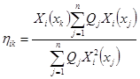
где Xi(xk) и Xi(xj) - смещения здания при собственных колебаниях по i-му тону в рассматриваемой точке k и по всех точках j, где в соответствии с расчетной схемой его вес принят сосредоточенным;
Qj - вес здания, отнесенный к точке j, определяемый с учетом расчетных нагрузок на конструкцию согласно пп. 2.2 и 2.3.
Рис. 2. Графики βi, для грунтов 1) I категории, 2) II категории, 3) III категории
Таблица 3
|
Расчетная сейсмичность при сейсмичности площадки строительства, баллы |
|||
|
7 |
8 |
9 |
|
|
1. Производственные здания, за исключением указанных в п.п. 2, 3 |
7 |
8 |
9 |
|
2. Здания*, функционирование которых необходимо при ликвидации последствий землетрясений (системы энерго- и водоснабжения, пожарные депо, системы пожаротушения, некоторые сооружения связи и т. п.) |
7 |
8 |
9 |
|
3. Здания, разрушение которых не связано с гибелью людей, порчей ценного оборудования и не вызывает прекращение непрерывных производственных процессов (склады, небольшие мастерские и др.), а также временные здания |
Без учета сейсмических воздействий |
||
* Здания рассчитываются на нагрузку, соответствующую расчетной сейсмичности, умноженную на коэффициент 1,2.
Таблица 4
|
Значение коэффициента KI |
|
|
1. Здания, в конструкциях которых могут быть допущены остаточные деформации, трещины, повреждения отдельных элементов и т. п., затрудняющие нормальную эксплуатацию, при обеспечении безопасности людей и сохранности оборудования (производственные здания; системы энерго- и водоснабжения, пожарные депо, системы пожаротушения, некоторые сооружения связи и т. п.) |
0,25 |
|
2. Здания, в конструкциях которых могут быть допущены значительные остаточные деформации, трещины, повреждения отдельных элементов, их смещения и т. п., временно приостанавливающие нормальную эксплуатацию, при обеспечении безопасности людей (одноэтажные производственные здания, не содержащие ценного оборудования) |
0,12 |
Таблица 5
|
Значение коэффициента K2 |
|
|
1. Здания каркасные с числом n этажей свыше 5 |
K2 = 1 + 0,1(n - 0,5) |
|
2. Каркасные одноэтажные здания, высота которых до низа балок или ферм не более 8 м и с пролетами не более 18 м |
0,8 |
|
3. Здания, не указанные в п. 1, 2 |
1 |
Примечания: 1. Значения K2 не должны превышать 1,5.
2. По согласованию с Госстроем СССР значения K2 допускается уточнять по результатам экспериментальных исследований.
Таблица 6
|
Значения коэффициента Kψ |
|
|
1. Высокие сооружения небольших размеров в плане (отдельно стоящие в пределах плана здания шахты лифтов, лестниц) |
1,5 |
|
2. Каркасные здания с железобетонными стойками со стеновым заполнением, выполненным в соответствии с указаниями п. 3.2, при отношении высоты стоек h к поперечному размеру b в направлении действия расчетной сейсмической нагрузки, равном или более 25 |
1,5 |
|
2. То же, но при отношении h/b равном или менее 15 |
1 |
|
4. Каркасные здания со стальными стойками со стеновым заполнением, выполненным в соответствии с указаниями п. 3.2, при отношении высоты стоек h к радиусу инерции сечения стоек r в направлении действия расчетной сейсмической нагрузки, равном или более 80 |
1,5 |
|
5. То же, но при отношении h/r равном или менее 40 |
1 |
Примечания: 1. При промежуточных значениях h/b и h/r величина Kψ принимается по интерполяции согласно табл. 7.
2. При разных высотах этажей значения Kψ принимаются по средним значениям h/b и h/r.
3. Для стоек жестко защемленных внизу и с шарнирной опорой вверху, имеющих в пределах высоты h переменное сечение, приведенный размер b железобетонных стоек устанавливается по формуле (6), а приведенный радиус инерции сечения r стальных стоек - по формуле (7)
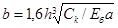
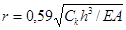
где Ck - жесткость стойки на уровне верхней точки закрепления при ее единичном перемещении в направлении действия расчетной сейсмической нагрузки;
Еб - начальный модуль упругости бетона при сжатии и растяжении;
а - горизонтальный размер грани колонн в направлении, перпендикулярном размеру b; для двухветвевых колонн при расчете каркаса в продольном направлении здания размер а принимается равным удвоенной величине горизонтального размера грани одной ветви в направлении, перпендикулярном размеру b;
Е - модуль упругости прокатной стали;
А - площадь сечения стальной стойки в нижнем сечении.
Таблица 7
|
h/b |
≤15 |
16 |
17 |
18 |
19 |
20 |
21 |
22 |
23 |
24 |
≥25 |
|
h/r |
≤40 |
44 |
48 |
52 |
56 |
60 |
64 |
68 |
72 |
76 |
≥80 |
|
Kψ |
1 |
1,05 |
1,1 |
1,15 |
1,2 |
1,25 |
1,3 |
1,35 |
1,4 |
1,45 |
1,5 |
2.10. Расчет зданий с учетом сейсмического воздействия, как правило, производится по предельным состояниям первой группы.
В случаях, обоснованных технологическими требованиями, допускается производить расчет по второй группе предельных состояний.
2.11. Усилия в конструкциях зданий, проектируемых для строительства в сейсмических районах, а также в их элементах следует определять с учетом не менее трех форм собственных колебаний, если периоды первого (низшего) тона собственных колебаний TI более 0,4 с, и с учетом только первой формы, если TI равно или менее 0,4 с.
2.12. Расчетные значения усилий или напряжений Np в конструкциях от сейсмической нагрузки следует определять по формуле:
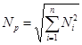
где Np - значение усилий или напряжений в рассматриваемом сечении, вызываемых сейсмическими нагрузками, соответствующими i-ой форме колебаний;
п - число учитываемых в расчете форм колебаний.
2.13. Вертикальную расчетную сейсмическую нагрузку для случаев, предусмотренных п. 2.6 (кроме каменных конструкций), следует определять по формулам (1) и (2) в зависимости от частоты и формы собственных вертикальных колебаний конструкций, при этом коэффициенты K2 и Kψ, принимаются равными 1.
Консольные конструкции, вес которых по сравнению с весом здания незначителен (балконы, козырьки, консоли для навесных стен и т. п. и их крепления), следует рассчитывать на вертикальную расчетную сейсмическую нагрузку при значении βηKψ = 5.
2.14. Конструкции, возвышающиеся над зданием и имеющие по сравнению с ним незначительные сечения и вес (парапеты, фронтоны и т. п.), а также крепления тяжелого оборудования, устанавливаемого на первом этаже, следует рассчитывать с учетом горизонтальной расчетной сейсмической нагрузки, вычисленной по формулам (1) и (2) при βηKψ = 5.
2.15. Стены, панели, перегородки, соединения между отдельными конструкциями, а также крепления технологического оборудования следует рассчитывать на горизонтальную сейсмическую нагрузку по формулам (1) и (2) при βηKψ, соответствующем рассматриваемой отметке сооружения, но не менее 2. Силы трения при этом не учитываются.
2.16. При расчете конструкций на прочность и устойчивость помимо коэффициентов условий работы, принимаемых в соответствии с другими главами II части СНиП, должен вводиться коэффициент условий работы mкр, определяемый по табл. 8.
2.17. При расчете зданий длиной или шириной более 30 м помимо сейсмической нагрузки, определяемой согласно п. 2.7, необходимо учитывать крутящий момент относительно вертикальной оси здания, проходящей через его центр жесткости. Значение расчетного эксцентриситета между центрами жесткостей и масс здания в рассматриваемом уровне следует принимать не менее 0,02В, где B - размер здания в плане в направлении, перпендикулярном действию силы Sik.
2.18. Для конструкции, расположенной на расстоянии lа от центра жесткости, поперечная сила от сейсмических нагрузок Qпол с учетом поворота здания (рис. 3 и 4) при жестких дисках перекрытий определяется по формуле
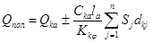
где Qka - поперечная сила от сейсмических нагрузок, действующая на рассматриваемую конструкцию a в уровне k перекрытия без учета поворота здания;
Cka - жесткость рассматриваемой конструкции а в уровне k;
la - расстояние от центра жесткостей k-ого этажа до рассматриваемой конструкции а;
Kkφ - угловая жесткость здания в уровне k-ого перекрытия при повороте в горизонтальной плоскости;
Sj - сейсмическая нагрузка, действующая на здание в уровне k и во всех более высоких уровнях (j ≥ k);
dkj - расстояние между центром жесткостей здания в уровне k и центрами его масс в уровне k и во всех более высоких уровнях (j ≥ k); для симметричных зданий с совпадающими расчетными центрами масс и жесткостей значение dkj принимается по п. 2.17.
Таблица 8
|
Значение коэффициента mкр |
|
|
При расчетах на прочность |
|
|
1. Стальные |
1,4 |
|
2. Железобетонные со стержневой и проволочной арматурой (кроме проверки прочности наклонных сечений): |
|
|
а) из тяжелого бетона с арматурой классов А-1, А-II, A-III, Вр-1 |
1,2 |
|
б) то же, с арматурой других классов |
1,1 |
|
в) из бетона на пористых заполнителях |
1,1 |
|
г) из ячеистого бетона с арматурой всех классов |
1 |
|
3. Железобетонные, проверяемые по прочности наклонных сечений: |
|
|
а) колонны многоэтажных зданий |
0,9 |
|
б) прочие элементы |
1 |
|
4. Каменные, армокаменные и бетонные: |
|
|
а) при расчете на внецентренное сжатие |
1,2 |
|
б) при расчете на сдвиг и растяжение |
1,1 |
|
5. Сварные соединения |
1 |
|
6. Болтовые (в том числе соединяемые на высокопрочных болтах) и заклепочные соединения |
1,1 |
|
При расчетах на устойчивость |
|
|
Стальные элементы гибкостью: |
|
|
7. свыше 100 |
1 |
|
8. до 20 |
1,2 |
|
9. от 20 до 100 |
От 1,2 до 1 (по интерполяции) |
Примечания: 1. Для указанных в поз. 1-4 конструкций зданий, возводимых в районах с повторяемостью сейсмических воздействий 1, 2, 3, значения mкр следует умножать на 0,85; 1 или 1,15 соответственно.
2. При расчете стальных и железобетонных несущих конструкций, подлежащих эксплуатации в неотапливаемых помещениях или на открытом воздухе при расчетной температуре ниже минус 40°С, следует принимать mкр = 1 в случаях проверки прочности наклонных сечений колонн mкр = 0,9.
Рис. 3. Поворот
в плане здания, имеющего эксцентриситет
между центрами масс и жесткостей
1 - центр жесткостей, 2 - центр масс
Рис. 4. К определению расстояния между центром
жесткостей здания в уровне k
перекрытия и центрами его масс в уровне k и во всех более высоких
уровнях
слева - при совпадении центров жесткостей по всем уровням; справа - при
совпадении центра жесткостей
здания в уровне k с центрами жесткостей в более высоких уровнях; 1
- центр жесткостей; 2 - центр масс
Расположение центра масс здания относительно крайней оси в плане (рис. 5) ум на каком-либо уровне может быть определено по формуле
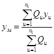
где Qu - нагрузки, принимаемые сосредоточенными в отдельных точках плана здания;
yu -расстояние от крайней оси до соответствующей нагрузки Qц.
Суммирование производится по всем точкам, где принята сосредоточенная нагрузка.
Расположение центра жесткостей здания относительно той же крайней оси (рис. 5) уж может быть определено по формуле
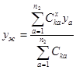
где 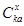
ya - расстояние от крайней оси до соответствующей конструкции а.
Рис. 5. К определению центров масс и жесткостей здания в плане
1 - центр жесткостей
Суммирование производится по всем вертикальным конструкциям.
Аналогично вычисляются положения центров масс и жесткостей конструкций относительно другой оси здания.
Угловая жесткость здания Kkφ в уровне k перекрытия определяется по формуле
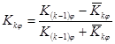
причем при k=1
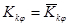
где Kkφ - угловая жесткость яруса в уровне k-го перекрытия (при условии, что k-ый ярус свободно поворачивается в горизонтальной плоскости, а остальные закреплены).
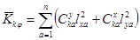
где и 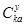
lxa и lya - расстояния каждой вертикальной конструкции соответственно до продольной и поперечной осей, проведенных через центр жесткостей здания (рис. 5).
Суммирование производится по всем вертикальным конструкциям, жесткость которых учитывается в расчете (стойки каркаса, связи, стены и т. п.).
2.19. Проектирование оснований и фундаментов зданий для строительства в сейсмических районах следует производить в соответствии с требованиями, глав СНиП по проектированию оснований зданий и сооружений, по проектированию оснований и фундаментов в вечномерзлых грунтах, по проектированию свайных фундаментов и глубоких опор и с использованием разработанных в развитие этих глав СНиП рекомендаций, а также с учетом указаний разд. 4 настоящего пособия.
3. КАРКАСНЫЕ ПРОИЗВОДСТВЕННЫЕ ЗДАНИЯ. ОБЩИЕ ПОЛОЖЕНИЯ
3.1. В каркасных зданиях конструкцией, воспринимающей горизонтальную сейсмическую нагрузку, может служить: каркас, каркас с вертикальными связями и диафрагмами жесткости.
Сейсмические силы, действующие в плоскости самонесущих стен, должны восприниматься самими стенами.
3.2. Здания следует проектировать с соблюдением следующих требований:
а) между поверхностями стен и конструкциями каркаса должен предусматриваться зазор не менее 20 мм;
б) в местах пересечения торцовых и поперечных стен с продольными стенами должны устраиваться антисейсмические швы на всю высоту стен;
в) в навесных стенах должны устраиваться горизонтальные антисейсмические швы по всей длине стен, при этом расположение их по высоте стен определяется в соответствии с указаниями разд. 5 в зависимости от принятой конструкции стен;
г) крепления стен к конструкциям каркаса не должны препятствовать горизонтальным смещениям каркаса вдоль самонесущих стен или смещениям каркаса в пределах высот навесных ярусов стен (при навесных стенах);
д) перегородки должны проектироваться таким образом, чтобы они не увеличивали жесткость каркасов здания. Рекомендации по выключению перегородок из работы совместно с несущими конструкциями каркаса здания приведены в разд. 6;
е) лестничные клетки и лифтовые шахты зданий следует устраивать в соответствии с разд. 7.
3.3. При расчетах каркасов зданий (отсеков) с учетом сейсмических воздействий деформации конструкций не ограничиваются, если обеспечивается несущая способность конструкций с учетом их деформированного состояния и если не установлены предельные значения этих деформаций по технологическим требованиям (см. п. 2.10).
3.4. Антисейсмические швы следует выполнять путем устройства парных рам со вставкой с сохранением координационных осей зданий. Размеры вставок назначаются в зависимости от ширины антисейсмического шва.
Заполнение антисейсмических швов не должно препятствовать взаимному смещению стен и каркасов (отсеков). Наименьшая ширина антисейсмического шва «а» (мм) назначается в зависимости от высоты здания (см. п. 3.5) и определяется по формуле
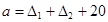
где Δ1 и Δ2 - максимальные перемещения (мм) двух смежных каркасов (отсеков) здания, разделенных антисейсмическим швом при действии расчетных горизонтальных сейсмических нагрузок.
3.5. При высоте здания до 5 м ширина шва должна быть не менее 30 мм. Для зданий большей высоты минимальную ширину шва следует увеличивать на 20 мм на каждые 5 м высоты.
3.6. При определении жесткости каркаса жесткость стен, запроектированных с соблюдением требований п. 3.2, не учитывается, за исключением жесткости самонесущих стен в направлении, перпендикулярном их плоскости, которая принимается в соответствии с п. 5.40.
Примечание. Проектирование каркасов зданий допускается производить с учетом жесткости навесных стен и податливости соединений элементов каркаса при наличии апробированных экспериментальных данных и соответствующих рекомендации по их учету.
3.7. Покрытия и перекрытия зданий должны быть возможно более жесткими в горизонтальной плоскости. Для обеспечения необходимой жесткости диска покрытия и перекрытия с применением сборных железобетонных плит должны предусматриваться мероприятия в соответствии с пп. 3.28 - 3.46, 3.74, 3.76 и 3.82, а для покрытий из стального профилированного настила, асбестоцементных плит (каркасных и бескаркасных), волнистых листов в соответствии с пп. 3.42 - 3.45, 3.60.
3.8. При проектировании зданий следует предусматривать и проверять расчетом крепления высокого и тяжелого оборудования к несущим конструкциям зданий, а также учитывать сейсмические усилия, возникающие при этом в несущих конструкциях (см. п. 3.68).
3.9. Выбор марок сталей для железобетонных и стальных конструкций зданий производится в соответствии с требованиями главы СНиП по проектированию бетонных и железобетонных конструкций и главы СНиП по проектированию стальных конструкций. Электроды для сварки арматуры назначаются в зависимости от класса арматуры по «Инструкции по сварке соединений арматуры и закладных деталей железобетонных конструкций» (СН 393-78), а для сварки стальных конструкций по СНиП по проектированию стальных конструкций. При ручной дуговой сварке рекомендуется применять электроды Э42А, Э46А и Э50А.
Каркас одноэтажного здания. Общие положения
3.10. Каркасы одноэтажных производственных зданий с размерами по п. 1.1 в поперечном направлении рекомендуется проектировать, как правило, по конструктивной схеме в виде стоек, защемленных в фундаментах и шарнирно сопряженных с ригелями покрытия.
В зданиях со стальным каркасом с высотами большими, чем предусмотрено унифицированными габаритными схемами, сопряжения колонн с ригелями покрытия рекомендуется выполнять в виде жестких рамных узлов с целью ограничения деформаций от сейсмических нагрузок. В продольном направлении каркасы могут проектироваться по той же конструктивной схеме, как и в поперечном направлении или по схеме с установкой стальных связей между стойками.
Примечание. Проектирование зданий с пространственными конструкциями покрытий типа структур следует выполнять в соответствии с Руководством по проектированию структурных конструкций.
3.11. Расчет каркасов одноэтажных зданий (отсеков) на горизонтальные сейсмические нагрузки рекомендуется выполнять на ЭВМ с учетом их пространственной работы.
При расчете на сейсмические нагрузки в поперечном направлении в качестве эквивалентной динамической модели каркаса может приниматься расчетная схема, состоящая из поперечных рам и фахверковых стоек (в случае их защемления в фундаментах), соединенных в уровне их верха стержнями бесконечной жесткости с условной продольной балкой, жесткость которой (EIус) эквивалентна суммарной горизонтальной жесткости диска покрытия в поперечном направлении здания (рис. 6, а). Вертикальные нагрузки в расчетной схеме принимаются сосредоточенными в центрах приведения в соответствии с указаниями п. 3.12.
При покрытиях из сборных железобетонных плит (см. пп. 3.28 ÷ 3.30) или из профилированного стального настила, жестко связанного с прогонами (см. п. 3.45), допускается принимать диск покрытия бесконечно жестким в поперечном направлении здания. В этом случае, в целях уменьшения вычислительных работ, поперечные рамы, кроме рассчитываемой, могут быть заменены в расчетной схеме каркаса одной эквивалентной стойкой, а все фахверковые стойки - другой эквивалентной стойкой (рис. 6, б).
При расчете на сейсмические нагрузки в продольном направлении в качестве эквивалентной динамической модели каркаса при наличии вертикальных связей между колоннами может приниматься расчетная схема, состоящая из всех связевых панелей и колонн (для стальных каркасов допускается жесткость колонн не учитывать, рис. 6, в), а при отсутствии связей - расчетная схема состоит из продольных рам и фахверковых стоек, если эти стойки защемлены в фундаментах.
Рис. 6.
Динамические расчетные схемы каркаса здания (отсека) при действии
сейсмической нагрузки в поперечном (а, б) и продольном (в)
направлениях
1 -
рассчитываемая поперечная рама; 2 - стойка, заменяющая все другие
поперечные рамы; 3 - стойка,
заменяющая все фахверковые стойки
Связевые панели, продольные рамы и фахверковые стойки в уровне их верха считаются соединенными бесконечно жесткими стержнями с условной поперечной балкой, жесткость которой (EIус) эквивалентна суммарной горизонтальной жесткости диска покрытия в продольном направлении здания (отсека). При отсутствии необходимых данных по оценке горизонтальной жесткости диска покрытия здания (отсека) расчет каркаса в продольном направлении рекомендуется выполнять в соответствии с указаниями пп. 3.13 - 3.15. Вертикальные нагрузки принимаются сосредоточенными в уровне верха связевых панелей или продольных рам и определяются в соответствии с п. 3.12.
3.12. Вертикальные нагрузки принимаются сосредоточенными в следующих центрах приведения:
а) в уровне верха стоек QП - от собственного веса покрытия (включая вес подвесных потолков; промышленных проводок; путей подвесных кранов; собственно подвесных кранов, без веса тележек и груза, при катании кранов перпендикулярно рассматриваемому направлению и др.), снега, стен и перегородок, расположенных выше верха колонн, и 1/4 собственного веса: колонн, стен и перегородок, расположенных в пределах высоты колонн; при самонесущих стенах включается собственный вес стен, расположенных только в плоскостях, перпендикулярных направлению действующих сейсмических нагрузок;
б) в уровне низа подкрановых балок - от собственного веса подкрановых балок, рельсов крановых путей и тормозных конструкций (Qп.б) и мостов кранов (Qкр) (мосты кранов учитываются только при расчете каркаса в поперечном направлении); при этом в каждом крановом пролете рассчитываемой поперечной рамы учитывается по одному крану; величина нагрузки, действующей на j-ую стойку поперечной рамы расчетной схемы каркаса, в створе которой установлены мостовые краны, определяется по формулам:
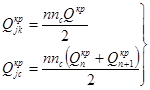
где 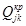
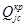
nc - коэффициент сочетания, назначается по п. 2.2. Допускается при определении периодов собственных колебаний зданий (отсеков) принимать nc = 0,5;
Qкр - вес моста крана (без учета веса тележки и груза), расположенного в створе поперечной рамы расчетной схемы каркаса;
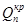 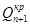
Рис. 7. Расчетные схемы рам каркаса
а -
поперечный разрез здания с железобетонным каркасом; б - динамическая
расчетная схема каркаса
здания; в - поперечный разрез здания со стальным каркасом; г -
расчетная схема поперечной рамы при
шарнирном опирании несущих конструкций покрытия на колонны; д, е
- продольный разрез здания с
железобетонным каркасом и его расчетная схема; ж, з - продольный
разрез здания со стальным каркасом
и его расчетная схема
в) в уровне середины высоты стоек - 1/2 собственного веса: колонн (Qк), стен и перегородок, расположенных в пределах высоты колонн (Qc).
Нагрузки Qп, Qп.б, Qк и Qс должны определяться с коэффициентами сочетаний, принимаемыми в соответствии с п. 2.2.
3.13. Допускается выполнять расчет каркаса здания, принимая динамическую расчетную схему в виде невесомой консольной стойки (рис. 7, б), защемленной на уровне верха фундамента, с весом, сосредоточенным на уровне верха колонн (система с одной степенью свободы). В этом случае коэффициент η равен единице, а период собственных колебаний каркаса в секундах Т определяется по формуле
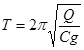
где Q - вертикальная нагрузка, принимаемая сосредоточенной в уровне верха колонн;
С - жесткость каркаса здания (отсека) на уровне верха колонн;
g - ускорение силы тяжести.
Нагрузка Q (с учетом коэффициентов перегрузки и коэффициентов сочетаний, принимаемых в соответствии с указаниями п. 2.2) составляется из:
а) собственного веса покрытия (включая вес подвесных потолков; промышленных проводок; подвесных кранов с путями, без веса тележек и груза, при катании кранов перпендикулярно рассматриваемому направлению и др.), а также стен и перегородок, расположенных выше верха колонн; собственный вес самонесущих стен учитывается по п. 3.12а;
б) 1/4 собственного веса: колонн, подкрановых балок, тормозных конструкций и участков стен и перегородок, расположенных в пределах высоты колонн; собственный вес самонесущих стен учитывается по п. 3.12a;
в) 1/4 собственного веса мостов опорных кранов, расположенных в здании или отсеке (только при расчете в поперечном направлении);
г) снеговых нагрузок,
При определении нагрузки Q учитываются указания п. 2.3.
Жесткость каркаса здания (отсека) на уровне верха колонн C определяется по формуле
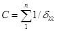
п - число колонн (или рам) в каркасе здания (отсека);
δkk - перемещение отдельной колонны (или рамы) на уровне ее верха от действия горизонтальной единичной силы, приложенной в том же уровне.
Перемещения продольных рам каркаса с железобетонными колоннами и стальными связями между ними вычисляются с учетом деформаций этих связей; перемещения пристенных колонн в зданиях с самонесущими стенами в направлении перпендикулярном их плоскости, вычисляются с учетом жесткости стен в соответствии с п. 5.40; перемещения продольных стальных рам допускается принимать равным перемещению их связевых панелей.
При наличии в здании (отсеке) с жестким диском покрытия колонн продольных и торцевых фахверков (в случае их защемления в фундаментах) перемещения каркаса вычисляются с учетом жесткости этих колонн.
Примечание. Рекомендации по определению параметров одноэтажных зданий с железобетонным каркасом с учетом снижения жесткости колонн при действии сейсмических нагрузок приведены в прил. 2.
3.14. При расчете каркаса здания (отсека) как системы с одной степенью свободы (см. п. 3.13) расчетные сейсмические нагрузки, действующие на рассматриваемую поперечную или продольную раму (связевую панель), определяются по формуле (1) и принимаются (рис. 7, г, е, з):
а) от вертикальной нагрузки Qп, расположенной выше уровня верха колонн, - сосредоточенными Sп, приложенными в уровне верха колонн.
Нагрузка Qп составляется из собственного веса покрытия (включая вес подвесных потолков; промышленных проводок; путей подвесных кранов, собственно подвесных кранов, без веса тележек и груза, при катании кранов перпендикулярно рассматриваемому направлению и др.), снега, стен и перегородок, расположенных выше верха колонн, а также 50 % собственного веса стен и перегородок, связанных с покрытием с помощью фахверковых стоек.
Сейсмическая нагрузка Sп на поперечную или продольную раму (или связевую панель) вычисляется в соответствии с п. 3.15;
б) от собственного веса колонн зданий Qк - сосредоточенными 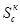
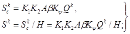
в) от собственного веса подкрановых балок, рельсов крановых путей и тормозных конструкций Qп.б - сосредоточенными, приложенными в уровне низа подкрановых балок:
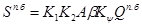
г) от собственного веса участков стен и перегородок,
расположенных в пределах высоты колонн при определении сейсмических нагрузок,
действующих в направлении, перпендикулярном плоскости стен и перегородок; Qс - сосредоточенными 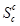
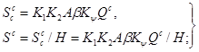
д) от собственного веса навесных стен, расположенных в пределах высоты колонн, при определении сейсмических нагрузок, действующих в плоскости этих стен, Qн.с - сосредоточенными, приложенными в уровне опорных консолей навесных стен:
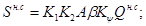
е) от собственного веса мостовых кранов - в соответствии с п. 3.17.
В формулах (19) и (21) под Н принято расстояние от верха фундаментов до верха колонн; описание параметров K1, K2, A, β, Kψ приведено в разд. 2.
Вертикальные нагрузки Q должны определяться с коэффициентами сочетаний, принимаемыми в соответствии с п. 2.2. При определении сейсмических нагрузок от собственного веса стен и перегородок должны учитываться указания пп. 2.3 и 3.12а.
Примечание. Связевые панели продольных рядов колонн допускается рассчитывать только на действие одной сейсмической нагрузки Sп в уровне верха колонн, при этом в вертикальную нагрузку Qп, определяемую по подпункту «а», следует добавить нагрузку от 1/4 собственного веса: колонн, подкрановых балок, тормозных конструкций и участков стен и перегородок, расположенных в пределах высоты колонн.
3.15. Сейсмическая нагрузка Sп, действующая в уровне верха колонн рассматриваемой поперечной или продольной рамы (связевой панели) каркаса здания (отсека), рассчитываемого в соответствии с п. 3.14а, определяется:
а) при покрытиях из сборных железобетонных плит: на поперечную раму - по формуле (23); на продольную раму (связевую панель) при пролетах поперечных рам до 24 м включительно - по формуле (23), а при пролетах более 24 м - по формулам (23) и (24) и принимается для расчета большее значение Sп, подсчитанное по этим двум формулам:
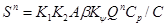
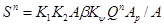
где Qп - вертикальная нагрузка, вычисленная для всего каркаса здания (отсека);
β - коэффициент динамичности, вычисленный для каркаса здания (отсека) по формулам (3)-(5);
С и Ср - жесткости на уровне верха колонн соответственно каркаса здания (отсека) и рассматриваемой рамы (или связевой панели), определяемые по формуле (18);
А и Аp - грузовые площади соответственно здания (отсека) и рассматриваемой рамы (связевой панели);
K1, K2, A, Kψ - принимаются по разд. 2;
б) при покрытиях из профилированного стального настила; на поперечную раму - по формуле (23), на продольную раму (связевую панель) - по формулам (23) и (24) и принимается для расчета большее значение Sп, подсчитанное по этим двум формулам;
в) при покрытиях из асбестоцементных плит (каркасных и бескаркасных) или асбестоцементных волнистых листов унифицированного профиля и конструкционных типа ВК на поперечную и продольную раму (связевую панель) - по формуле (24).
Примечание. При определении усилий с учетом сейсмической нагрузки в поперечных рамах одноэтажных зданий с жестким диском покрытия допускается производить перераспределение усилий между торцовыми (или у антисейсмических швов) и промежуточными рамами. Значения изгибающих моментов в расчетных сечениях колонн торцовых рам и рам у антисейсмических швов от действия нагрузок, определенные с учетом перераспределения усилий, могут отличаться от значений изгибающих моментов, вычисленных без учета перераспределения, не более чем на 30 %.
3.16. Деформация (перемещение) каркаса здания (отсека) на уровне верха колонн от действия расчетных горизонтальных сейсмических нагрузок Δ определяется по формуле
Δ=S/C, (25)
где S - расчетная горизонтальная сейсмическая нагрузка на каркас здания (отсека), вычисленная для соответствующего направления и приложенная статически на уровне верха колонн;
С - жесткость каркаса здания (отсека) на уровне верха колонн, определяется по формуле (18).
Рис. 8. Схемы к расчету колонны на местную
сейсмическую нагрузку
от собственного веса моста крана
а - деталь
разреза здания; б - динамическая расчетная схема колонны; в -
расчетная схема колонны;
1 - мостовой кран
3.17. В колоннах, несущих крановую нагрузку, помимо усилий от сейсмических нагрузок, вычисленных в соответствии с п. 3.14а - д, в плоскости поперечной рамы каркаса должны учитываться усилия, вызванные местной сейсмической нагрузкой от собственного веса мостов опорных кранов. Для зданий с жестким диском покрытия (см. п. 3.11) в расчетной схеме колонн верхняя опора принимается несмещаемой (рис. 8). В этом случае сейсмическая сила от кранов, прикладываемая к колонне на уровне низа подкрановых балок, определяется по формулам (1) и (2) как для системы с одной степенью свободы. При этом величина нагрузки Qкр, сосредоточенная на уровне низа подкрановых балок, принимается равной максимальному давлению на колонну от собственного веса мостов кранов (с учетом коэффициента сочетания, принимаемого в соответствии с п. 2.2), располагаемых по одному в каждом пролете здания, а произведение коэффициентов βη принимается равным 3; 2,7 и 2 соответственно для грунтов I, II и III категории по сейсмическим свойствам (по табл. 1). Суммирование усилий в колоннах от сейсмических нагрузок, вычисленных по п. 3.14а - д (No) и от собственного веса мостов опорных кранов (Nкр) рекомендуется выполнять по формуле
Np = No + Nкр. (26)
Если жесткость диска покрытия недостаточна (например, покрытия с асбестоцементными плитами или листами), то при расчете колонн поперечной рамы, несущей крановую нагрузку, на сейсмические силы от собственного веса мостов кранов, определенные в предположении несмещаемости верхней опоры колонн, рекомендуется выполнять перераспределение этих сил на соседние поперечные рамы через продольные связевые фермы покрытия. При равножестких поперечных рамах горизонтальные реакции в уровне верха колонн рам рекомендуется определять по формулам (34)-(38), в которых вместо Sсв следует подставить R0 (параметры, входящие в расчетные формулы, описаны в п. 3.51 в).
При определении горизонтальных сейсмических нагрузок, действующих на колонны в продольном направлении, нагрузка от крана не учитывается.
3.18. При расчете каркаса здания на особое сочетание нагрузок с учетом действия сейсмических нагрузок вертикальная нагрузка от кранов принимается от одного крана в каждом пролете и определяется при максимальном давлении на колеса крана (включая вес тележки и груза) с коэффициентами сочетания, принимаемыми в соответствии с п. 2.2.
3.19. Стойки фахверка поперечных или продольных стен в зданиях со стальными стропильными фермами следует крепить, как правило, в уровне верха и низа покрытия (рис. 9, а, в), а в зданиях с железобетонными несущими конструкциями покрытия - в уровне верха покрытия (рис. 9, д). Опирание стоек фахверка и передачу сейсмических нагрузок в уровне низа покрытия здания со стальными несущими конструкциями следует предусматривать в узлах горизонтальных связевых ферм по нижним поясам стропильных ферм. Сопряжение стоек фахверка с конструкциями покрытия должны проектироваться из условия обеспечения возможности независимых перемещений их в вертикальной плоскости.
Рис. 9. Схемы к расчету фахверковых стоек зданий без
мостовых кранов
(а, б, д, е, ж) и с мостовыми кранами (в,
г)
а, в,
д - детали разрезов зданий; б, г, е, ж -
расчетные схемы стоек; 1 - стальные несущие конструкции
покрытий; 2 - железобетонные несущие конструкции покрытий; 3 -
фахверковая стойка; 4 - навесные
участки стен; 5 - опорные консоли; 6 - подкрановая балка с
тормозной конструкцией или переходной
крановой площадкой
Фахверковые стойки рассчитываются как внецентренно сжатые элементы с учетом местных сейсмических нагрузок от собственного веса навесных или самонесущих стен (Sc) и стоек (Sk) (рис. 9, б, г, е, ж). Расчетная схема стойки фахверка принимается, как правило, однопролетной при железобетонных несущих конструкциях покрытия (рис. 9, е, ж) и двухпролетной при стальных стропильных фермах (рис. 9, б). При наличии опирания фахверковых стоек на тормозные конструкции, переходные площадки мостовых опорных кранов или непосредственно на подкрановые балки в их расчетных схемах добавляется промежуточная шарнирная опора (рис. 9, г).
Фахверковые стойки, шарнирно соединенные с конструкциями покрытия и защемленные на уровне верха фундаментов, должны рассчитываться на совместное действие усилий, возникающих при перемещении каркаса на величину Δ (см. п. 3.16) и усилий от местных сейсмических нагрузок - Sc и Sk (рис. 9, е).
Расчетные моменты в фахверковых стойках допускается определять с учетом упругого поворота фундамента.
Величина местной сейсмической нагрузки от собственного веса навесных или самонесущих стен определяется по формулам (1) и (2), при этом произведение коэффициентов βηKψ принимается как для каркаса соответствующего направления, но не менее 2.
3.20. Вертикальные связи между колоннами следует располагать по каждой продольной координационной оси здания (отсека). Связи верхнего яруса, примыкающие к верху колонн (надкрановые связи) рекомендуется принимать сжато-растянутыми.
Связи и их крепления к колоннам должны быть проверены расчетом на прочность (или устойчивость) от действия расчетных горизонтальных сейсмических нагрузок. Закладные изделия и их заделка в железобетонных колоннах должны быть рассчитаны в соответствии с пп. 8.10 ÷ 8.12.
Число связей в каждом ряду колонн на длину здания (отсека) определяется их несущей способностью. Вертикальные связи в бескрановых зданиях или в пределах подкрановых частей колонн должны располагаться в средней части здания (отсека). При необходимости установки по продольной координационной оси здания отсека двух связей расстояние между ними в осях должно быть не более 48 м. Стальные связи по железобетонным колоннам продольных координационных осей здания (отсека) с мостовыми опорными кранами рекомендуется располагать в пределах подкрановых частей колонн (рис. 10, б). Надкрановые связи для стальных колонн устанавливаются в крайних шагах колонн здания (отсека), а также в промежуточных шагах, в которых предусматриваются вертикальные связи по опорам стропильных ферм или горизонтальные связи по стропильным фермам (вне зависимости от расположения подкрановых связей).
При наличии подстропильных ферм схема расположения связей не меняется.
В местах установки надкрановых или подкрановых связей в уровне верхнего пояса стальных подкрановых балок должны предусматриваться тормозные балки.
Рис. 10. Примеры схем расположения вертикальных связей
между колоннами в
зданиях с мостовыми кранами при стальных (а) и железобетонных (б)
колоннах и
в зданиях без мостовых кранов (в)
1 -
вертикальная связь покрытия; 2 - вертикальная связь между колоннами;
3 - поперечная связевая ферма покрытия; 4 - распорки; 5 -
дополнительные распорки
В тех случаях, когда несущая способность сварных швов крепления опорных стоек ферм покрытия к колоннам недостаточна для восприятия горизонтальных сейсмических нагрузок, передающихся с этих стоек на вертикальную связь по колоннам, следует установить между колоннами дополнительные распорки с целью включения необходимого количества опорных стоек в передачу сейсмической нагрузки на связи по колоннам (рис. 10, в).
3.21. Подкрановые и тормозные конструкции, запроектированные для несейсмических районов, при применении в сейсмических районах должны быть проверены расчетом:
а) на особое сочетание нагрузок с учетом расчетных горизонтальных сейсмических нагрузок, действующих в поперечном направлении здания (отсека); при этом величина сейсмической нагрузки определяется по формулам (1) и (2) от каждого колеса одного крана. Нагрузка Qk в формуле (2) принимается равной давлению колеса от веса моста крана (без учета веса тележки и груза) при его невыгоднейшем расположении в пролете подкрановой балки, а значение произведения коэффициентов βηKψ воспринимается как при расчете каркаса в поперечном направлении здания.
Рис. 11. Стык крановых рельсов вблизи антисейсмического шва
1 - подкрановая балка; 2 - крановый рельс; 3 - накладка
В особом сочетании нагрузок вертикальная нагрузка от кранов определяется при максимальном давлении на колеса, включая вес тележки и груза. Нагрузка Qk в формуле (2) и вертикальная нагрузка от кранов в особом сочетании нагрузок должны определяться с коэффициентами сочетаний, принимаемыми в соответствии с п. 2.2;
б) на усилия, возникающие в подкрановых балках при передаче продольных расчетных горизонтальных сейсмических нагрузок на связевую панель рамы.
На нагрузки, указанные в подпункте «а», рассчитываются верхние пояса подкрановых балок, элементы тормозных конструкций и их креплений к колоннам. На усилия, указанные в подпункте «б», рассчитываются элементы крепления подкрановых балок к колоннам в местах установки вертикальных связей по колоннам и болты, соединяющие стальные подкрановые балки между собой.
Предварительно напряженные железобетонные подкрановые балки, применяемые в сейсмических районах, должны удовлетворять требованиям п. 8.6.
3.22. Крановые рельсы вблизи антисейсмического шва с целью обеспечения возможности взаимного смещения отсеков здания должны разрезаться на отдельные участки длиной до 1,5 м и устанавливаться с зазорами не более 8 мм, суммарная величина которых должна быть не менее 40 мм (рис. 11).
3.23. Покрытия зданий следует проектировать из конструкций, возможно меньшего их веса. Для отапливаемых зданий следует применять, как правило, сборные железобетонные плиты шириной 3 м (преимущественно из легкого бетона на пористых заполнителях), комплексные сборные железобетонные плиты шириной 3 м из легких бетонов с эффективным утеплителем, стальной профилированный настил или асбестоцементные плиты с эффективным утеплителем.
В качестве эффективного утеплителя рекомендуется применять плиты из полимерных материалов, плиты повышенной жесткости из минеральной ваты и стеклянного волокна на полимерной связке, перлитофосфогелевые плиты, плиты из ячеистых, перлитоцементных и полистирольных бетонов, плиты из битумоперлита, битумокерамзита и др.
Покрытия неотапливаемых зданий должны выполняться, как правило, из крупноразмерных асбестоцементных волнистых листов унифицированного профиля и конструкционных типа ВК, а в зданиях с расчетной сейсмичностью 9 баллов при соответствующем технико-экономическом обосновании допускается использование стального профилированного настила.
3.24. Фонарь по длине здания (отсека) должен не доходить до торцов здания и антисейсмических швов на один шаг стропильных конструкций для создания замкнутого диска покрытия. В зданиях с фонарями рамы фонарей рекомендуется выполнять стальными.
Устойчивость поперечных несущих конструкций фонаря (фонарных ферм) в продольном направлении здания должна обеспечиваться постановкой вертикальных и горизонтальных связей и распорок (рис. 12).
Рис. 12. Схема расположения связей по фонарю в
покрытиях из стального
профилированного настила при шаге стропильных ферм 6 м
1 - торец
здания или ось антисейсмического шва; 2 - фонарные фермы; 3 -
вертикальная связь;
4 - горизонтальная связь; 5 - прогоны; 6 - фонарные
панели; 7 - панели торца фонаря
Вертикальные связи устанавливаются между фонарными фермами и панелями торцов фонаря, а также в промежуточных шагах фонарных ферм. Число промежуточных вертикальных связей назначается в зависимости от величины продольной горизонтальной сейсмической нагрузки на фонарь и несущей способности связей. Промежуточные связи следует, как правило, предусматривать в случаях установки поперечных промежуточных связей в плоскости верхних поясов стропильных стальных ферм. Каждая вертикальная связь по фонарю должна быть смещена на один шаг ферм от вертикальных связей по стропильным фермам.
Рис. 13. Расчетные схемы горизонтальных связевых
панелей фонаря (а)
вертикальных связей между фонарными фермами (б)
1 - горизонтальная связь; 2 - вертикальная связь
Горизонтальные связи устанавливаются в плоскости верхнего пояса фонарных ферм над вертикальными связями. При железобетонных плитах покрытия горизонтальные связи необходимы только по условиям монтажа стальных конструкций фонаря.
Функции распорок в уровне верхних поясов фонарных ферм выполняют прогоны под металлический профилированный настил или продольные ребра железобетонных плит покрытия, приваренные к рамам фонаря.
На подфонарных участках покрытия в уровне верхнего пояса ферм для обеспечения их устойчивости должны устанавливаться распорки и растяжки.
Конструкции фонаря должны быть рассчитаны на особое сочетание нагрузок с учетом сейсмических нагрузок, действующих вдоль или поперек фонаря. На продольные нагрузки рассчитываются вертикальные и горизонтальные связи, на поперечные - фонарные фермы и панели торцов фонаря. Сейсмические нагрузки, действующие на фонарь, определяются по формулам (1) и (2) при значениях β, Kψ и η, принятых из расчета каркаса в соответствующем направлении.
Расчетные схемы горизонтальных связей по фонарю приведены на рис. 13, а. Сейсмические нагрузки, действующие на горизонтальные связи, определяются:
S1 и S2 - от собственного веса кровли фонаря и ее несущих конструкций, снега и от 50 % собственного веса фонарных ферм; S1 и S2 - вычисляются от нагрузок с прилегающих грузовых площадей и равномерно распределяются между связями по длине фонаря;
S3 - от 40 % собственного веса фонарных панелей (с остеклением, механизмами открывания и т. д.); S3 - равномерно распределяется между связями по длине фонаря;
S4 и S5 - от 50% собственного веса торца фонаря; S4 и S5 - вычисляются от нагрузки с прилегающих грузовых площадей и передаются только на связи, расположенные у торцов фонаря.
Расчетная схема вертикальной связи между фонарными фермами приведена на рис. 13, б. Сейсмическая нагрузка S, действующая на вертикальную связь, определяется суммированием нагрузок S1 - S5, прикладываемых в узлах горизонтально-связевой панели фонаря. Вертикальные реакции связей, определяемые по формуле (27), должны быть учтены в расчете стропильных ферм на особое сочетание нагрузок при действии на покрытие продольных горизонтальных сейсмических нагрузок.
RA = -RБ = ShФ/l, (27)
где S - сейсмическая нагрузка, действующая на вертикальную связь между фонарными фермами; hФ - высота фонарной фермы; l - шаг фонарных ферм.
Железобетонный каркас одноэтажного здания
3.25. Жесткость сечения внецентренно сжатых и изгибаемых железобетонных элементов при определении сейсмических нагрузок принимается равной EбI, где Eб - начальный модуль упругости бетона при сжатии и растяжении; I - момент инерции полного бетонного сечения. При этом расчет каркаса на особое сочетание нагрузок допускается выполнять по деформированной схеме с учетом неупругих деформаций бетона и арматуры и наличия трещин.
3.26. Сборные железобетонные стропильные и подстропильные конструкции следует, как правило, применять в зданиях с расчетной сейсмичностью 7 баллов с пролетами, аналогичными пролетам соответствующих зданий, возводимых в несейсмических районах, а в зданиях с расчетной сейсмичностью 8 и 9 баллов - с пролетами соответственно до 18 и 12 м включительно. В зданиях с расчетной сейсмичностью 8 баллов при соответствующем обосновании допускается применять стропильные конструкции пролетом 24 м.
Конструктивные решения покрытий зданий с железобетонными несущими конструкциями следует применять при расчетной сейсмичности 7 баллов - без подстропильных конструкций и с ними; при расчетной сейсмичности здания 8 баллов предпочтение следует отдавать покрытиям без подстропильных конструкций (с шагом колонн и стропильных конструкций 6 и 12 м); при расчетной сейсмичности 9 баллов - без применения подстропильных конструкций (с шагом колонн и стропильных конструкций, как правило, 6 м).
3.27. Покрытия зданий из сборных железобетонных плит следует выполнять, как правило, из типовых конструкций, разработанных для сейсмических районов. При этом учитываются указания пп. 3.28 - 3.39.
3.28. Для восприятия горизонтальных сейсмических нагрузок в поперечном направлении здания следует выполнять замоноличивание плит покрытия в соответствии с указаниями пп. 3.29 и 3.30.
В зданиях (отсеках) бесфонарных или с зенитными фонарями с расчетной сейсмичностью 7 и 8 баллов и в зданиях (отсеках) с фонарными надстройками при расчетной сейсмичности 7 баллов горизонтальная сейсмическая нагрузка, действующая на плиты покрытия в продольном направлении здания (отсека), передается на продольные ряды колонн диском покрытия, образованным замоноличенными плитами в соответствии с пп. 3.29 и 3.30. Кроме замоноличивания плит в зданиях с фонарными надстройками при расчетной сейсмичности 8 баллов плиты, расположенные у торцов здания (отсека) и поперечных антисейсмических швов (кроме плит, расположенных по продольным координационным осям), на опорах соединяются между собой при помощи стальных элементов, привариваемых к закладным изделиям в полках плит, а в зданиях с сейсмичностью 9 баллов указанные стальные элементы устанавливаются по всем опорам плит (рис. 14 и 15). Сечение соединительных элементов и стержней соединительной арматуры дополнительных закладных изделий (рис. 16) в плитах определяется по расчету на растягивающие усилия, возникающие в покрытии от действия сейсмических нагрузок в продольном направлении здания. При этом покрытие пролета зданий допускается рассматривать как балку-стенку, свободно опертую и загруженную равномерно распределенной по площади сейсмической нагрузкой. Исходя из этих условий, площадь сечения соединительных элементов и стержней соединительной арматуры Аа закладных изделий в плитах покрытия определяется по формуле
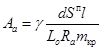
где γ = 0,5 - при бесфонарном покрытии;
γ = 0,6 - при покрытии с фонарем;
d - коэффициент, принимаемый по табл. 9 в зависимости от отношения величины пролета покрытия L0 к длине здания или отсека пВ0 (В0 - шаг колонн, п - количество шагов колонн);
Sп - расчетная горизонтальная сейсмическая нагрузка, действующая на покрытие рассматриваемого пролета здания в продольном направлении; нагрузка Sп определяется в соответствии с п. 3.15;
I - длина плиты покрытия;
L0 - пролет покрытия;
Ra - расчетное сопротивление растяжению соединительных элементов или стержней соединительной арматуры закладных изделий в плитах;
mкр - коэффициент условия работы, принимается по табл. 8;
Должна быть проверена прочность сварных швов в местах приварки соединительных элементов к закладным изделиям плит. В плитах покрытия длиной 12 м закладные изделия и усиление армирования в местах крепления колонн продольного фахверка должны быть проверены расчетом на реакцию верхней опоры фахверковой колонны от сейсмической нагрузки
Рис 14. Приварка плит к стропильным конструкциям и
соединение плит между
собой соединительными элементами в покрытиях зданий с фонарем при
расчетной сейсмичности 8 баллов
1 - плиты
покрытия; 2 - несущие конструкции покрытия; 3 - соединительные
элементы,
а. ш. - антисейсмический шов
3.29. В сборном покрытии для обеспечения передачи горизонтальных нагрузок с покрытия на колонны должны предусматриваться следующие мероприятия по замоноличиванию:
Рис. 15 Приварка плит к стропильным конструкциям
покрытия и соединения
плит между собой соединительными элементами в зданиях с расчетной
сейсмичностью 9 баллов
1 - плиты
покрытия; 2 - несущие конструкции покрытия; 3 - соединительные
элементы;
а. ш. - антисейсмический шов
Таблица 9
|
≤ 0,5 |
0,75 |
1 |
1,5 |
|
|
d |
0,38 |
0,62 |
0,96 |
1,88 |
Рис. 16. Соединение плит покрытия между собой стальными элементами
1 - плиты
покрытия; 2 - стропильные конструкции; 3 - соединительные
элементы; 4 - закладное изделие
плиты, 5 - стержни соединительной арматуры закладного изделия плиты; 6
- цементный раствор М200; 7
- жгут из рулонного материала
а) железобетонные плиты покрытия должны крепиться к несущим конструкциям (фермам, балкам) сваркой опорных закладных изделий не менее чем в трех углах, за исключением плит, примыкающих к антисейсмическому шву или торцовой стене, которые допускается приваривать к несущим конструкциям покрытия со стороны одного продольного ребра, но при этом торцы смежных продольных ребер плит у антисейсмического шва или торцовой стены в пределах пролета покрытия соединяются между собой при помощи соединительных элементов, привариваемых к опорным закладным изделиям плит (рис. 17).
Длина сварного шва принимается по всей длине или ширине плоскости опирания закладного изделия ребер плиты на закладное изделие в железобетонной балке или ферме, на верхний пояс стальной фермы или на соединительные элементы (рис 17 и 18). Катет сварного шва принимается равным 6 мм в зданиях с расчетной сейсмичностью 7 баллов и 8 мм в зданиях с расчетной сейсмичностью 8 и 9 баллов, за исключением случаев, когда швы принимаются по расчету в соответствии с п. 3.30;
Рис. 17. Крепление плит покрытия к стропильным
конструкциям,
расположенным у торца или антисейсмического шва здания
1 - плиты покрытия; 2 - стропильная конструкция; 3 - соединительный элемент
Рис. 18. Соединение стальными элементами продольных
ребер плит,
примыкающих к фонарю здания с расчетной сейсмичностью 8 и 9 баллов
1 - плиты
покрытия; 2 - стропильная конструкция; 3 - закладные изделия
плит;
4 - соединительные элементы.
б) в покрытиях зданий со светоаэрационными фонарями с расчетной сейсмичностью 8 и 9 баллов продольные ребра железобетонных плит, примыкающие к фонарю, должны быть соединены по длине между собой при помощи соединительных элементов, привариваемых к опорным закладным изделиям плит (см. рис. 14 и 18);
в) в продольных швах между железобетонными плитами должны предусматриваться шпонки. Все швы (продольные и поперечные) между плитами должны быть тщательно заполнены раствором или бетоном марки М 200 на мелком гравии или щебне.
Для образования шпонок на наружных поверхностях продольных ребер плит должны предусматриваться пазы прямоугольного сечения;
Рис. 19. Установка каркаса между продольными ребрами плит покрытия
1 - плиты покрытия; 2 - стропильные конструкции; 3 - сварной каркас; 4 - цементный раствор марки 200
г) во всех продольных швах между плитами в местах пересечения с поперечными швами симметрично относительно несущей конструкции, укладываются одиночные плоские сварные каркасы из двух продольных стержней диаметром 8 мм из стали класса AI или диаметром 6 мм из стали класса AIII (рис. 19) с поперечными стержнями диаметром 6 мм из стали класса AI с шагом 200 мм;
д) во избежание работы стропильных ферм как неразрезной конструкции к подстропильным железобетонным фермам привариваются продольные ребра только одного ряда плит. Ребра другого ряда закрепляются упорными уголками, которые привариваются к закладным изделиям подстропильных ферм по ходу монтажа плит (рис. 20). Продольные ребра плит, опирающиеся на опорные стойки стропильных стальных ферм и в середине пролета подстропильных стальных ферм, для обеспечения работы стропильных ферм как разрезной конструкции необходимо крепить к конструкциям покрытия с помощью подвижных планок (рис. 21). Болтовые соединения подвижных планок с опорными стойками и подстропильными фермами должны быть рассчитаны на продольные горизонтальные сейсмические усилия, передающиеся с плит на опоры несущих конструкций покрытия;
Рис. 20. Крепление плит покрытия к подстропильным
фермам
в середине ее пролета (а) и на опорах (б)
1 - плиты
покрытия; 2 - подстропильная ферма; 3 - упорный уголок; 4
- соединительный элемент,
выполненный в виде упорного уголка; 5 - цементный раствор марки 200
е) в покрытиях с сегментными фермами уширенные продольные швы между плитами, расположенные на расстоянии 3 м от продольных координационных осей здания, должны использоваться для устройства монолитных железобетонных антисейсмических поясов. Эти пояса армируются по всей длине сварными каркасами, которые стыкуются между собой и крепятся к соединительным элементам, приваренным к закладным изделиям ферм (рис. 22). Продольная арматура каркасов принимается диаметром 12 мм из стали класса AIII.
Рис. 21. Узлы опирания железобетонных плит на опорную
стойку стропильных
ферм (а) и в середине пролета подстропильной фермы (б)
1 -
стропильные фермы; 2 - подстропильная ферма; 3 - плиты покрытия;
4 - подвижные планки; 5 - овальные отверстия
Рис. 22. Установка каркаса в уширенные продольные швы между плитами покрытия
1 - плиты
покрытия; 2 - верхний пояс сегментной фермы; 3 - сварной каркас; 4
- соединительный
элемент; 5 - уширенный продольный шов заполненный бетоном марки 200 на
мелком гравии или щебне;
6 - места связки каркасов и соединительного элемента
3.30. В сборных покрытиях ребра плит, примыкающие к продольным рядам колонн, а также упорные уголки (см. п. 3.29д) должны привариваться швами, рассчитанными на продольные горизонтальные усилия, передающиеся с плит на опоры несущих конструкций покрытия. При этом величина усилия, приходящегося на продольный ряд колонн, от действия сейсмических нагрузок (определяемых в соответствии с пп. 3.14а и 3.15а) в крайних рядах вся передается на ребра плит, а в средних рядах усилие распределяется между двумя смежными рядами ребер крайних плит пропорционально грузовым площадям покрытий пролетов, примыкающих к продольному ряду колонн.
Сварные швы рассчитывают на срез по двум сечениям - по металлу шва и по металлу границы сплавления:
Vп / 0,7 kf lw £ Rωf γωf mmкр; (29)
Vп / kf lw £ Rωz γωz mmкр
где Vп - величина продольного горизонтального усилия, приходящегося на один ряд ребер плит, примыкающих к рассматриваемому продольному ряду колонн;
kf - катет углового шва, принимаемый равным не менее указанного в п. 3.29а;
lω - суммарная расчетная длина швов, воспринимающих усилие Vп;
Rωf и Rωz - расчетные сопротивления углового шва срезу (условному) по металлу шва и по металлу границы сплавления соответственно, принимаемые по главе СНиП II-23-81 «Стальные конструкции»;
γωf и γωz - коэффициенты условий работы шва, принимаемые по п. 11.2 главы СНиП II-23-81;
m - коэффициент, учитывающий сложные условия работы шва и принимаемый равным 0,7;
mкр - коэффициент условий работы для сварных соединений, принимаемый по табл. 8.
Число расчетных швов и их местоположение зависят от конструктивной схемы здания и расположения связей между опорными участками стропильных конструкций покрытия (см. п. 3.31).
3.31. В зданиях с пролетами до 24 м включительно при расчетной сейсмичности 7 баллов конструктивная схема и расположение связей между опорными участками железобетонных стропильных конструкций принимается как для несейсмических районов. При этом число и месторасположение расчетных сварных швов в покрытии определяется в соответствии с «Рекомендациями по применению сборных железобетонных типовых плит в покрытиях зданий промышленных предприятий», серия 1.400-11.
В зданиях с пролетом 30 м и более при расчетной сейсмичности 7 баллов и с пролетами 12 м и более при расчетной сейсмичности 8 и 9 баллов конструктивная схема и расположение связей между опорными участками железобетонных стропильных конструкций принимаются в соответствии с п. 3.32. При этом возможны следующие случаи распределения продольного горизонтального усилия между сварными швами крепления крайних продольных ребер плит.
I. Случай. Усилие Vп распределяется на все места приварки крайних продольных ребер плит.
Такой случай может быть:
когда на колонны непосредственно опираются стропильные конструкции и между последними на опорах не реже чем через шаг установлены вертикальные связи, чередуясь с распорками в уровне верха колонн (рис. 23, а);
когда стропильные конструкции опираются на подстропильные конструкции.
II. Случай. Усилие Vп передается на продольные ряды колонн в отдельных узлах.
Этот случай имеет место, когда на колонны непосредственно опираются стропильные конструкции и между последними на опорах более чем через шаг колонн устанавливаются вертикальные стальные связи, а в остальных шагах колонн предусматриваются распорки в уровне их верха (рис. 23, б).
Рис. 23. Схемы расположения расчетных сварных швов
крепления
железобетонных плит в покрытиях без подстропильных конструкций
а - первый
случай; б - второй случай; 1 - связи; 2 - распорки; 3
- расчетные сварные швы для усилия ;
4 - расчетные сварные швы для усилия
Рис. 24. Схема связей в покрытиях с железобетонными
балками в зданиях с шагом
колонн 6 м при расчетной сейсмичности 8 баллов
1 -
стропильные балки; 2 - вертикальные связевые фермы; 3 - стальные
распорки;
4 - колонны; а. ш. - антисейсмический шов
Рис. 23. Схема связей покрытия с железобетонными
фермами (при скатной
кровле) в зданиях с шагом крайних колонн 6 м и средних 12 м при расчетной
сейсмичности 8 баллов
1 -
стропильные фермы; 2 - подстропильные фермы; 3 - вертикальные
связевые фермы;
4 - стальные распорки; 5 - колонны; а. ш. - антисейсмический шов
Примечание. При балочных покрытиях с пролетами 6 и 9 м при отсутствии вертикальных связей между колоннами вертикальные связи и распорки между балками могут не ставиться. Крепление балок к колоннам в этом случае должно быть рассчитано на передачу сейсмических сил с плит покрытия на колонны.
Рис. 26. Крепление вертикальной связи и распорки в
покрытии здания с
расчетной сейсмичностью 8 баллов в месте опирания стропильной фермы на
колонну среднего ряда
1 -
железобетонная стропильная ферма; 2 - колонна; 3 - вертикальная
связевая ферма;
4 - стальная распорка; 5 - соединительное изделие
Рис. 27. Крепление железобетонных стропильных ферм к подстропильной в месте опирания ее на крайнюю колонну в зданиях с расчетной сейсмичностью 8 баллов
1 - стропильные фермы; 2 - подстропильная ферма; 3 - колонна; 4 - упор, плотно прижатый к бетонной поверхности подстропильной фермы; 5 - упор, плотно прижатый к бетонной поверхности стропильной фермы
3.32. В зданиях с пролетами 30 м и более при расчетной сейсмичности 7 баллов и с пролетами 12 м и более при расчетной сейсмичности 8 баллов должны быть предусмотрены:
а) в продольных рядах колонн без подстропильных конструкций вертикальные стальные связи между опорными участками железобетонных балок или ферм и распорки по верху колонн (рис. 24 и 25); при этом нижние пояса связей и распорки крепятся к закладным изделиям колонн (рис. 26); количество вертикальных связей между опорными участками стропильных конструкций определяется из условия расположения расчетных сварных швов крепления ребер плит, примыкающих к продольным рядам колонн (см. п. 3.30) и принимается не менее двух, располагаемых в крайних шагах здания (отсека);
б) в продольных рядах колонн с подстропильными конструкциями - стальные упоры или распорки для закрепления опорных участков железобетонных стропильных конструкций от опрокидывания (рис. 27, 28 и 29).
В зданиях с пролетами 12 м и более при расчетной сейсмичности 9 баллов между железобетонными балками или фермами на опорах должны быть установлены не реже чем через шаг вертикальные стальные связи, чередующиеся с распорками. При этом нижние пояса связей и распорки должны крепиться к закладным изделиям балок или ферм (рис. 30 и 31).
Стальные вертикальные связи, распорки и упоры должны быть рассчитаны на восприятие приходящихся на них расчетных горизонтальных сейсмических нагрузок; при этом в зданиях с расчетной сейсмичностью 9 баллов связи между опорными участками балок или ферм должны быть рассчитаны с учетом усилий, возникающих в связях от смещения места приложения вертикальной нагрузки на колонны при повороте опорной плоскости колонн от сейсмических воздействий (рис. 32) при выполнении узла опирания стропильной конструкции на колонну по рис. 33.
Величина силы, приходящейся на вертикальную связь, от смещения места приложения вертикальной нагрузки на колонну U определяется по формуле
, (30)
где N - расчетная нормальная сила на колонну от нагрузок покрытия (коэффициенты сочетаний принимаются в соответствии с п. 2.2);
b - ширина поперечного сечения стропильной конструкции в месте опирания на колонну;
с - размер площадки соприкасания стальной опорной части стропильной конструкции с закладным элементом колонны с учетом смятия (в месте передачи усилий) стальных частей и бетона верха колонны; величина с принимается равной 60 мм;
h - высота вертикальной связи.
Рис. 28. Крепление железобетонных стропильных ферм к
подстропильным в
середине ее пролета (при скатной кровле) в зданиях
с расчетной сейсмичностью 8 баллов
1 -
стропильные фермы; 2 - подстропильная ферма; 3 - стальные упоры,
привариваемые к
подстропильной ферме и плотно прижатые к стропильным фермам
3.33. В покрытиях с железобетонными фермами нижний пояс стропильных ферм должен быть раскреплен стальными распорками и вертикальными связями, устанавливаемыми посередине пролета ферм. Вертикальных стальных связей должно быть две на здание (отсек) и располагать их следует в крайних шагах стропильных конструкций (рис. 34).
3.34. Конструкцию соединения железобетонных стропильных несущих конструкций покрытия с подстропильными, а также стропильных и подстропильных конструкций с колоннами каркаса здания с расчетной сейсмичностью 7 и 8 баллов допускается принимать как для несейсмических районов с учетом дополнительных мероприятий, предусмотренных в п. 3.32.
Рис. 29. Крепление железобетонных стропильных ферм к
подстропильным в месте
опирания их на колонну (при скатной кровле) в зданиях с расчетной
сейсмичностью 8 баллов
1 -
стропильные фермы; 2 - подстропильные фермы; 3 - колонны;
4 - упоры, плотно прижатые к бетонной поверхности фермы; 5 -
стальные распорки
В зданиях с расчетной сейсмичностью 9 баллов узел опирания железобетонной стропильной конструкции на колонну следует выполнять с применением соединительного элемента, привариваемого на монтаже к стальным изделиям оголовка колонны и стропильной конструкции. Для обеспечения возможности поворота верхнего сечения колонны соединительный элемент изготавливается из двух стальных пластин, соединенных между собой по двум сторонам сваркой, располагаемой в узле за гранями колонны (рис. 33).
Рис. 30. Пример расположения связей покрытия с балками
(при скатной кровле) в зданиях с расчетной сейсмичностью 9 баллов
1 -
железобетонная стропильная балка; 2 - вертикальные связевые фермы;
3 - стальные распорки; 4 - колонны; а. ш. - антисейсмический шов
Рис. 31. Крепление вертикальной связи и распорки к
железобетонной стропильной
балке в покрытии здания с расчетной сейсмичностью 9 баллов
1 -
железобетонная стропильная балка; 2 - колонна; 3 - вертикальная
связевая ферма;
4 - стальная распорка; 5 - закладное изделие в стропильной
конструкции
Примечание. Для зданий с расчетной сейсмичностью 8 баллов, возводимых на площадках строительства с I категорией повторяемости землетрясений, рекомендуется узел опирания железобетонной стропильной конструкции на колонну выполнять по типу аналогичного узла в зданиях с расчетной сейсмичностью 9 баллов (рис. 33).
Рис. 32. Схемы к расчету вертикальных связей между
опорными участками
железобетонных стропильных конструкций на усилия от смещения места
приложения вертикальной нагрузки на колонну
а - схема покрытия; б - схема деформированного
элемента покрытия; в - расчетная схема связи;
1 - вертикальная связь; 2 - распорка
Рис. 33. Опирание железобетонной стропильной
конструкции на колонну
при расчетной сейсмичности 9 баллов
1 -
стропильная конструкция; 2 - колонна; 3 - соединительные изделия;
(связи и распорки условно не показаны)
Рис. 34. Пример расположения связей покрытия с
железобетонными
фермами при расчетной сейсмичности 7 баллов
1 - стропильные фермы; 2 - вертикальные связевые
фермы; 3 - стальные распорки;
а. ш. - антисейсмический шов
3.35. Узлы соединения несущих конструкций покрытия с колоннами должны быть рассчитаны на срез от усилий, возникающих в этих местах от действия на рассматриваемое соединение горизонтальных сейсмических нагрузок.
В соответствии с решениями узлов опирания железобетонных стропильных конструкций на колонны и конструкции связей опорные участки стропильных конструкций должны быть рассчитаны с учетом усилий, возникающих при деформациях колонн во время сейсмического воздействия (см. рис. 32 и 33). В случае недостаточной прочности необходимо произвести соответствующие усиления опорных частей стропильных конструкций.
3.36. Закладные изделия, устанавливаемые в верхнем поясе железобетонных ферм для крепления стоек светоаэрационного фонаря, должны быть проверены расчетом на усилия, передающиеся с фонаря на диск покрытия при сейсмическом воздействии.
3.37. При определении частот и форм собственных колебаний ферм следует принимать:
а) жесткость сечений для сжатых и растянутых предварительно напряженных железобетонных элементов - без учета образования трещин (EбAб), для растянутых элементов, выполняемых без предварительного напряжения, - без учета работы бетона (EаAа);
б) массы, сосредоточенные в узлах верхнего пояса ферм, - исходя из суммарной равномерно распределенной нагрузки, включающей собственный вес покрытия, вес снега (без учета снеговых мешков), а также подвесной транспорт, влияние которого приводится к эквивалентной равномерно распределенной нагрузке; при этом коэффициенты сочетаний, необходимые для определения величин масс, принимаются в соответствии с п. 2.2. Эквивалентная нагрузка от мостовых подвесных кранов определяется от одного крана на каждом крановом пути и при расположении крана в плоскости фермы.
Вертикальные сейсмические нагрузки на фермы, соответствующие различным комбинациям нагрузок, допускается определять при постоянных значениях βi и ηik, вычисленных из условий, приведенных в данном пункте.
3.38. Железобетонные плиты длиной 12 м по стропильным конструкциям зданий с пролетами 18 м и более с расчетной сейсмичностью 9 баллов применять не рекомендуется.
3.39. Минимальная длина опирания продольных ребер железобетонных плит покрытия длиной 6 м на стальные конструкции должна быть 70 мм, на железобетонные - 75 мм, для плит длиной 12 м - 90 мм на стальные и железобетонные конструкции. Допускается отклонение фактической длины опирания смонтированных плит от указанных выше значений не более чем на 10 мм.
Стальной каркас одноэтажного здания
3.40. Стальные стропильные и подстропильные конструкции допускается применять в зданиях с расчетной сейсмичностью 8 баллов с пролетами 24 м и более и в зданиях с расчетной сейсмичностью 9 баллов с пролетами 18 м и более, а также в случаях, когда их применение допускается «Техническими правилами по экономному расходованию основных строительных материалов» для аналогичных объектов в несейсмических районах.
3.41. В покрытиях отапливаемых зданий со стальными фермами рекомендуется применять стальной профилированный настил или асбестоцементные плиты с эффективным утеплителем.
Сборные железобетонные плиты по стальным несущим конструкциям покрытия должны иметь ограниченное применение и использоваться, как правило, в зданиях с расчетной сейсмичностью не более 7 баллов.
3.42. В целях обеспечения пространственной жесткости каркаса, а также устойчивости покрытия в целом и его элементов в отдельности необходимо предусматривать систему связей между несущими стальными конструкциями покрытия (фермами) в плоскости их верхних и нижних поясов и в вертикальных плоскостях.
3.43. В покрытиях из стального профилированного настила, асбестоцементных плит (каркасных и бескаркасных) или волнистых листов (по стальным прогонам и фермам) система связей в плоскости верхних поясов стропильных стальных ферм состоит из поперечных связевых ферм и распорок, роль которых выполняют прогоны, а при наличии светоаэрационных фонарей и растяжек, располагаемых в подфонарном пространстве.
Связевые поперечные фермы устанавливаются в двух крайних (у торцов и антисейсмических швов здания) и, если требуется по расчету (см. п. 3.48), в промежуточных шагах стропильных ферм. Независимо от расчета в зданиях (отсеках) со стропильными фермами с параллельными поясами с расчетной сейсмичностью 8 и 9 баллов длиной свыше 60 м и 7 баллов длиной свыше 96 м следует устанавливать не менее одной промежуточной связевой фермы, а в зданиях (отсеках) со стропильными фермами треугольного очертания с расчетной сейсмичностью 9 баллов длиной 60 м и более рекомендуется устанавливать не менее одной промежуточной связевой фермы.
Промежуточные связевые фермы должны располагаться по длине здания (отсека) равномерно (рис. 35).
Рис. 35. Пример расположения связей по верхним поясам
стальных стропильных
ферм покрытия с прогонным решением кровли
1 -
стропильные фермы; 2 - поперечные связевые фермы по верхним поясам ферм;
3 - прогоны;
4 - вертикальные связи между фермами; 5 - поперечные связевые
фермы по нижним поясам ферм;
6 - растяжки; а. ш. - антисейсмический шов
Рис. 36. Пример расположения связей по нижним поясам
стальных
стропильных ферм
1 - стропильные фермы; 2 - поперечные связевые
фермы; 3 - продольные связевые фермы;
4 - растяжки; 5 - распорки; 6 - дополнительные раскосы;
7 - вертикальные связи между фермами; а. ш. - антисейсмический шов
Рис. 37. Пример решения одноэтажного здания из
стальных конструкций типа
«Плауэн» - поперечный разрез здания (а); план прогонов и связей по
кровле (б);
продольный разрез здания (в)
1 - рамы; 2
- поперечные связевые фермы; 3 - прогоны; 4 - вертикальные связи
между рамами;
а. ш. - антисейсмический шов
Система связей в плоскости нижних поясов стропильных ферм состоит из (рис. 36):
а) поперечных связевых ферм, устанавливаемых у торцов сейсмического отсека здания. Дополнительные поперечные связевые фермы в середине отсека устанавливаются в соответствии с требованиями для несейсмических районов;
б) продольных связевых ферм, которые в зданиях (отсеках) с числом пролетов до трех включительно устанавливаются вдоль крайних рядов колонн. В зданиях (отсеках) с числом пролетов более трех горизонтальные продольные связи следует размещать также вдоль средних рядов колонн не реже чем через пролет;
в) распорок и растяжек, расположение и количество которых определяется требованиями для несейсмических районов.
Вертикальные связи между стропильными фермами устанавливаются на опорах и в пролете ферм. По длине здания (отсека) связи располагаются в шагах ферм, где устанавливаются поперечные связевые фермы по верхним поясам стропильных конструкций (рис. 35), в пролете ферм промежуточные вертикальные связи допускается не устанавливать.
3.44. В покрытиях из стального профилированного настила зданий с каркасом из стальных рам коробчатого сечения «Плауэн» должно быть предусмотрено устройство системы горизонтальных связей в уровне верха коробчатого ригеля рам, состоящей из поперечных связевых ферм и распорок, роль которых выполняют прогоны; поперечные связевые фермы располагаются в соответствии с п. 3.43 (рис. 37). Для обеспечения устойчивости здания в продольном направлении между стойками рам следует предусматривать систему вертикальных связей в соответствии с п. 3.20 (рис. 37).
3.45. Крепление профилированного стального настила к прогонам покрытия рекомендуется выполнять самонарезающими болтами, как правило, через волну, а торцы настила в каждой волне. В каждой волне следует крепить профилированный настил, укладываемый в покрытиях зданий с рамными конструкциями коробчатого сечения «Плауэн». Соединение настила между собой осуществляется комбинированными заклепками.
Прогоны, несущие стальной профилированный настил покрытия, опираются в узлах стропильных ферм с шагом не более 3 м и закрепляются к фермам на болтах при помощи коротышей из уголков, а к поперечным связевым фермам крепление прогонов предусматривается на сварке.
Примечание. В покрытиях с профилированным настилом связевые горизонтальные поперечные фермы по верхним поясам стропильных ферм или рамам могут заменяться поперечными диафрагмами жесткости, конструирование и расчет которых приведены в «Рекомендациях по учету жесткости диафрагм из стального профилированного настила в покрытиях одноэтажных производственных зданий при горизонтальных нагрузках», ЦНИИПроектстальконструкция, М.,1980.
3.46. В покрытиях из сборных железобетонных плит по стальным стропильным фермам должны быть выполнены мероприятия, предусмотренные указаниями пп. 3.28, 3.29, а, б, в, г, д и п. 3.30.
Рис. 38. Схемы распределения продольных сейсмических
нагрузок между узлами
поперечных связевых ферм в плоскости верхних поясов стропильных ферм
бесфонарного пролета покрытия (а) и пролета с фонарем (б)
1 - торец
здания; 2 - антисейсмический шов; A2, A3 и A5 - грузовые площади,
соответствующие
сейсмическим нагрузкам S2, S3 и S5
Кроме того, по длине здания (отсека) по верхним поясам стропильных ферм рекомендуется устанавливать распорки между опорными стойками и в пролете ферм. Расположение и количество распорок в пролете ферм определяется требованиями для несейсмических районов.
Система связей в плоскости нижних поясов стропильных ферм состоит из:
а) поперечных связевых ферм, располагаемых согласно указаниям п. 3.43а;
б) продольных связевых ферм, устанавливаемых согласно п. 3.43б;
в) распорок и растяжек, устанавливаемых согласно п. 3.43в.
Вертикальные связи устанавливаются между стропильными фермами на опорах (между опорными стойками) и в пролете. По длине здания (отсека) связи располагаются в шагах ферм, где устанавливаются поперечные связевые фермы по нижним поясам стропильных ферм; при этом связи между опорными стойками стропильных ферм могут располагаться и в промежуточных шагах ферм, если по расчету требуется установка большего количества связей.
3.47. Связи покрытий должны быть рассчитаны на восприятие приходящихся на них расчетных горизонтальных сейсмических нагрузок, действующих в поперечном и продольном направлениях здания (отсека). При определении величины сейсмической нагрузки на связи значение произведения коэффициентов βηKψ, принимается как для каркаса соответствующего направления.
3.48. Поперечные связевые фермы в плоскости верхних поясов стальных стропильных конструкций покрытия должны быть рассчитаны на сейсмические нагрузки в продольном направлении, которые принимаются действующими:
а) при бесфонарных пролетах покрытия (рис. 38, а):
в узлах связевых ферм (S1) - от вертикальной нагрузки, расположенной в пределах пролета и длины здания (отсека) и состоящей из собственного веса кровли и ее несущих конструкций, снега, 50 % собственного веса стропильных конструкций, а также веса промпроводок и другого оборудования, расположенного в покрытии и закрепленного к верхним поясам стропильных конструкций; сейсмическая нагрузка S1 распределяется между всеми связевыми фермами равномерно;
в узлах связевой фермы, расположенной в торце здания (S2) - от собственного веса парапета и нижележащего участка стены с грузовой площадью, определяемой в зависимости от очертания верхнего пояса стропильной конструкции и расположения узлов крепления фахверковых стоек к покрытию;
б) при пролетах покрытия со светоаэрационными фонарями (рис. 38, б):
в узлах связевых ферм, примыкающих к местам крепления вертикальных связей по фонарю к стропильной конструкции (S1) - от собственного веса покрытия и снега на всем фонаре, фонарных ферм и от 40 % собственного веса фонарных панелей (с остеклением, механизмами открывания и т. д.);
в узлах связевых ферм, расположенных в местах опирания фонарных панелей (S2) - от 60% собственного веса фонарных панелей (с остеклением, механизмами открывания и т. д.) и от собственного веса кровли, ее несущих конструкций и снега у фонаря вдоль здания на участке шириной 1,5 м;
в узлах связевых ферм (S3) - от собственного веса кровли, ее несущих конструкций и снега, расположенных на внефонарной зоне пролета;
в узлах связевых ферм (S4) - от 50 % собственного веса стропильных конструкций, а также от веса промпроводок и другого оборудования, расположенного в покрытии и закрепленного к верхним поясам стропильных конструкций;
в узлах связевой фермы, расположенной в торце здания или у антисейсмического шва (S5) - от собственного веса кровли, ее несущих конструкций и снега с участка перед фонарем;
в узлах связевой фермы, расположенной в торце здания (S6) - от собственного веса парапета и нижележащего участка стены с грузовой площадью, определяемой в зависимости от очертания верхнего пояса стропильной конструкции и расположения узлов крепления фахверковых стоек к покрытию.
В пролетах покрытия с фонарями сейсмические нагрузки S1÷S5 распределяются между всеми связевыми фермами равномерно.
Необходимое количество связевых ферм k в бесфонарном пролете покрытия здания (отсека) определяется по формуле
и принимается не менее 2,
где N1 - усилие в поясе связевой фермы от действия сейсмических нагрузок S1, вычисленных для всего пролета покрытия здания (отсека);
[N] - несущая способность поясов принятых связевых ферм;
N2 - усилие в поясе связевой фермы от действия сейсмических нагрузок S2.
Необходимое количество связевых ферм k в пролете покрытия здания (отсека) с фонарем определяется по формуле
и принимается не менее 2,
где N1, N2, N3 и N4 - усилия в поясе связевой фермы от действия сейсмических нагрузок соответственно S1, S2, S3 и S4, вычисленных для всего пролета покрытия здания (отсека);
[N] - то же, что в формуле (31);
N5 и N6 - усилия в поясе связевой фермы от действия сейсмических нагрузок соответственно S5 и S6.
3.49. Прогоны покрытия, выполняющие роль распорок в системе связей по верхним поясам стропильных конструкций, и их узлы опирания должны быть проверены расчетом на усилия, возникающие в них при передаче расчетных сейсмических нагрузок от веса кровли и снега на узлы поперечных связевых ферм.
3.50. Поперечные связевые фермы в плоскости нижних поясов ферм должны быть рассчитаны на продольные сейсмические нагрузки:
а) от 50 % собственного веса стропильных конструкций, от собственного веса путей подвесных кран-балок и подвесных потолков, а также промпроводок и другого оборудования, расположенного в покрытии и закрепленного к нижним поясам стропильных конструкций; нагрузка распределяется между связевыми фермами равномерно и прикладывается в узлах связей;
б) от собственного веса торцевой стены на участке в пределах нижней половины высоты стропильной фермы и верхней половины высоты колонн (в случае опирания стоек торцевого фахверка в уровне нижнего пояса стропильных ферм); нагрузка прикладывается в узлах опирания стоек торцевого фахверка на связевую ферму.
При этом пояса этих ферм, входящие в состав стропильных ферм, проверяются по указаниям п. 3.55.
Примечание. При наличии в торце здания по высоте фахверковых стоек дополнительно ветровой фермы (балки) или какой-либо другой конструкции, являющейся дополнительной опорой для стоек торцевого фахверка, грузовая площадь стены должна быть соответствующим образом скорректирована.
Если усилия в опорном раскосе поперечной связевой фермы при расчете на сейсмическую нагрузку превышают его несущую способность, рекомендуется устанавливать дополнительный раскос (рис. 36), а усилие в опорном раскосе связевой фермы при этом принимать с коэффициентом 0,5.
3.51. Продольные связевые фермы в плоскости нижних поясов ферм должны быть рассчитаны на поперечные горизонтальные сейсмические нагрузки в следующих случаях:
а) при опирании на связи фахверковых стоек продольных стен; сосредоточенная сейсмическая нагрузка на узел связи (Sc) определяется от веса стойки и стены с грузовой площади в пределах нижней половины высоты стропильной фермы на опоре и верхней половины высоты колонн; усилия в элементах связей от нагрузки Sc определяются из расчета однопролетной фермы (рис. 39);
б) при решении покрытия, с подстропильными фермами; на связевые фермы действуют сейсмические нагрузки Sсф, сосредоточенные в узлах связей, примыкающих к нижним поясам стропильных ферм, которые опираются в середине пролета подстропильных ферм; величина Sсф определяется от нагрузок, расположенных в пределах грузовой площади вышеуказанных стропильных ферм, и распределяется равномерно между связями; усилия в элементах связей от нагрузки Sсф определяются из расчета однопролетной фермы (рис. 40);
Рис. 39. Расчетная схема продольной связи по нижним
поясам стальных
стропильных ферм при учете сейсмической нагрузки от веса стен
Рис. 40.
Схемы к расчету продольных связей по нижним поясам стропильных
ферм в покрытиях с подстропильными фермами
а - схема
расположения в плане несущих конструкций и связей покрытия; б -
расчетная схема связи;
1 - стропильные фермы; 2 - подстропильные фермы; 3 -
связь; А - грузовая площадь стропильных ферм
Рис. 41. Схемы к расчету продольных связей по нижним поясам стальных стропильных ферм на сейсмическую нагрузку от мостовых кранов
а - расчетная схема поперечной рамы; б - расчетная схема связей
в) при наличии в здании (отсеке) мостовых кранов; часть сейсмической нагрузки от собственного веса мостовых кранов через поперечную раму каркаса здания (отсека) передается на продольные связевые фермы и равномерно распределяется между ними; расчетная схема связи принимается в виде четырехпролетной неразрезной фермы на упругоподатливых опорах (рис. 41, б), загруженной на средней опоре нагрузкой Sсв, определяемой из условия
, (33)
где R0 - реакция неподвижной опоры, расположенной в уровне ригеля свободной поперечной рамы, от загружения колонн горизонтальными сейсмическими нагрузками от собственного веса мостов кранов и загружения колонн моментами от действия вертикальной нагрузки от кранов, учитывающей вес моста кранов, тележки и вес груза с коэффициентами сочетания, принимаемыми в соответствии с п. 2.2. Краны располагаются в створе рамы по одному в каждом пролете здания. Моменты , определяются при максимальном давлении на колеса крана и по направлению должны совпадать с направлением действия сейсмической нагрузки Sкр (рис. 41, а);
n1 - число продольных связевых ферм в покрытии здания (отсека).
Реакции упругоподатливых равножестких опор в расчетной равнопролетной схеме связи от нагрузки Sсв (рис. 41, б) могут быть определены по формулам:
; (35)
, (36)
где
; (37)
D = 50 + 380γ + 342γ2 + 56γ3; (38)
Ср - жесткость поперечной рамы каркаса здания (отсека) на уровне верха колонн, определяемая по формуле (18);
B0 - расстояние между упругоподатливыми опорами (шаг поперечных рам каркаса);
Е - модуль упругости стали;
I - момент инерции поясов связевой фермы относительно ее центра тяжести (без учета раскосов связи).
Рис. 42. Схемы расположения вертикальных связей и
распорок по продольным
рядам колонн зданий с покрытиями из стального профилированного настила
а - при
железобетонных колоннах и мостовых кранах; б - при стальных колоннах и
мостовых кранах;
в - без мостовых кранов и со связями между колоннами; г - без
мостовых кранов и связей между
колоннами; 1 - поперечная связевая ферма; 2 - вертикальная связь;
3 - прогоны; 4 - распорки;
5 - колонны; 6 - подкрановые балки; 7 - стальные
стропильные фермы;
8 - вертикальная связь между колоннами; а. ш. - антисейсмический шов
Рис. 43. Расчетные схемы вертикальных связей между опорными
стойками
стропильных ферм с шагом 6 м (а) и 12 м (б) и распорок (в)
покрытий из стального
профилированного настила
Расчетные значения усилий в элементах продольных связей определяются суммированием усилий, вычисленных в соответствии с указаниями подпунктов «а»-«в».
При расчете продольных связей покрытий из профилированного стального настила или сборных железобетонных плит усилия от нагрузок, указанных в подпунктах «б» и «в», допускается не учитывать.
Рис. 44. Пример расположения связей по верхним (а)
и нижним (б) поясам
стальных ферм покрытия из асбестоцементных листов усиленного профиля
1 - поперечная связевая ферма; 2 - продольные связевые фермы; 3
- прогоны; 4 - распорки;
5 - вертикальная связь; 6 - стропильная ферма; 7 - тяжи;
а. ш. - антисейсмический шов
Таблица 10
|
Вид связи |
Здание с антисейсмическим швом |
Здание без антисейсмического шва |
|
|
а г |
Вертикальные связи |
; |
; |
|
Распорки |
|
|
|
|
Вертикальные связи* |
; |
; |
|
|
Распорки* |
при шаге ферм 6 м |
при шаге ферм 6 м |
|
|
б |
Вертикальные связи |
; ; |
|
|
Распорки |
; |
||
|
Вертикальные связи* |
; ; |
||
|
Распорки* |
; при шаге ферм 6 м |
||
|
в |
Вертикальные связи |
; ; |
|
|
Распорки |
; ; |
||
|
Вертикальные связи* |
; ; |
||
* - Определение нагрузок для случаев, когда в горизонтальных связях по нижнему поясу стропильных ферм у торца здания необходимо установить дополнительные раскосы (см. рис. 36).
** - для крайних рядов колонн;
*** - для средних рядов колонн.
N1 и N2 - при четном и нечетном количестве колонн в ряду соответственно.
Примечание: п - количество колонн в ряду; k - количество связей в ряду колонн.
3.52. В покрытиях из стального профилированного настила по фермам связи между опорными стойками ферм (вертикальные связевые фермы и распорки) должны быть рассчитаны на восприятие приходящихся на них расчетных горизонтальных сейсмических нагрузок (рис. 42):
а) в уровне верхнего пояса вертикальных связей (S1) - со связевых ферм, расположенных в плоскости верхних поясов стропильных ферм;
б) в уровне нижнего пояса вертикальных связей и распорок (S2) - со связевой фермы по нижним поясам стропильных ферм, расположенной у торца здания, и стойки торцевого фахверка, устанавливаемой у колонны (от веса торцевой стены) и (S3) - от собственного веса продольной стены, расположенной выше верха подкрановой балки (в зданиях с мостовыми кранами) или от верха стены до половины высоты колонн (в зданиях бескрановых) и подсчитываемой на половине шага основных колонн.
Расчетные схемы вертикальных связей и распорки приведены на рис. 43. При этом значения нагрузок Sв, Sн и N, непосредственно воздействующих на связи и распорки, определяются по формулам табл. 10 в зависимости от типа продольного ряда колонн по рис. 42.
3.53. В покрытиях из асбестоцементных волнистых листов опорные узлы стальных стропильных треугольных ферм и распорки между ними должны быть рассчитаны на продольные горизонтальные сейсмические усилия, передающиеся с покрытия на колонны или вертикальные связи колонн (рис. 44).
3.54. В покрытиях из сборных железобетонных плит связи между опорными стойками стальных стропильных ферм (вертикальные связи и распорки) должны быть рассчитаны на восприятие приходящихся на них горизонтальных сейсмических нагрузок, действующих в продольном направлении здания. При этом принимается, что сейсмическая нагрузка при передаче с плит покрытия на продольные ряды колонн распределяется равномерно сначала на все места приварки плит к опорным стойкам ферм, а затем через распорки в плоскости верхних поясов ферм - между вертикальными связями. Распределение сейсмической нагрузки ниже вертикальных связей между фермами зависит от типа здания и выбранной системы связей между колоннами.
3.55. Стальные стропильные фермы покрытия должны быть проверены расчетом на особое сочетание нагрузок: при вертикальной сейсмической нагрузке (см. пп. 2.6, 2.11 и 3.59) и при горизонтальной сейсмической нагрузке, действующей в поперечном и продольном направлениях здания (отсека).
На воздействие горизонтальной сейсмической нагрузки в поперечном направлении здания (отсека) проверяются нижние пояса стропильных ферм - на усилия (нормальные силы), действующие в поясе фермы, как в ригеле рамы.
На воздействие горизонтальной сейсмической нагрузки в продольном направлении здания (отсека) проверяются нижние пояса ферм, входящие в состав поперечных горизонтальных связевых ферм, расположенных у торцов здания. Усилия в поясах ферм определяются от совместного воздействия вертикальной нагрузки и горизонтальной сейсмической нагрузки (см. п. 3.50), приложенной в узлах связевой фермы, поясами которой являются нижние пояса стропильных ферм. При этом рассматриваются две комбинации нагрузок:
а) вертикальная от собственного веса покрытия и снега и горизонтальная сейсмическая нагрузка, направление которой вызывает в нижнем поясе фермы растяжение;
б) вертикальная от собственного веса покрытия без учета снега и горизонтальная сейсмическая нагрузка, вызывающая в нижнем поясе сжатие.
При расчете стропильных ферм покрытий с фонарями следует также учитывать вертикальные нагрузки (реакции) от вертикальных связей между фонарными фермами (см. п. 3.24).
3.56. Подстропильные фермы покрытия одновременно выполняют роль вертикальных связей и распорок между опорными стойками стальных стропильных ферм.
Подстропильные фермы должны быть проверены расчетом на особое сочетание нагрузок: при вертикальной сейсмической нагрузке (см. п. 3.59) и при горизонтальной сейсмической нагрузке (см. пп. 3.57 и 3.58).
3.57. В покрытиях из стального профилированного настила при горизонтальном сейсмическом воздействии в продольном направлении здания (отсека) на подстропильные фермы передаются (рис. 45):
в уровне верхнего пояса ферм - горизонтальные сейсмические нагрузки (S1) со связей по верхним поясам стропильных ферм и с прогонов, расположенных непосредственно над подстропильными фермами;
в уровне нижнего пояса ферм - горизонтальные сейсмические нагрузки (S2) со связей по нижним поясам стропильных ферм и стойки фахверка, расположенной у колонны (от собственного веса участка торцевой стены), и (S3) от веса продольной стены (см. п. 3.52б);
в середине пролета ферм - вертикальная нагрузка (Р).
Подстропильные фермы рассчитываются по схеме 1 или 2 (рис. 46) в зависимости от места расположения ферм в продольном ряду колонн и типа здания (рис. 45). При этом значения нагрузок
Таблица 11
|
Схема 1 |
Схема 2 |
||
|
а г |
Здания с антисейсмическим швом |
|
|
|
Здания без антисейсмического шва |
|
|
|
|
б |
Крайний ряд колонн |
|
- |
|
Средний ряд колонн |
; ; |
||
|
в |
Крайний ряд колонн |
; ; |
|
|
Средний ряд колонн |
; ; |
|
|
* Определение нагрузок для случаев, когда в горизонтальных связях по нижнему поясу стропильных ферм необходимо установить дополнительные раскосы (рис. 36).
Примечания: 1. п - количество колонн в ряду; k - количество связей в ряду колонн.
2. Значение расчетных горизонтальных нагрузок даны в предположении сжато-растянутых связей по колоннам.
3. и - определение расчетных нагрузок при размещении связей по колоннам не в середине отсека k1 ≥ 0,5.
Sb и Sн, непосредственно воздействующих на подстропильную ферму, определяются по формулам табл. 11.
При горизонтальном сейсмическом воздействии в поперечном направлении здания (отсека) нижние пояса подстропильных ферм, входящие в состав продольных связевых ферм, должны быть проверены на усилия, возникающие в поясе от совместного действия вертикальной нагрузки и горизонтальной сейсмической нагрузки, определяемой в соответствии с п. 3.51 а.
3.58. В покрытиях из сборных железобетонных плит при горизонтальном сейсмическом воздействии в продольном направлении здания (отсека) на стальные подстропильные фермы передаются сейсмические нагрузки в местах опирания на них продольных ребер плит (на опорных стойках и в середине пролета ферм, рис. 21). При этом сейсмическая нагрузка, действующая на все фермы в продольном ряду здания (отсека), распределяется равномерно между всеми точками опирания плит. В соответствии с этим способом передачи горизонтальной сейсмической нагрузки определяются расчетные усилия в элементах подстропильных ферм. При наличии вертикальных связей по колоннам эти усилия определяются в зависимости от месторасположения связей между колоннами.
Проверка нижних поясов подстропильных ферм при горизонтальном сейсмическом воздействии в поперечном направлении здания (отсека) производится в соответствии с п. 3.57.
Рис. 45. Расположение расчетных схем стальных
подстропильных ферм по длине
зданий (отсеков) с покрытиями из стального профилированного настила
а - при железобетонных колоннах и мостовых кранах; б
- при стальных колоннах и мостовых кранах;
в - без мостовых кранов и со связями между колоннами; г - без
мостовых кранов и связей между
колоннами; 1 - поперечная связевая ферма; 2 - подстропильные
фермы; 3 - подкрановые балки;
а. ш. - антисейсмический шов
Рис. 46. Расчетные схемы стальных подстропильных ферм
покрытий из стального
профилированного настила
3.59. Расчет фермы покрытия на особое сочетание нагрузок с учетом вертикальной сейсмической нагрузки рекомендуется начинать с определения периода первого тона собственных колебаний фермы. Период первого тона собственных колебаний T однопролетной шарнирно опертой фермы в секундах может быть определен по формуле
где - прогиб фермы в середине пролета от расчетной нагрузки при особом сочетании (см);
Np - усилия в элементах фермы от расчетных нагрузок при особом сочетании;
N1 - усилия в элементах фермы от единичной нагрузки, приложенной в середине пролета фермы;
l - длина элементов фермы;
Е - модуль упругости стали;
A - площадь сечения элементов фермы.
Если период основного тона T ≤ 0,4 с, то при расчете фермы учитывается только первая форма колебаний. В этом случае коэффициенты ηik определяются по формуле (8) из условия, что форма деформации оси фермы близка к форме параболической арки (рис. 47), ось которой выражается уравнением
где
yk - ордината параболической арки на расстоянии хk, от начала координат;
f - величина ординаты параболической арки в середине пролета;
L - пролет параболической арки, равный пролету фермы;
хk - расстояние от начала координат до точки k, в которой определяется величина ординаты параболической арки.
Если период основного тона T > 0,4 с, то расчет фермы должен производиться с учетом трех высших форм колебаний.
Указания по вычислению масс, сосредоточенных в узлах верхнего пояса ферм, при определении периодов и форм собственных колебаний и рекомендации по расчету ферм на сейсмические нагрузки при различных комбинациях нагрузок приведены в п. 3.37.
3.60. Конструкцию соединения стальных стропильных несущих конструкций покрытия (балок, ферм) с подстропильными, а также стропильных и подстропильных конструкций с колоннами каркаса здания с расчетной сейсмичностью 7, 8 и 9 баллов, допускается принимать как для несейсмических районов.
Рис. 47. Форма параболической арки
Узлы соединения несущих конструкций покрытия с колоннами должны быть рассчитаны на усилия, возникающие в них в соответствии с величинами горизонтальных сейсмических нагрузок, действующих на рассматриваемое соединение.
Каркас многоэтажного здания. Общие положения
3.61. Каркасы многоэтажных зданий для сейсмических районов рекомендуется проектировать по следующим конструктивным схемам:
рамной со всеми жесткими узлами сопряжений ригелей (поперечных и продольных) с колоннами;
связевой с вертикальными устоями жесткости в виде железобетонных диафрагм, стальных связей или рам при шарнирном опирании ригелей и плит;
комбинированной, в которой в одном направлении здания принимается рамная схема, а в другом - связевая.
Примечание. При числе этажей более 5 допускается при соответствующем обосновании вводить в рамные конструктивные схемы со всеми жесткими узлами сопряжении ригелей с колоннами вертикальные устои жесткости - железобетонные диафрагмы или стальные связи.
3.62. Вертикальные устои жесткости, воспринимающие горизонтальную нагрузку, должны быть непрерывными по всей высоте здания и располагаться равномерно и симметрично относительно центра тяжести здания.
3.63. При выборе конструктивных схем каркаса предпочтение следует отдавать схемам, в которых зоны пластичности могут возникать в горизонтальных элементах каркаса.
3.64. Каркасы зданий массового применения должны проектироваться, как правило, из железобетона с применением сборных конструкций, предназначенных для использования в сейсмических районах. Продольные ригели могут выполняться монолитными железобетонными (рис. 48, а),
Каркасы зданий массового применения из стальных конструкций следует проектировать в тех случаях, когда не представляется возможным использование железобетонных конструкций или когда применение стальных каркасов допускается действующими «Техническими правилами по экономному расходованию основных строительных материалов».
3.65. Перекрытия и покрытия, как правило, должны проектироваться из сборных железобетонных плит и образовывать неизменяемый жесткий диск, способный передавать горизонтальные сейсмические нагрузки на вертикальные несущие элементы каркаса здания(колонны, стальные связи и др.) и обеспечивать их совместную работу (см. п. 3.74).
Рис. 48. Балочные перекрытия (покрытия) многоэтажного здания.
а - план перекрытия с продольными монолитными ригелями; б
- план перекрытия с продольными
сборными ригелями; 1 - поперечные сборные железобетонные ригели; 2
- продольные монолитные
железобетонные ригели; 3 - сборные железобетонные плиты; 4 -
продольные сборные железобетонные ригели
3.66. Покрытия многоэтажных зданий с укрупненной сеткой колонн в верхнем этаже проектируются с соблюдением требований, предъявляемых к покрытиям одноэтажных зданий (см. пп. 3.27- 3.39).
3.67. В связевых системах диафрагмы или связи следует располагать в плоскости колонн в соответствии с п. 3.62.
Рис. 49. Динамическая расчетная схема каркаса многоэтажного здания
а - поперечный разрез здания; б - динамическая расчетная схема каркаса здания
Количество вертикальных устоев жесткости, воспринимающих горизонтальные нагрузки, устанавливается по расчету с учетом их несущей способности и принимается не менее двух в каждом направлении здания; при этом они не должны располагаться в одной плоскости. Расстояние между связевыми панелями и расстояние между крайними разбивочными осями и связевыми панелями должны быть проверены по несущей способности диска перекрытий.
3.68. Балочная клетка перекрытия, на которую опирается оборудование, должна быть рассчитана с учетом дополнительной вертикальной нагрузки, вызванной моментом от горизонтальной сейсмической нагрузки, от веса оборудования, приложенной в центре тяжести оборудования. При этом значение произведения коэффициентов βηKψ принимается как для каркаса в уровне рассматриваемого перекрытия, но не менее 2.
3.69. Временную нагрузку большой интенсивности (тяжелое стационарное оборудование, складируемые материалы и т. п.) с целью, облегчения условий работы несущих конструкций многоэтажных зданий рекомендуется размещать на нижних этажах.
3.70. Каркасы многоэтажных зданий (отсеков), имеющие период основного тона собственных колебаний больше 0,4 с, следует рассчитывать на сейсмические нагрузки с учетом не менее трёх высших форм колебаний.
При учете высших форм собственных колебаний сейсмические нагрузки находятся отдельно для каждой формы, а расчетные усилия определяются в соответствии с п. 2.12.
При определении периодов (или частот) и соответствующих им форм собственных колебаний многоэтажных каркасов динамическую расчетную схему рекомендуется принимать в виде консольного гибкого стержня, имеющего в любом уровне жесткость, равную суммарной жесткости элементов здания в том же уровне и несущего сосредоточенные веса - Qk, которые определяются с учетом расчетных нагрузок на конструкции. Сосредоточенные веса - Qk прикладываются на уровне перекрытий и покрытий; их количество определяет число степеней свободы в принятой расчетной схеме (рис. 49).
Величина каждого веса Qk вычисляется в соответствии с пп. 2.2 и 2.3 от нагрузок, расположенных в пределах половины высоты выше- и нижележащих этажей.
В зданиях, оборудованных мостовыми кранами, при расчете каркаса в поперечном направлении здания величина Qk определяется с учетом нагрузок от собственного веса мостов кранов.
Частоты и формы собственных колебаний определяются из системы уравнений
где pi - Круговая частота i-й формы собственных колебаний, связанная с периодом собственных колебаний зависимостью
pi = 2π/Ti; (42)
mk - масса, соответствующая весу Qk, сосредоточенному на уровне k-го перекрытия или покрытия, кг;
здесь g - ускорение силы тяжести, м/с2;
п - число колеблющихся масс (число этажей);
δkj - смещения k-гo яруса от действия единичной горизонтальной силы, приложенной в j-ом ярусе, в м/Н;
Xij - амплитуда i-ой формы собственных колебаний в точке j, в м/Н.
Уравнения (41) для многомассовых систем рекомендуется решать при помощи ЭВМ с использованием существующих стандартных программ. Для систем, имеющих не более пяти степеней свободы, может быть использован итерационный метод, метод спектральных функций, способ понижения порядка частотных уравнений и др.
3.71. Сейсмическая нагрузка, действующая на весь каркас здания в уровне какого-либо перекрытия или покрытия, определяется по формулам (1) и (2), где вес Qk принимается равным соответствующему весу, вычисленному при определении периодов и форм собственных колебаний каркаса (см. п. 3.70). Сейсмическую нагрузку от собственного веса мостов кранов рекомендуется учитывать согласно п. 3.17.
В уровнях перекрытий или покрытия сейсмические нагрузки распределяются между отдельными рамами каркаса пропорционально их жесткости Cka
, (44)
где Ska - расчетная горизонтальная сейсмическая нагрузка, приходящаяся на рассматриваемую раму а в уровне k-го перекрытия или покрытия;
Sk - расчетная горизонтальная сейсмическая нагрузка, действующая на каркас здания (отсека) в уровне k-го перекрытия или покрытия;
Cka - жесткость рассматриваемой рамы а при приложении единичной силы в уровне k-го перекрытия или покрытия
; (45)
- общая жесткость каркаса здания (отсека) при приложении единичной силы в уровне k-го перекрытия или покрытия
; (46)
δkk - перемещение каркаса здания (отсека) на уровне k-го перекрытия или покрытия от горизонтальной единичной силы, приложенной в уровне k-го перекрытия или покрытия в центре жесткости;
- перемещение рассматриваемой рамы на уровне k-го перекрытия или покрытия от горизонтальной единичной силы, приложенной в уровне k-го перекрытия или покрытия.
Сейсмические нагрузки Ska определяются при полном загружении каркаса временной нагрузкой без учета отсутствия на отдельных ригелях временной нагрузки.
Деформация каркаса многоэтажного здания (отсека) на уровне k-го перекрытия или покрытия от действия расчетных сейсмических нагрузок определяется:
при учете i-й формы собственных колебаний
при учете высших форм собственных колебаний
В формулах (47) и (48) принято:
К1, K2, А, βi, Kψ, ηik - обозначения приведены в п. 2.7;
Ti - период i-го тона собственных колебаний, с;
g - ускорение силы тяжести, м/с2;
Δik - значения перемещений рассматриваемого перекрытия или покрытия, вычисленных по формуле (47) для каждой из учитываемых форм собственных колебаний каркаса.
Железобетонный каркас многоэтажного здания
3.72. Каркасы многоэтажных зданий рекомендуется проектировать по рамной схеме с жесткими узлами сопряжений ригелей с колоннами. В зданиях с балочными перекрытиями с расчетной сейсмичностью до 8 баллов может использоваться комбинированная конструктивная схема (рамная схема в поперечном направлении и связевая в продольном направлении). Диафрагмы жесткости в связевых конструктивных или рамных схемах с жесткими узлами (см. п. 3.61) рекомендуется выполнять из сборных железобетонных элементов, предусматривая их крепление к несущим конструкциям каркаса.
3.73. Сейсмические нагрузки на здания, определяемые согласно п. 3.71, вычисляются при жесткости сечений железобетонных элементов каркаса по п. 3.25. При расчете рам каркаса на особое сочетание нагрузок в предположении упругого деформирования конструкций в ригелях без предварительного напряжения арматуры перераспределение опорных моментов в соответствии с «Руководством по расчету статически неопределимых железобетонных конструкций» (М., Стройиздат, 1975) не производится, а в предварительно напряженных ригелях допускается перераспределять моменты от вертикальных нагрузок с опорных сечений в пролетные с уменьшением опорных моментов согласно расчета, но не более 20 %. Перераспределенные моменты от вертикальных нагрузок суммируются с моментами от сейсмических усилий. Расчет рам каркаса многоэтажных зданий с расчетной сейсмичностью 8 и 9 баллов на особое сочетание нагрузок рекомендуется выполнять по деформированной схеме, принимая во внимание неупругие деформации материалов и наличие трещин.
Примечание. Расчет рам каркаса с жесткими узлами рекомендуется выполнять с учетом участков повышенной жесткости в местах сопряжения ригелей и колонн. Размеры участков повышенной жесткости принимаются в зависимости от типа стыка в соответствии с указаниями, приведенными в примере 3.
3.74. Для замоноличивания диска перекрытия или покрытия необходимо:
а) приварить закладные изделия плит к закладным изделиям ригелей или к стальным столикам колонн и тщательно заполнить швы между всеми элементами перекрытий или покрытий бетоном марки не ниже М 200 на мелком щебне или гравии с применением вибрирования при укладке;
б) устанавливать в первую очередь и приваривать в четырех углах сборные плиты, примыкающие к продольным монолитным ригелям или монолитным участкам, примыкающим к сборным ригелям, или связевые плиты-распорки между колоннами по продольным осям здания; следующие за ними плиты приварить в трех углах (при опирании по верху ригеля) или в двух углах (при опирании плит на полки ригелей); средняя плита в каждой ячейке каркаса может укладываться без приварки (рис. 48 и 49);
в) предусматривать в сборных плитах перекрытий пазы на продольных ребрах для образования бетонных шпонок, а в зданиях с расчетной сейсмичностью 9 баллов торцы смежных продольных ребер плит, укладываемых поверх ригелей соединять между собой у антисейсмического шва или торцевой стены при помощи соединительных элементов, привариваемых к закладным изделиям плит.
При установке между продольными ригелями или плитами-распорками плоских многопустотных панелей следует обеспечить устройство между плитами, панелями и ригелями связей, воспринимающих усилия, возникающие в перекрытии. Для этого, кроме заделки швов и устройства шпоночной поверхности, описанных в подпунктах «а» и «в» настоящего пункта, следует предусмотреть установку в швах между панелями соединительных изделий, проходящих над поперечными ригелями, либо привариваемых к закладным изделиям ригелей (возможны и другие способы соединения плит между собой в местах их опирания на поперечные ригели).
Связевые плиты-распорки следует соединить между собой или с ригелями поверху соединительными элементами, привариваемыми к закладным изделиям конструкций. Межколонные (связевые) плиты или ригели, располагаемые по осям колонн здания (отсека), должны быть непрерывными на всем протяжении диска перекрытия или покрытия.
При необходимости устройства в перекрытиях проемов во избежание нарушения жесткости диска перекрытия количество проемов должно назначаться минимальным, а размеры проемов не должны превышать размеров в свету между поперечными и между продольными ригелями (или межколонными плитами).
Мероприятия по созданию жесткости перекрытий в ячейках каркаса, в которых устраиваются проемы, должны предусматриваться в проектах зданий.
3.75. Элементы сборных колонн многоэтажных каркасных зданий по возможности следует укрупнять на несколько этажей. Стыки сборных колонн необходимо располагать в зоне с меньшими изгибающими моментами.
Стыки колонн выполняются жесткими путем соединения стыкуемой арматуры встык с помощью ванной сварки выпусков рабочей арматуры из колонн с установкой сеток и хомута, а при необходимости пластины рихтовочной с последующей тщательной зачеканкой жестким раствором марки не ниже М 300 зазора между торцами колонн и замоноличиванием бетоном маркой не ниже М 300 на мелком щебне или гравии. Марка бетона замоноличивания назначается в зависимости от марки бетона стыкуемых колонн (рис. 50). Стыкование продольной арматуры сборных колонн внахлестку без сварки не допускается.
3.76. Стыки железобетонных ригелей с колоннами рекомендуется выполнять замоноличенными со сваркой выпусков арматурных стержней ригелей с арматурными выпусками колонн (рис. 51 и 52). При стыковании рабочей арматуры ригелей пропуском стержней через трубки в колоннах следует обеспечить тщательное заполнение трубок цементным раствором и усилить арматурными сетками зоны бетона в местах примыкания ригелей к колоннам.
Стыки, расположенные в уровне покрытия, могут выполняться с использованием стыковых стержней, привариваемых к стальным элементам оголовков колонн и к торцам выпусков рабочей арматуры из ригелей с последующим замоноличиванием (рис. 53).
При устройстве замоноличенных стыков ригелей с колоннами поперечные силы ригелей рекомендуется передавать через консоли (внешние или скрытые) колонн. При этом должна быть обеспечена передача усилий по верхним и нижним зонам ригелей на колонны (рис. 51-54).
Сварные соединения встык выпусков арматурных стержней должны выполняться согласно положениям «Инструкции по сварке соединений арматуры и закладных деталей железобетонных конструкций» (СН 393-78) и приложения 5 СНиП II-21-75 «Бетонные и железобетонные конструкции».
Замоноличивание стыков ригелей с колоннами должно выполняться бетоном на мелком щебне или гравии с тщательным вибрированием.
3.77. Жесткие узлы железобетонных каркасов зданий должны быть усилены применением сварных сеток, спирали или замкнутых хомутов.
Участки ригелей и колонн, примыкающие к жестким узлам рам, на расстоянии, равном полуторной высоте их сечения, должны армироваться замкнутой поперечной арматурой (хомутами), устанавливаемой по расчету, но не более чем через 100 мм, а для рамных систем с несущими диафрагмами - не более чем через 200 мм (рис. 55).
3.78. Центральная зона жестких узлов поперечных и продольных рам каркаса должна рассчитываться на прочность от действия расчетных знакопеременных усилий в сечениях по границам центральной зоны узла (рис. 56). Величины расчетных усилий (М, Q и N) в рассматриваемом узле определяются по комбинации усилий при особом сочетании нагрузок, являющейся расчетной для сечения колонны над узлом и соответствующих усилий в остальных элементах, примыкающих к узлу.
На схемах узлов (рис. 56) показаны усилия, учитываемые при расчете центральной зоны узла. Поперечные и осевые силы в ригелях не учитываются. Изгибающие моменты Mk, поперечные Qk и осевые силы Nk в колоннах принимаются равными:
; (50)
где , и , - расчетные значения изгибающих моментов и поперечных сил в колонне соответственно в верхнем и нижнем от узла сечениях;
- расчетное значение осевой силы в колонне в верхнем сечении от узла.
Рис. 50. Стык железобетонных колонн с соединением
четырех (а) и восьми
(б) выпусков рабочей арматуры ванной сваркой
1 - рабочая
арматура; 2 - хомут; 3 - пластина рихтовочная; 4 -
зачеканка жестким раствором марки 300;
5 - замоноличивание узла бетоном; 6 - стыковое соединение рабочей
арматуры; 7 - сетки
При треугольной внешней консоли усилия в ригеле принимаются по грани колонны.
Прочность центральной зоны узла определяется расчетом на сжатие условной бетонной наклонной призмы (рис. 57) по формуле (при отсутствии косвенного армирования в виде сеток)
Рис. 51.
Сопряжение сборных железобетонных поперечных ригелей
перекрытия со средней колонной
1 - колонна; 2 - ригель; 3 - ванная сварка; 4 - бетон замоноличивания
Рис. 52. Сопряжение сборных железобетонных ригелей с колонной
1 - колонна;
2 - ригель; 3 - хомуты; 4 - бетон замоноличивания; 5
- ванная сварка;
6 - сетка; 7 - ось симметрии
Nуз ≤ 0,8RпрγбbHmузmкр, (52)
где Nуз - величина расчетного сжимающего усилия в наклонной призме, определяемая как проекция горизонтальных Wгор и вертикальных Wверт внутренних усилий на ось, соединяющую точки пересечения равнодействующих сжимающих напряжений в ригелях и колоннах (см. рис. 57):
Nуз = Wгорcosα + Wвертsinα. (53)
Здесь
Рис. 53. Сопряжение сборных железобетонных поперечных
ригелей
покрытия со средней колонной
1 - колонна; 2 - ригель; 3 - ванная сварка; 4 - бетон замоноличивания
Рис. 54. Сопряжение сборных железобетонных продольных
и поперечных ригелей
(консольное опирание продольных ригелей) при расчетной сейсмичности 7 баллов
а - узел
продольной рамы; б - узел поперечной рамы; 1 - колонна; 2
- продольный ригель; 3 - скрытая
консоль; 4 - поперечный ригель; 5 - ванная сварка; 6 -
хомуты; 7 - бетон замоноличивания; 8 - плита
перекрытия
Wверт = Dк сж + Dк.р, (55)
Rпр - расчетная призменная прочность бетона;
b - ширина узла, принимаемая равной ширине колонны;
Н - расчетная высота сечения сжатой наклонной призмы;
mуз -коэффициент условий работы узла, принимаемый равным 0,8.
Рис. 55. Армирование поперечной арматурой участков
колонн и ригелей,
примыкающих к узлу
а - при бесконсольном сопряжении; б - при опирании
ригелей на короткие консоли колонны;
1 - колонна; 2 - ригель
Рис. 56. Схемы узлов с усилиями учитываемыми при расчете центральной зоны
а - узлы с бесконсольным опиранием ригелей; б - узлы с опиранием ригелей на железобетонные консоли колонны; 1 - центральная зона узла
Рис. 57. Расчетная схема центральной зоны узла
1 - расчетная призма
Если к узлу рассчитываемой рамы примыкают с обеих сторон ригели рам второго направления с монолитным или замоноличенным сопряжением и при этом ими перекрывается не менее 50 % площади узла, то mуз может быть принят равным 1;
mкр - коэффициент условий работы для железобетонных конструкций, принимаемый согласно табл. 8 (см. п. 2.16);
α - угол в плоскости действия моментов между осью наклонной призмы сжатия и нормальной к оси колонны плоскостью
где hр - высота сечения ригеля;
- высота сжатой зоны бетона в сечении по грани колонны левого ригеля от момента . Если сжатая арматура по расчету не требуется, то определение высоты сжатой зоны бетона можно выполнять без ее учета;
- то же, в сечении правого ригеля от момента ;
hк - высота сечения колонны в верхнем от узла сечении;
xк - высота сжатой зоны в сечениях колонны по нижней и верхней граням ригеля от моментов и нормальных сил, определенных по формулам (49) и (51).
Величина xк определяется с учетом сжатой арматуры. Расчет сечения ригелей и колонн производится по главе СНиП II-21-75.
но не более 2,5.
Расчетная высота сечения сжатой наклонной призмы определяется по формуле
H = (H1 + H2)/2, (58)
где
Значения углов γл и γп определяются из следующих условий:
Если условие (52) выполняется, то центральную зону узла рекомендуется конструктивно армировать хомутами из стержней диаметром не менее 8 мм, устанавливаемыми с шагом не более 100 мм. При несоблюдении условия (52) следует повысить прочность узла косвенным армированием центральной зоны (см. п. 3.79).
В необходимых случаях прочность узла может быть повышена путем увеличения марки бетона или размеров узла.
Величина hк в формуле (57) определяется в узлах с опиранием ригелей на железобетонные консоли и при разных высотах сечения колонны в верхних и нижних сечениях от узла по формулам (63) и (64):
для крайних узлов
для средних узлов
а в узлах с бесконсольным примыканием ригелей - по формуле (65)
где и - высоты сечения колонны выше и ниже узла;
lк - вылет консоли от грани нижней колонны.
При расчете крайнего узла (см. рис. 56) принимается и, соответственно, и, (см. рис. 57).
Для случая, когда и одного знака, расчет среднего узла рекомендуется производить в предположении, что меньший (по абсолютной величине) момент равен 0 (например, ), а момент, действующий на узел, принимается равным.
3.79. Косвенное армирование центральной зоны узлов осуществляется постановкой горизонтальных сеток (рис. 58).
В этом случае
где Н, b, Rпр, γб, mуз и mкр - обозначения те же, что и в п. 3.78;
k - коэффициент эффективности косвенного армирования;
- коэффициент косвенного армирования.
Коэффициент k и определяются по формулам (52) и (54) п. 3.22 главы СНиП II-21-75;
- расчетное сопротивление растяжению стержней сеток или хомутов косвенного армирования;
α - угол между осью сжатой наклонной призмы узла и плоскостью косвенного армирования определяется по формуле (56);
коэффициент γк определяется по формуле (67)
где Ая - площадь бетона, заключенного внутри контура сеток, считая по их крайним стержням.
Рис. 58. Армирование центральной зоны узла сетками
1 - колонна; 2 - ригель; 3 - сетки
3.80. При сборно-монолитных продольных ригелях каркаса таврового сечения и в виде монолитной или сборной плиты (рис. 48 и 59), ширина которых более ширины колонны, не менее 50 % требуемой расчетом количества арматуры в сечениях ригеля по граням узла рекомендуется соединять с колонной, а остальную часть арматуры пропускать в обхват колонны на участках шириной, как правило, не более ширины колонны с каждой ее стороны. Связь ригелей с колонной может быть выполнена путем:
пропуска части арматуры ригеля через колонну - при консольном и бесконсольном опирании поперечных ригелей на колонны (рис. 59, а);
заделки выпусков арматуры из поперечных ригелей в продольном ригеле - при консольном опирании поперечных ригелей на колонны (рис. 59, б);
приварки части арматуры к закладным изделиям, надлежащим образом заделанным в колонне.
При расчете на прочность продольных сборно-монолитных ригелей таврового сечения и в виде монолитной плиты ширину сжатой зоны бетона в сечении по грани колонны следует принимать равной ширине колонны.
При проверке прочности нормальных сечений ригеля по граням узла при особом сочетании нагрузок рекомендуется учитывать продольную арматуру в сжатой зоне, соединенную с колонной.
Рис. 59. Узел сопряжения продольного ригеля с колонной при бесконсольном (а) н консольном (б) опирании поперечных ригелей
1 - колонна;
2 - поперечные железобетонный ригель; 3 - сборная железобетонная
плита; 4 - продольный
монолитный железобетонный ригель; 5 - арматура продольного
ригеля, пропускаемая через колонну; 6 -
то же, пропускаемая в обхват колонны; 7 - выпуски арматуры и
поперечных ригелей с заделкой их в
продольных ригелях; 8 - консоль колонны; 9 - сетки
Стальной каркас многоэтажного здания
3.81. Каркасы зданий рекомендуется проектировать по конструктивным схемам, указанным в п. 3.61; для протяженных в план зданий предпочтение следует отдавать каркасам, решаемым по комбинированной схеме: в поперечном направлении рамная схема, в продольном - связевая с вертикальными стальными связями или железобетонными диафрагмами жесткости.
3.82. Перекрытия и покрытия по стальным несущим конструкциям следует проектировать в соответствии с пп. 3.65; 3.66; 3.68 и 3.74.
При этом в перекрытиях с опиранием плит на полки стальных ригелей в пределах их высоты пространство, образующееся между ригелями и торцами плит, должно быть также заполнено бетоном на высоту плит с предварительной укладкой вдоль ригелей сварных сеток, препятствующих выкалыванию бетона (рис. 60). Сетки изготовляются из холоднотянутой проволоки диаметром 3 мм с шагом продольных стержней 100 мм, поперечных 250 мм. При проектировании перекрытий данного типа необходимо предусмотреть зазоры между торцами плит и верхними поясами ригелей шириной не менее 50 мм и расположение верха плит выше верха ригелей не менее чем на 30 мм (рис. 61, а).
3.83. При проектировании стальных каркасов в ригелях, диафрагмах, опорных траверсах колонн рекомендуется предусматривать определенные участки, а в стальных связях специальные конструктивные элементы, предназначенные для работы в условиях возможного развития значительных неупругих деформаций. Эти участки следует назначать в наиболее напряженных сечениях конструкций и они должны быть достаточно удалены от элементов и сечений, подверженных хрупкому разрушению или потери устойчивости, и в них следует обеспечивать по возможности более протяженные и геометрически плавные формы. Принцип формообразования конструкций в местах, где планируется возникновение пластических шарниров, поясняется на примере соединения ригеля с колонной.
Опорные сечения ригелей рамных каркасов рекомендуется развивать до таких размеров, чтобы в момент возникновения пластических шарниров в месте перехода от основного сечения к развитому опорному сечению (сечении 1-1 рис. 62) напряжения в области сварных соединений не превышали расчетных сопротивлений. С появлением пластического шарнира рост усилий в опорной части ригеля прекращается и тем самым предохраняются сварные соединения ригеля со стойкой от хрупкого разрушения.
Развитие опорных сечений ригелей рекомендуется осуществлять за счет увеличения ширины полок (рис. 63).
Расчет рамных каркасов с учетом развития пластических деформаций в ригелях рекомендуется выполнять в соответствии с «Рекомендациями по расчету металлических рамных каркасов на сейсмические воздействия с учетом образования пластических шарниров» (М., Стройиздат, 1974), при этом должны соблюдаться требования пп. 5.18-5.21 главы СНиП II-23-81.
Рис. 60. Планы перекрытий (покрытий) из сборных
железобетонных плит с
опиранием их на полки стальных ригелей (а) и по верху ригелей (б)
1 - сборные
железобетонные плиты; 2 - сварные швы приварки плит; 3 - бетон
М200;
4 - сварная сетка; 5 - полка ригеля
Рис. 61. Узлы опирания железобетонных плит перекрытия на стальные ригели
а - на полки
ригелей; б - на верхний пояс ригеля; 1 - ригель;
2 - плита перекрытия шириной а; 3 - полка ригеля
В стальных связях зданий с расчетной сейсмичностью 8 и 9 баллов допускается предусматривать специальные конструктивные элементы, в которых могут при сейсмическом воздействии развиваться знакопеременные пластические деформации (кольцевой энергопоглотитель, трубчатый энергопоглотитель, балочный энергопоглотитель и др. или элементы с упругофрикционными болтовыми соединениями).
Проектирование каркасных зданий с развитием пластических шарниров в элементах, несущих значительную осевую нагрузку (в стойках каркасных зданий), из-за возможности потери устойчивости не допускается.
3.84. Стальные ригели каркасов рекомендуется выполнять из прокатных и сварных одностенчатых двутавров, в том числе би-стальных, а также с гофрированной стенкой.
Рис. 62. Схема конструктивного решения рамного узла с
усиленным опорным
сечением ригеля (а) и эпюра напряжений в ригеле (б)
Рис. 63. Узел жесткого сопряжения ригелей с колонной
3.85. Стальные колонны для рамных каркасов рекомендуется проектировать замкнутого коробчатого сечения, равноустойчивого относительно главных осей, для рамно-связевых каркасов - двутаврового сечения.
Стыки колонн каркасов рекомендуется относить от узлов рам и устраивать в зоне действия наименьших изгибающих моментов.
В колоннах рамных каркасов (рис. 63) на уровнях поясов ригелей должны быть установлены диафрагмы, толщина которых назначается из условия
δд = (0,1÷1,2) δп, (68)
где δп - толщина пояса ригеля.
3.86. В рамных стальных каркасах при расчете сварных узловых соединений двутавровых ригелей с колоннами замкнутого коробчатого сечения должны соблюдаться следующие требования:
а) пояса ригелей и сварные соединения ригелей с колоннами должны рассчитываться на усилие
где Мр - изгибающий момент в ригеле у грани колонны;
z - расстояние между центрами тяжести поясов ригеля;
N - нормальная сила в ригеле;
б) накладки, прикрепляющие стенку ригеля к колонне, и сварные швы крепления их к ригелю должны рассчитываться на поперечную силу Q и изгибающий момент M = Qc, где с - ширина накладки;
в) диафрагмы, устанавливаемые в колоннах коробчатого сечения, и их соединения должны рассчитываться на усилие
Nд = Nпkд, (70)
где N - усилие в поясе ригеля, определяемое по формуле (69);
kд - коэффициент, величина которого принимается равной 0,8 при ширине пояса ригеля (в месте примыкания к колонне), равной ширине колонны и равной единице, если ширина пояса ригеля меньше ширины колонны;
г) стенки колонн в пределах высоты ригеля должны проверяться расчетом на поперечную силу
, (71)
где Мп, Мл - изгибающие моменты (с учетом их знаков) у граней колонны в примыкающих справа и слева ригелях рамы;
Qк - поперечная сила в колонне;
z - см. описание в формуле (69).
4. ФУНДАМЕНТЫ
4.1. Глубина заложения фундаментов принимается, как правило, такой же, как и в несейсмических районах.
4.2. Фундаменты здания или его отсека в нескальных грунтах, как правило, должны закладываться на одном уровне.
Допускается заложение фундаментов смежных отсеков или соседних столбчатых фундаментов на разных уровнях при условии выполнения требований разд. 12 главы СНиП по проектированию оснований зданий и сооружений.
Рис. 64. Схемы к расчету фундаментов колонн связевой панели на сдвиг
1 - распорка; 2 - дополнительные распорки при (Q1 + Q2)1,3 > (N1 + N2)f, где f - коэффициент трения
Рис. 65. Стаканное сопряжение сборной железобетонной колонны с фундаментом
1 - колонна;
2 - стакан фундамента; 3 - замоноличивание бетоном на мелком
гравии;
4 - выравнивающий слой
Столбчатые фундаменты под колонны, разделенные осадочным швом, должны располагаться на одном уровне.
4.3. Расчет фундаментов под сборные железобетонные колонны следует выполнять в соответствии с указаниями по расчету для несейсмических районов, при этом при расчете на раскалывание фундамента коэффициент mф рекомендуется принимать равным единице. При расчете стакана фундамента определение количества горизонтальной арматуры рекомендуется производить при значении коэффициента mкр = 0,9 с учетом примеч. 1 к табл. 8.
Рис. 66. Узел опирания на фундамент стальной колонны одноэтажного производственного здания
1 - ветвь
колонны; 2 - база колонны; 3 - анкерный болт; 4 - решетка
колонны; 5 - двутавр, заделанный в
фундамент; 6 - соединительный элемент; 7 - цементная подливка; 8
- верх фундамента; 9 - продольная
координационная ось крайнего ряда колонн; 10 - продольная
координационная ось среднего ряда колонн;
11 - поперечная координационная ось ряда колонн
Рис. 67. Узел опирания на фундамент ветви связевой колонны одноэтажного производственного здания
1 - ветвь
колонны; 2 - база колонны; 3 - анкерные болты; 4 - связь
по колоннам; 5 - швеллер, заделанный
в фундамент; 6 - соединительный элемент; 7 - цементная подливка; 8
- верх фундамента; 9 - поперечная
координационная ось колонн (решетка колонны условно не показана)
4.4. Фундаменты колонны связевой панели помимо расчета на нормальные силы и моменты следует рассчитывать на сдвиг от действия расчетных горизонтальных нагрузок в продольном направлении здания, при этом учитываются силы трения фундаментов о грунт.
Отношение суммы проекций расчетных удерживающих и сдвигающих сил на плоскость скольжения должно быть не менее 1,3.
Фундаменты колонн связевой панели должны быть соединены между собой распоркой, рассчитываемой на действие горизонтальных сил и поперечной нагрузки, обусловленной осадкой фундаментов при действии постоянных и временных длительных нагрузок. В случае если фундаменты колонн связевой панели каркасных зданий не могут воспринимать сдвигающие усилия от сейсмической нагрузки, их необходимо соединять с соседними фундаментами (рис. 64).
Рис. 68. Стык железобетонной колонны с фундаментом
1 - колонна; 2 - фундамент; 3 - анкерный болт; 4 - соединительный элемент; 5 - заделка бетоном
При наличии фундаментных балок, несущих ограждающие конструкции, они могут быть использованы в качестве распорок. Под колонны вертикального связевого устоя многоэтажного здания рекомендуется предусматривать общий фундамент.
4.5. Сопряжение сборных железобетонных колонн с фундаментами следует выполнять путем замоноличивания колонн в стаканах фундаментов (рис. 65).
Примеры решения узлов опирания на фундамент стальных колонн одноэтажных производственных зданий с раздельными базами приведены на рис. 66 и 67. Для передачи поперечных сил с колонн на фундаменты или продольных горизонтальных сил со связевых колонн на фундаменты (в местах крепления подкрановых связей) следует предусматривать приварку колонн или баз подкрановых ветвей колонны через соединительные элементы к специальным конструкциям, заделанным в фундаменты (рис. 66 и рис. 67, поз. 5). Размеры этих конструкций, соединительных элементов и сварных швов приварки их к колоннам устанавливаются расчетом на поперечную силу на уровне верха фундамента.
4.6. Над стыками фундаментных балок с фундаментом следует укладывать симметрично относительно координационной оси здания сетку длиной 2 м из арматуры диаметром 8 мм при расчетной сейсмичности 7 баллов и 10 мм при расчетной сейсмичности 8 и 9 баллов с шагом продольных стержней 100 мм, поперечных 200 мм.
4.7. Если разгружающая сила в колонне связевой панели от действия расчетных горизонтальных нагрузок превышает продольную сжимающую силу, то грани колонн, а также стенки стаканов фундаментов должны иметь шпонки, рассчитываемые на срез от растягивающих усилий, или может быть предусмотрено дополнительное крепление связевой колонны к фундаменту при помощи анкерных болтов и соединительных элементов, привариваемых к закладным изделиями колонн (рис. 68).
4.8. Под стены лестничных клеток, решенных в виде самостоятельных конструкций в пределах плана здания, и колонны ячейки каркаса, в которой расположена лестница, рекомендуется делать общий фундамент.
4.9. По верху сборных ленточных фундаментов следует укладывать слой раствора марки 100 толщиной не менее 40 мм и продольную арматуру диаметром 10 мм в количестве - три, четыре и шесть стержней при сейсмичности площадки 7, 8 и 9 баллов соответственно.
Через каждые 300-400 мм продольные стержни должны быть соединены с поперечными стержнями диаметром 6 мм.
4.10. В фундаментах из крупных блоков должна быть обеспечена перевязка кладки в каждом ряду, а также во всех углах и пересечениях на глубину не менее 1/3 высоты блока; фундаментные блоки следует укладывать в виде непрерывной ленты.
Для заполнения швов между блоками следует применять раствор марки не ниже 25.
5. СТЕНЫ. ОБЩИЕ ПОЛОЖЕНИЯ
5.1. В качестве ограждающих стеновых конструкций каркасных зданий следует, как правило, применять легкие панели. Допускается при соответствующем технико-экономическом обосновании устройство стен из кирпичной или каменной кладки с использованием конструкций и материалов, указанных в п. 5.19. Однако применение стен из кирпича, бетонных блоков и других штучных материалов в зданиях с расчетной сейсмичностью 8 и 9 баллов должно быть максимально ограничено.
5.2. Применение самонесущих стен из кирпичной или каменной кладки допускается: при шаге пристенных колонн каркаса не более 6 м; при высоте стен зданий с расчетной сейсмичностью 7, 8 и 9 баллов соответственно не более 18, 16 и 9 м.
5.3. Для наружных стен отапливаемых производственных зданий рекомендуется применять:
при железобетонных колоннах рам каркаса крупные панели однослойные из поризованного и ячеистого бетонов, однослойные из легкого бетона на пористых заполнителях средней плотностью (до 1200 кг/м3) и трехслойные железобетонные с эффективным утеплителем;
при стальных колоннах рам каркаса легкие панели в виде трехслойных типа «сэндвич» со стальными профилированными, асбестоцементными листами и эффективным утеплителем или из стальных листов с эффективным утеплителем с полистовой сборкой.
Примечание. Стеновые панели с асбестоцементными листами рекомендуется применять в зданиях с расчетной сейсмичностью до 8 баллов.
5.4. Наружные стены неотапливаемых производственных зданий должны выполняться, как правило, из асбестоцементных волнистых листов; при соответствующем технико-экономическом обосновании могут использоваться железобетонные неутепленные панели.
5.5. В зависимости от способа опирания стены могут быть:
а) навесными с опиранием их на каркас здания;
б) самонесущими с опиранием их на фундаментные балки или ленточные фундаменты.
Навесные и самонесущие стены должны выполняться с соблюдением требований п. 3.2.
Примечание. Участки самонесущих стен в зоне габаритов несущих конструкций покрытия (ферм, балок) рекомендуется выполнять навесными с устройством горизонтальных антисейсмических швов в местах опирания конструкций стен на консоли по всему периметру здания.
5.6. Ширина вертикального антисейсмического шва в навесных панельных стенах определяется расчетом по формуле (15) и принимается не менее, указанной в п. 3.5; в самонесущих стенах ширина шва принимается по п. 3.5.
Ширина вертикального антисейсмического шва (мм) в местах пересечений продольных стен с поперечными определяется по формуле
а = Δ + 20 мм, (72)
где Δ - принимается равным для зданий:
с навесными стенами - максимальной из величин относительных перемещений каркаса в пределах высот навесных участков стены (рис. 69, а, б);
с самонесущими стенами - максимальному перемещению каркаса (рис. 69, в, г).
Перемещения каркаса здания (отсека) от действия расчетных горизонтальных сейсмических нагрузок вычисляются для одноэтажных зданий по формуле (25), для многоэтажных зданий по формулам (47) и (48).
Высота горизонтального шва в стенах принимается равной 20 мм.
Рис. 69. Схемы стен и их деформаций при сейсмическом воздействии
а - навесная
стена; б - деформация навесной стены в момент сейсмического воздействия;
в - самонесущая
стена; г - деформация самонесущей стены в момент сейсмического
воздействия; 1 - навесные участки
стены; 2 - горизонтальные антисейсмические швы; 3 - вертикальный
антисейсмический шов; 4 - оси
колонн каркаса; 5 - самонесущие стены
Рис. 70. Примеры устройства антисейсмических швов в панельных стенах отапливаемых (а) и неотапливаемых (б) производственных зданий
I - горизонтальный шов; II -
вертикальный угловой шов; III - вертикальный поперечный шов; 1 - стеновая
панель; 2 - гернит или пороизол; 3 - герметизирующая мастика; 4
- цементный раствор; 5 - упругие
синтетические прокладки; 6 - свернутые связанные вязальной проволокой
прошивные минераловатные
маты; 7 - стальные нащельники; 8 - болты; 9 - стальная
планка
5.7. Горизонтальные антисейсмические швы в стенах должны заполняться упругими прокладками, не препятствующими взаимному сдвигу участков стены и заделываться герметизирующими мастиками. В качестве прокладок могут применяться ленты из пороизола, гернита, эластичного пенополиуретана и других упругих материалов.
Вертикальные антисейсмические швы в стенах должны закрываться компенсаторами или нащельниками из оцинкованной стали, не препятствующими перемещению стены (или отдельных ее участков). Допускается устройство оштукатуренных швов по сетке. В зависимости от климатических условий и температурно-влажностного режима помещений вертикальные антисейсмические швы в стенах заполняются утеплителем из минеральной ваты, эластичного пенополиуретана и других аналогичных материалов (рис. 70).
5.8. Опорные консоли при навесных стенах и сварные швы их крепления к колоннам, а также закладные изделия и их заделка в железобетонных колоннах должны быть рассчитаны на одновременное действие нагрузки от собственного веса панельной стены и вертикальных сейсмических нагрузок, вычисленных по формулам (1) и (2), где величина Qk принимается равной нагрузке от собственного веса навесной стены в месте опирания на опорную консоль, а значения произведения коэффициентов βηKψ равно 5 (см. п. 2.13). При определении величин нагрузок должны учитываться указания п. 2.2.
5.9. Стены и их крепления к каркасу должны быть проверены расчетом на местную сейсмическую нагрузку от собственного веса стены в направлении, перпендикулярном их плоскости.
Величина местной сейсмической нагрузки от собственного веса стены определяется по формулам (1) и (2); при этом значение произведения коэффициентов βηKψ принимается как для соответствующих уровней каркаса, но не менее 2 (см. п. 2.15).
При расчете парапетов в направлении, перпендикулярном плоскости стены, значение произведения коэффициентов βηKψ принимается равным 5 (см. п. 2.14).
5.10. Гидроизоляционные слои в зданиях следует выполнять из цементного раствора.
Стены из бетонных панелей
5.11. Панельные (навесные и самонесущие) стены из легкого бетона на пористых заполнителях, поризованного или ячеистого бетона, а также из железобетонных неутепленных панелей должны крепиться к каркасу в соответствии с п. 3.2, г (рис. 71).
5.12. По высоте навесные стены из бетонных панелей разбиваются на ярусы, между которыми устраиваются горизонтальные антисейсмические швы.
Рис. 71. Пример крепления стеновых панелей к колонне с
помощью
соединительных элементов из арматурной стали и уголков в уровне растворного
шва (а) и в уровне антисейсмического шва (б)
1 - колонна;
2 - стеновые панели неотапливаемых производственных зданий; 3 -
стеновые панели
отапливаемых производственных зданий; 4 - закладное изделие стеновой
панели; 5 - закладное изделие
колонны; 6 - опорная консоль; 7 - стальные элементы крепления; 8
- пороизол или гернит; 9 -
герметизирующая мастика; 10 - цементный раствор; 11 -
горизонтальный шов (см. рис. 70)
Рис. 72. Пример решения панельной стены и ее деформация в момент сейсмического воздействия
1 - навесвые участки стены; 2 - опорные консоли; 3 - антисейсмические швы; 4 - верх колонн
Первый ярус панелей опирается, как правило, на фундаментные балки, последующие - на стальные опорные консоли (столики), привариваемые к колоннам.
Опорные консоли для опирания навесных стен, привариваемые к колоннам, должны размещаться в уровне горизонтальных антисейсмических швов таким образом, чтобы они не препятствовали взаимным горизонтальным перемещениям смежных по высоте участков стен и колонн при деформации каркаса в момент сейсмического воздействия (рис. 72).
Высоты ярусов определяются условиями прочности панелей и опорных консолей и не должны быть более величины h, определяемой по формуле
h = δHк/Δ, (73)
где δ - максимальное смещение стеновой панели, допускаемое конструкцией крепления, мм (см. рис. 71);
Hк - высота колонны от нулевой отметки до низа стропильных конструкций, м;
Δ - максимальное перемещение верха колонны от сейсмического воздействия, мм.
5.13. В навесных стенах каждая крупноразмерная панель длиной, равной шагу пристенных колонн, должна крепиться к каркасу в четырех углах (рис. 71), за исключением панелей глухих участков стен отапливаемых зданий. Эти панели могут устанавливаться на слой цементного раствора, а низ их допускается не крепить к каркасу.
Заполнение всех швов между панелями, за исключением вертикальных и горизонтальных антисейсмических швов (см. п. 5.7) может приниматься как для несейсмических районов.
5.14. Для заполнения оконных проемов следует применять оконные панели (панельные переплеты), которые крепятся к каркасу аналогично стеновым панелям. Оконное заполнение может выполняться и из отдельных переплетов при условии обеспечения свободного сдвига переплетов по отношению к колонне и перекрывающей их панели.
5.15. Панели самонесущих стен длиной, равной шагу пристенных колонн, следует крепить к каркасу в четырех углах (по рис. 71, б, сечение 3-3), а панели простенков - в месте примыкания к колоннам в двух верхних и нижних точках.
Для восприятия усилий, возникающих в самонесущих стенах от действия сейсмической нагрузки в их плоскости, панели простенков по граням, обращенным к проемам, следует соединять между собой, по высоте и с примыкающими к ним панелями (длиной, равной шагу пристенных колонн) при помощи сварки закладных, изделий, заложенных по углам панелей. Панели длиной, равной шагу пристенных колонн, должны соединяться между собой по длине стены стальными накладками, привариваемыми к верхним закладным элементам панелей.
Величина сейсмической нагрузки, действующей в самонесущей стене, а также величины расчетных усилий в элементах стены (простенках, горизонтальных поясах между проемами) могут быть определены по аналогии с расчетом каменных стен, изложенным в пп. 5.33-5.36.
Заполнение всех швов между панелями в отапливаемых зданиях, за исключением вертикальных антисейсмических швов, должно производиться цементным раствором.
Металлические стены
5.16. Легкие навесные стены из металлических профилированных листов в сочетании с эффективными теплоизоляционными материалами (стены из трехслойных панелей, полистовые с укрупнительной сборкой и др.) должны крепиться к каркасу здания в соответствии с п. 3.2.
Крепления оконных переплетов к стальному каркасу стен не должны препятствовать горизонтальным смещениям окон при взаимном сдвиге навесных участков стен в момент сейсмического воздействия (рис. 73).
5.17. При проектировании стен из вертикально расположенных трехслойных панелей, изготавливаемых на механизированных линиях непрерывным способом, должны соблюдаться следующие требования:
а) горизонтальные антисейсмические швы в стенах должны устраиваться на уровнях расположения опорных (под оконными проемами) и стыковых (в горизонтальных швах между панелями) ригелей каркаса стен и верха цокольной части стен (рис. 74);
б) панели верхним концом должны подвешиваться к опорным (или стыковым) ригелям с помощью стальных элементов и крепиться к рядовым (промежуточным) ригелям стальными болтами. Крепления низа панелей к стыковым ригелям (рис. 75) или верху цокольной части стен, а также крепления всех рядовых ригелей каркаса стен к опорным консолям каркаса здания (рис. 76) должны проектироваться таким образом, чтобы они не препятствовали горизонтальным смещениям каркаса здания вдоль стен в пределах высот их навесных участков.
Вертикальные антисейсмические швы в местах пересечений стен рекомендуется осуществлять путем изготовления специальных Г- или Т-образных трехслойных панелей, в которых в месте антисейсмического шва из металлических облицовочных листов выполняется компенсатор, а жесткий утеплитель заменяется на эластичный (рис. 77).
5.18. При проектировании стен из укрупненных монтажных панелей, собираемых непосредственно на строительстве (стены полистовые с укрупнительной сборкой), должны соблюдаться следующие требования:
а) горизонтальные антисейсмические швы в стенах должны устраиваться на уровне низа каждого навесного участка и верха цокольной части стен (рис. 78);
Рис. 73. Пример крепления окон из спаренных тонкостенных труб к цокольной панели и ригелям стен
1 - рядовой ригель стены; 2 - металлическая стена; 3 - цокольная панель; 4 - ось стойки рамы окна
Рис. 74. Примеры решения металлических стен из трехслойных панелей
а - продольная стена; б - торцевая стена; 1
- опорные ригели;
2 - рядовые ригели; 3 - антисейсмические швы
Рис. 75. Пример крепления стеновых трехслойных панелей к опорным ригелям в уровне антисейсмического шва
1 - колонна; 2 - опорная консоль; 3 - опорный ригель; 4 - стеновая панель; 5 - антисейсмический шов
Рис. 76. Пример крепления металлической стены из трехслойных панелей к колонне в уровне рядовых ригелей стены
1 - колонна; 2 - опорная консоль; 3 - рядовой ригель; 4 - стеновая панель; 5 - овальные отверстия
Рис. 77. Пример решения вертикального антисейсмического шва в углу стены из трехслойных панелей
1 - угловая панель; 2 – антисейсмический шов
Рис. 78. Примеры решения металлических стен из укрупненных монтажных панелей
а - продольная стена; б - торцевая стена; 1 - опорная консоль; 2 - опорный ригель рамы панели; 3 - рядовые ригели рамы панели; 4 - антисейсмические швы
Рис. 79. Пример крепления металлической стены из укрупненных монтажных панелей к колонне
1 - колонна;
2 - стойка рамы панели; 3 - рядовой ригель рамы панели;
4 - профилированные листы; 5 - утеплитель
б) стальные рамы укрупненных монтажных панелей шириной, равной шагу пристенных колонн, должны крепиться к каркасу деталями, не препятствующими горизонтальным смещениям каркаса вдоль стен в пределах высот навесных панелей (рис. 79).
Стены из кирпича или каменной кладки
5.19. Кирпичные и каменные стены рекомендуются возводить, как правило, из кирпичных или каменных панелей или блоков, изготавливаемых в заводских условиях с применением вибрации, или из кирпичной или каменной кладки на растворах со специальными добавками, повышающими прочность сцепления раствора с кирпичом или камнем.
При расчетной сейсмичности 7 баллов допускается возведение стен зданий из кладки на растворах с пластификаторами без применения специальных добавок, повышающих прочность сцепления раствора с кирпичом или камнем.
В проекте следует указывать состав и дозировку специальных добавок, а также технологию производства работ.
5.20. Выполнение кирпичной и каменной кладки вручную при отрицательной температуре для самонесущих стен (в том числе усиленных армированием или железобетонными включениями) при сейсмичности 9 и более баллов запрещается.
При расчетной сейсмичности 8 и менее баллов допускается выполнение зимней кладки вручную с обязательным включением в раствор добавок, обеспечивающих твердение раствора при отрицательных температурах.
5.21. Для кладки самонесущих стен следует применять следующие изделия и материалы:
а) кирпич полнотелый или пустотелый с отверстиями размером до 14 мм марки не ниже 75; при расчетной сейсмичности 7 баллов допускается применение керамических камней марки не ниже 75;
б) бетонные камни, сплошные и пустотелые блоки (в том числе из легкого бетона плотностью не менее 1200 кг/м3) марки 50 и выше;
в) камни или блоки из ракушечников, известняков марки не менее 35 или туфов (кроме фельзитового) марки 50 и выше.
Штучная кладка стен должна выполняться на смешанных цементных растворах марки не ниже 25 в летних условиях и не ниже 50 - в зимних. Для кладки блоков и панелей следует применять раствор марки не ниже 50.
5.22. Каменные стены должны проектироваться выносными (самонесущими), примыкающими к наружным граням колонн в соответствии с указаниями пп. 3.2 и 5.23.
5.23. Кладка самонесущих стен в каркасных зданиях должна быть I или II категории (согласно п. 5.24) и иметь гибкие связи с каркасом, не препятствующие горизонтальным смещениям каркаса вдоль стен.
5.24. Кладки в зависимости от их сопротивляемости сейсмическим воздействиям подразделяются на категории.
Категория кирпичной или каменной кладки, выполненной из материалов, предусмотренных в п. 5.21, определяется временным сопротивлением осевому растяжению по неперевязанным швам (нормальное сцепление), значение которого должно быть в пределах для кладки:
I категории - > 180 кПа (1,8 кгс/см2);
II » - 180 кПа > ≥ 120 кПа (1,2 кгс/см2).
Для повышения нормального сцепления следует применять растворы со специальными добавками.
Требуемое значение необходимо указывать в проекте. При проектировании значение , следует назначить в зависимости от результатов испытаний, проводимых в районе строительства.
При невозможности получения на площадке строительства (в том числе на растворах с добавками, повышающими прочность их сцепления с кирпичом или камнем) значения , равного или превышающего 120 кПа (1,2 кгс/см2), применение кирпичной и каменной кладки не допускается.
Примечание. При расчетной сейсмичности 7 баллов по согласованию с госстроями союзных республик допускается применение кладки из естественного камня при менее 120 кПа (1,2 кгс/см2), но не менее 60 кПа (0,6 кгс/см2).
Проектом производства каменных работ должны предусматриваться специальные мероприятия по уходу за твердеющей кладкой, учитывающие климатические особенности района строительства. Эти мероприятия должны обеспечивать получение необходимых прочностных показателей кладки.
5.25. Независимо от результата расчета в стенах высотой более 12 м при расчетной сейсмичности 7 баллов, 9 м - 8 баллов; 6 м - 9 баллов должно быть предусмотрено конструктивное вертикальное продольное армирование, при этом площадь всей продольной арматуры должна составлять не менее 0,1 % площади сечения кладки, Вертикальная арматура должна быть заанкерена в железобетонных антисейсмических поясах.
5.26. Размеры элементов кирпичных и каменных стен следует определять по расчету. Они должны удовлетворять требованиям табл. 10 главы СНиП II-7-81.
5.27. По всей длине стены между вертикальными антисейсмическими швами в уровне плит покрытия и верха оконных проемов должны устраиваться антисейсмические пояса, соединенные с каркасом здания. Их следует выполнять из монолитного железобетона или сборными, замоноличенными с непрерывным армированием. Антисейсмические пояса должны быть связаны с кладкой вертикальными выпусками арматуры.
Сборные железобетонные перемычки (или обвязочные балки), соединенные между собой и со всеми колоннами каркаса в соответствии с п. 5.29, являются антисейсмическими поясами.
5.28. Антисейсмический пояс должен устраиваться, как правило, на всю ширину стены; в наружных стенах толщиной 500 мм и более ширина пояса может быть меньше на 100-150 мм. Высота пояса должна быть не менее 150 мм, марка бетона - не ниже М 150.
Антисейсмические пояса должны иметь продольную арматуру не менее 4d10 при расчетной сейсмичности 7-8 баллов и не менее 4d12 - при 9 баллах.
Продольная арматура железобетонных поясов должна быть определена по расчету в соответствии с п. 5.41. Арматуру следует укладывать у боковых граней и связывать хомутами из арматуры гладкой диаметром 4-6 мм, устанавливаемыми через 250-400 мм.
5.29. Сборные железобетонные перемычки (или обвязочные балки) длиной 6 м в уровне их верха необходимо соединять между собой стальными накладками, привариваемыми к закладным изделиям, и крепить к колоннам каркаса в двух плоскостях на уровне верха и низа перемычек (или обвязочных балок).
В случае когда в простенках предусматривается вертикальное продольное армирование, перемычки выполняются монолитными или сборно-монолитными.
Рис. 80. Пример крепления самонесущих кирпичных стен к колонне каркаса при расчетной сейсмичности здания 9 баллов
1 - колонна; 2 - самонесущая кирпичная стена; 3
- закладное изделие в колонне; 4 - сварная сетка;
5 - закладное изделие в стене; 6 - стальные элементы крепления;
7 - максимальное перемещение каркаса вдоль стены
Для единичных проемов шириной до 2 м допускается проектировать перемычки, не соединенные с каркасом.
5.30. Перемычки должны устраиваться, как правило, на всю толщину стены и заделываться в кладку на глубине не менее 350 мм. При ширине проема до 1,5 м заделка перемычек допускается на 250 мм.
5.31. Расстановку креплений стены к каркасу здания по высоте следует выполнять не более чем через 1,2 м.
В горизонтальном шве кладки, расположенном выше креплений стен к каркасу, следует укладывать сварные сетки из холоднотянутой проволоки диаметром 3-5 мм с общей площадью сечения продольной арматуры не менее 1 см2.
Сетки пропускаются не менее чем на 500 мм в каждую сторону от креплений. При расчетной сейсмичности 9 баллов сетки рекомендуется укладывать по всей длине швов (рис. 80).
5.32. Кладка парапетов должна выполняться из кирпича или камней правильной формы марки не ниже 75 на растворе марки не ниже 50. При высоте (над плитами покрытия) более 400 мм парапеты должны быть армированы вертикальной продольной арматурой, заанкеренной в антисейсмическом поясе, а в горизонтальные швы не более чем через 500 мм по высоте кладки должны быть уложены два стержня из проволоки диаметром 3 мм.
Рис. 81. Схема фасада самонесущей стены
1 - антисейсмические швы; 2 - горизонтальные пояса; 3 - простенки; 4 - глухой участок
5.33. Расчет каменных конструкций должен производиться на одновременное действие горизонтально и вертикально направленных сейсмических сил.
Значение вертикальной сейсмической нагрузки при расчетной сейсмичности 7-8 баллов следует принимать равным 15 %, а при сейсмичности 9 баллов - 30 % соответствующей вертикальной статической нагрузки.
Направление действия вертикальной сейсмической нагрузки (вверх или вниз) следует принимать более невыгодным для напряженного состояния рассматриваемого элемента.
5.34. Стены с оконными проемами при определении сейсмических нагрузок, действующих в плоскости стены, разбиваются по высоте на ярусы с границами на уровне горизонтальных осей проемов (рис. 81).
Горизонтальные сейсмические нагрузки, действующие в пределах каждого яруса стены, определяются по формулам (1) и (2), при этом нагрузка Qk принимается равной собственному весу стены k-го яруса, а величина произведения коэффициентов βηKψ принимается по табл. 12.
Горизонтальные сейсмические нагрузки Sk, действующие в пределах каждого яруса стены, распределяются между отдельными простенками и глухими участками (без проемов) пропорционально их жесткостям.
Таблица 12
|
Величина произведения коэффициента βηKψ для стен с оконными проемами |
|||||||||||||||
|
Категория грунтов по сейсмическим свойствам |
|||||||||||||||
|
I |
II |
III |
|||||||||||||
|
Количество ярусов по высоте стен |
|||||||||||||||
|
1 |
2 |
3 |
4 |
5 |
1 |
2 |
3 |
4 |
5 |
1 |
2 |
3 |
4 |
5 |
|
|
1 |
3 |
1,8 |
1,3 |
1 |
0,8 |
2,7 |
1,6 |
1,2 |
0,9 |
0,7 |
2 |
1,2 |
0,9 |
0,7 |
0,5 |
|
2 |
- |
3,6 |
2,6 |
2 |
1,6 |
- |
3,2 |
2,3 |
1,8 |
1,4 |
- |
2,4 |
1,7 |
1,3 |
1,1 |
|
3 |
- |
- |
3,9 |
3 |
2,5 |
- |
- |
3,5 |
2,7 |
2,2 |
- |
- |
2,6 |
2 |
1,7 |
|
4 |
- |
- |
- |
4 |
3,3 |
- |
- |
- |
3,6 |
3 |
- |
- |
- |
2,7 |
2,2 |
|
5 |
- |
- |
- |
- |
4,1 |
- |
- |
- |
- |
3,7 |
- |
- |
- |
- |
2,7 |
При этом не учитываются гибкие простенки, удовлетворяющие условию
h/b ≥ 3,5, (74)
где h - высота простенка, принимаемая равной высоте проемов;
b - ширина простенка.
Жесткость каждого учитываемого простенка (или глухого участка), исходя из деформаций изгиба и сдвига, может быть определена по формуле
C = E0dμ, (75)
где E0 - модуль упругости кладки;
d - толщина простенка;
μ - коэффициент, учитывающий деформации сдвига и изгиба в простенке и определяемый по графику на рис. 82 в зависимости от отношения высоты простенка (h) к его ширине (d).
Рис. 82. График коэффициента μ
При h/b ≤ 1,5 жесткость простенка (или глухого участка) допускается определять с учетом только деформаций сдвига. В этом случае сейсмическая нагрузка между отдельными простенками и глухими участками стены распределяется по формуле
где Skn - часть горизонтальной сейсмической нагрузки на уровне k-го яруса стены, приходящаяся на n-й простенок (глухой участок);
Sk - горизонтальная сейсмическая нагрузка на уровне k-го яруса стены;
An - площадь горизонтального сечения n-го простенка (глухого участка) на уровне k-го яруса (за вычетом площади отверстий, каналов и т. д.);
ΣAn - суммарная площадь горизонтального сечения всех простенков и глухих участков рассматриваемой стены.
В случае если стена состоит из всех гибких простенков, то в ней должны предусматриваться глухие участки, которые, как правило, должны располагаться у вертикальных антисейсмических швов. Тогда сейсмическая нагрузка от собственного веса всей стены должна полностью восприниматься глухими участками и распределяться между ними пропорционально их жесткости.
Рис. 83. Схемы к расчету простенков и горизонтальных
поясов самонесущей
каменной стены на действие сейсмических сил в ее плоскости
а - элемент
фасада стены; б - расчетная схема; в - эпюра М; 1 -
оси проемов;
2 - простенки; 3 - оси горизонтальных поясов
5.35. При расчете стен без оконных проемов на действующие в их плоскости сейсмические силы величина произведения коэффициентов βηKψ при определении горизонтальной сейсмической нагрузки принимается равной 3; 2,7 и 2 соответственно для грунтов I, II и III категории.
5.36. Расчетные усилия в простенках и горизонтальных поясах между проемами от горизонтальных сейсмических нагрузок, действующих в плоскости стены, допускается определять исходя из того, что нулевые точки в эпюре моментов располагаются по вертикали в середине расстояния между осями горизонтальных поясов, а по горизонтали - симметрично относительно вертикальных осей простенков (рис. 83).
В случае если прочность горизонтальных поясов окажется недостаточной для восприятия усилий, возникающих от действия сейсмических сил и собственного веса, то простенки следует рассчитывать как консоли с учетом разгружающего действия моментов М1, М2, Mn (рис. 84), определяемых несущей способностью горизонтальных поясов кладки.
Рис. 84. Схемы к расчету простенков самонесущей
каменной стены на действие
сейсмических сил в ее плоскости
а - элемент
фасада стены; б - расчетная схема; в - эпюра М;
1 - оси проемов; 2 - оси горизонтальных поясов; 3 -
простенки
Рис. 85. Схемы к расчету глухого участка самонесущей
каменной стены на
действие сейсмических сил в ее плоскости
а - элемент
фасада стены; б - расчетная схема; в - эпюра М; 1 -
глухой участок;
2 - оси горизонтальных поясов; 3 - оси проемов
Расчетные усилия в глухих участках от горизонтальных сейсмических нагрузок, действующих в плоскости стены, могут определяться как в консоли, загруженной сосредоточенными горизонтальными сейсмическими силами на уровнях осей междуоконных горизонтальных поясов кладки (рис. 85).
5.37. Прочность стен в направлении, перпендикулярном их плоскости, проверяется на совместное действие:
а) местной сейсмической нагрузки от собственного веса стен на участках между антисейсмическими поясами и стойками каркаса, являющимися опорами стен;
б) усилий (моментов) в стене, возникающих от перемещения стены вместе с каркасом.
В одноэтажных зданиях перемещение стены на уровне верха колонн принимается равным перемещению каркаса в том же уровне.
В многоэтажных зданиях простенки могут быть рассчитаны как неразрезная балка на смещаемых опорах, которыми служат антисейсмические пояса. Перемещения опор стены принимаются равными перемещениям ярусов рам при всех учитываемых в расчете формах колебания каркаса. Прочность стены проверяется по наибольшему моменту в данном сечении при рассматриваемых формах колебаний каркаса.
5.38. Сечения стен должны проверяться на внецентренное сжатие, срез, изгиб и главные растягивающие напряжения в соответствии с указаниями главы СНиП и Руководства по проектированию каменных и армокаменных конструкций.
5.39. Значение расчетных сопротивлений кладки Rр, Rср и Rгл по перевязанным швам следует принимать по СНиП по проектированию каменных и армокаменных конструкций, а по неперевязанным швам определять по формулам (77)-(79) в зависимости от величины полученной в результате испытаний, проводимых в районе строительства:
; (78)
Значения Rр, Rср и Rгл не должны превышать соответствующих значений при разрушении кладки по кирпичу или камню.
5.40. Жесткость сечения самонесущей стены (или ее элемента) определяется без учета трещин и принимается равной EIc = 0,8E0Ic,
где E0 - модуль упругости (начальный модуль деформаций) кладки, принимаемый в соответствии с главой СНиП по проектированию каменных и армокаменных конструкций;
Ic - момент инерции полного сечения стены (или ее элемента).
Рис. 86. Схемы к расчету каркаса здания с учетом жесткости самонесущих стен
а -
поперечный разрез; б - расчетная схема; в - эпюра изгибающих
моментов;
1 - фундаментная балка; 2 - самонесущая кирпичная стена; 3
- анкеры крепления стен; 4 - колонна
При расчете каркаса здания (отсека) с самонесущими стенами в направлении, перпендикулярном плоскости стен, пристенный элемент каркаса рассматривается как составное сечение с жесткостью, равной сумме жесткостей пристенных колонн каркаса EбIк и стены EIс.
При опирании самонесущей стены на фундамент (жесткое опирание) суммарная жесткость (EбIк + EIс) принимается постоянной по всей высоте пристенного элемента каркаса. При этом в продольно армированной кладке должно быть обеспечено заанкеривание вертикальной продольной арматуры кладки в фундамент в соответствии с требованиями главы СНиП по проектированию бетонных и железобетонных конструкций.
При опирании самонесущей стены на фундаментные балки (шарнирное опирание) суммарная жесткость принимается постоянной от анкера крепления стены к каркасу, расположенного на расстоянии 1,2 м от низа кладки, до верхнего конца пристенного элемента каркаса. На участке между верхом фундаментных балок и указанным анкером жесткость стены принимается изменяющейся по линейному закону от нуля на уровне шарнира до EIс на уровне анкера. Допускается принимать на этом участке суммарную жесткость постоянной и равной EбIк + 0,4EIс (рис. 86).
В месте опирания стены на фундаментную балку прочность кладки должна быть проверена из условия, что площадь сжатой части сечения не должна превышать 1/6 площади всего сечения кладки. В случае если прочность сжатой части сечения окажется недостаточной, кладку следует усилить сетчатым армированием.
5.41. Железобетонные антисейсмические пояса, расположенные в пределах глухих участков стены, должны рассчитываться на изгиб из плоскости стены от горизонтальной нагрузки, полученной из расчета стены в соответствии с п. 5.37, а.
6. ПЕРЕГОРОДКИ
6.1. Перегородки следует выполнять легкими, как правило, крупнопанельной или каркасной конструкции и крепить к стенам, колоннам (стойкам), а при необходимости, подтвержденной расчетом, и к перекрытиям или покрытиям. Перегородки могут выполняться подвесными с ограничителями перемещений из плоскости панелей.
Допускается при соответствующем обосновании перегородки выполнять с применением кирпича, камней или других мелкоштучных материалов с учетом п. 6.4. Перегородки и их крепления должны быть рассчитаны на действие сейсмических нагрузок из плоскости перегородки в соответствии с п. 2.15.
6.2. Перегородки панельные следует выполнять из бетонов на пористых заполнителях, ячеистых бетонов, гипсобетона, каркасно-обшивные с обшивкой из гипсокартонных и асбестоцементных плоских листов. При соответствующем обосновании допускается применять панели из тяжелого бетона.
Перегородки каркасные выполняют из деревянного или стального каркаса, обшитого листовым материалом (гипсокартонные листы, гипсоволокнистые плиты и др.).
6.3. Перегородки с панелями из бетонов на пористых заполнителях, ячеистых бетонов и каркасные с обшивкой из гипсокартонных листов, гипсоволокнистых плит и др. рекомендуется применять в зданиях с расчетной сейсмичностью 7, 8 и 9 баллов, а перегородки с панелями из тяжелого бетона, гипсобетона и каркасные с обшивкой из плоских асбестоцементных листов - в зданиях с расчетной сейсмичностью 7 и 8 баллов
Рис. 87. Узел примыкания перегородки к железобетонным несущим конструкциям каркаса
1 - панель
перегородки; 2 - колонна; 3 - конструкция перекрытия; 4 -
соединительный элемент;
5 - эластичная прокладка (пороизол, гернит и др.); 6 - дюбеля
(анкерные болты); 7 - ригель
Рис. 88. Узел примыкания перегородки к железобетонной колонне
1 - панель
перегородки; 2 - колонна; 3 - накладной, элемент; 4 -
эластичная прокладка
(пороизол, гернит и др.); 5 - соединительный элемент; 6 -
цементный раствор;
7 - дюбеля (анкерные болты)
Рис. 89. Узел крепления перегородки к плите перекрытия
1 - панель перегородки; 2 - плита перекрытия; 3
- закладное изделие перегородки;
4 - эластичная прокладка (пороизол, гернит и др.); 5 -
соединительный элемент;
6 - цементный раствор; 7 - дюбеля (анкерные болты); 8 -
ткань по всей длине шва
Рис 90. Узел опирания панели перегородки на перекрытие
1 - панель
перегородки; 2 - плита перекрытия; 3 - соединительный элемент;
4 - цементный раствор; 5 - дюбеля (анкерные болты)
6.4. Применение перегородок из кирпичной или каменной кладки в каркасных зданиях не рекомендуется, а для зданий выше пяти этажей выполнение этих перегородок не допускается. В случае выполнения перегородок из мелкоштучных материалов (кирпича, камня, блоков и др.) в горизонтальные швы на всю длину перегородки не реже чем через 700 мм по высоте следует укладывать арматуру общим сечением в шве не менее 0,2 см2. Крепление этих перегородок следует выполнять к колоннам (стойкам), стенам, а при длине более 3 м - и к перекрытиям или покрытиям.
6.5. Необходимо предусматривать специальные мероприятия, обеспечивающие раздельную работу перегородок и несущих конструкций каркаса здания при действии расчетных сейсмических нагрузок
Для этого следует:
устроить в перегородках, расположенных между колоннами или стенами здания, вертикальные антисейсмические швы, ширина которых а определяется расчетом и принимается по максимальной величине перекосов этажей здания при действии расчетных горизонтальных сейсмических нагрузок, но не менее 30 мм (рис. 87);
предусмотреть между поверхностями колонн и перегородок, установленных прислонно к колоннам здания, зазоры не менее 20 мм (рис. 88);
устроить горизонтальные антисейсмические швы шириной не менее 20 мм между верхом перегородки и нижними поверхностями элементов перекрытий или покрытий с учетом их положения при расчетном прогибе под нагрузкой (рис. 87, 89);
выполнять крепления перегородок к конструкциям здания таким образом, чтобы они не препятствовали деформациям каркаса (рис. 87-89);
заполнять вертикальные и горизонтальные антисейсмические швы и зазоры между поверхностями перегородок и конструкциями здания эластичными профилированными прокладками из пороизола, гернита, пенополиуретана и др. (рис. 87-89).
6.6. Каждая панель перегородки должна крепиться не менее чем в четырех углах (рис. 87-90).
Крепление перегородок, установленных прислонно к колоннам, следует выполнять соединительными элементами, привариваемыми к закладным изделиям колонн или к накладным элементам, закрепляемым на железобетонных колоннах дюбелями или анкерными болтами (рис. 88). Крепление перегородок к железобетонным конструкциям перекрытий или покрытий, а также к железобетонным колоннам при расположении перегородок между ними следует выполнять соединительными элементами, пристреливаемыми к несущим конструкциям дюбелями, закрепляемыми анкерными болтами или привариваемыми к закладным изделиям в железобетонных конструкциях (рис. 87, 89 и 90). Перегородки к стальным конструкциям крепятся, как правило, приваркой соединительных элементов. Закрепление стальных элементов к железобетонным конструкциям пристрелкой дюбелями рекомендуется в зданиях с расчетной сейсмичностью 7 баллов.
6.7. Заполнение швов между панелями перегородок, установка их на конструкции перекрытия или фундаментные балки, крепление фахверковых колонн или стоек перегородок к несущим конструкциям здания может приниматься как для несейсмических районов.
7. ЛЕСТНИЦЫ, ЛИФТЫ
7.1. Лестничные клетки следует предусматривать закрытыми, имеющими в наружных стенах оконные проемы. Расположение и количество лестничных клеток следует определять по результатам расчета, выполняемого в соответствии с главой СНиП по противопожарным нормам проектирования зданий и сооружений, но принимать не менее одной между антисейсмическими швами.
7.2. Лестничные клетки и лифтовые шахты каркасных зданий следует устраивать как встроенные конструкции с поэтажной разрезкой, не влияющие на жесткость каркаса.
Для каркасных зданий высотой до 5 этажей при расчетной сейсмичности 7 и 8 баллов допускается устраивать лестничные клетки и лифтовые шахты в пределах плана здания в виде конструкций, отделенных от каркаса здания.
Устройство лестничных клеток в виде отдельно стоящих сооружений не допускается.
7.3. Конструкции ограждений встроенных лестничных клеток или лифтовых шахт должны иметь поэтажную разрезку с установкой их на элементы перекрытия зданий и отделяться от вышерасположенных элементов перекрытий горизонтальными антисейсмическими швами (рис. 91 и 92). В лестничных клетках и лифтовых шахтах, решаемых в виде отделенных от каркаса конструкций, следует устраивать в местах их примыкания к каркасу здания и перекрытиям антисейсмические швы (рис. 93). Антисейсмические швы должны заполняться упругими прокладками. Крепление ограждений встроенных лестничных клеток выполняется по типу крепления перегородок к конструкциям каркаса (см. пп. 6.1, 6.5 и 6.6).
7.4. Лестницы рекомендуется выполнять из укрупненных сборных железобетонных маршей, объединенных с полуплощадками, В случае выполнения их из отдельных элементов необходимо предусматривать крепление ступеней, косоуров, сборных маршей и связь лестничных площадок с перекрытиями.
7.5. Ограждения лестничных клеток и лифтовых шахт рекомендуется выполнять сборными железобетонными крупнопанельными, а шахты пассажирских лифтов, размещаемых в лестничных клетках, допускается ограждать металлическими сетками,
7.6. При проектировании лестничных клеток и лифтовых шахт с несущими стенами из кирпичной или каменной кладки кроме указаний настоящего раздела следует учитывать положения разделов 2 и 5.
7.7. В сопряжениях стен в кладку должны укладываться арматурные сетки с общей площадью сечения продольной арматуры не менее 1 см2 длиной 1,5 м через 700 мм по высоте при расчетной сейсмичности 7 - 8 баллов и через 500 мм - при 9 баллах.
7.8. В уровне перекрытий и покрытий должны устраиваться антисейсмические пояса по всем продольным и поперечным стенам. Конструктивные требования по выполнению антисейсмических поясов приведены в пп. 5.27 и 5.28.
7.9. Дверные и оконные проемы в каменных стенах лестничных клеток и лифтовых шахт при расчетной сейсмичности 8 - 9 баллов должны иметь, как правило, железобетонное обрамление.
7.10. Балки лестничных площадок следует заделывать в кладку на глубину не менее 250 мм и заанкеривать. Балки лестничных площадок следует опирать на антисейсмические пояса или на бетонные подушки.
8. ЖЕЛЕЗОБЕТОННЫЕ КОНСТРУКЦИИ
8.1. Проектирование железобетонных конструкций сейсмостойких зданий должно производиться в соответствии с главой СНиП по проектированию бетонных и железобетонных конструкций, а также с учетом требований данного раздела.
8.2. При расчете прочности нормальных сечений изгибаемых и внецентренно-сжатых элементов предельную характеристику сжатой зоны бетона ξR следует принимать по СНиП по проектированию бетонных и железобетонных конструкций с коэффициентом 0,85.
8.3. Во внецентренно-сжатых элементах, а также в сжатой зоне изгибаемых элементов при расчетной сейсмичности 8 и 9 баллов хомуты должны ставиться по расчету на расстояниях: при Rac ≤ 400 МПа (4000 кгс/см2) - не более 400 мм и при вязаных каркасах - не более 12d, а при сварных каркасах - не более 15d; при Rac ≥ 450 МПа (4500 кг/см2) - не более 300 мм и при вязаных каркасах - не более 10d, а при сварных каркасах - не более 12d, где d - наименьший диаметр сжатых продольных стержней. При этом поперечная арматура должна обеспечивать закрепление сжатых стержней от изгиба в любом направлении.
Если общее насыщение внецентренно сжатого элемента продольной арматурой превышает 3 %, хомуты должны устанавливаться на расстоянии не более 8d и не более 250 мм.
Рис. 91. Схема лестницы с поэтажной разрезкой
1 -
лестничные марши; 2 - междуэтажное перекрытие; 3 - колонна
каркаса; 4 - опорная лестничная рама
(панель); а. ш. - антисейсмический шов; см. пр. - плиты перекрытия условно не
показаны
Рис. 92. Схема шахты лифтов с поэтажной разрезкой
1 - ограждение шахты; 2 - междуэтажное перекрытие;
3 - минераловатные плиты на фенольной связке;
4 - цементный раствор; 5 - звукоизоляционная прокладка; 6
- соединительный элемент;
7 - закладное изделие перекрытия; а. ш. - антисейсмический шов
Рис. 93. Схема встроенной отдельно стоящей лестничной клетки
1 -
лестница; 2 - колонна каркаса здания; 3 - междуэтажное
перекрытие;
а. ш. - антисейсмический шов, заполненный упругим материалом
8.4. В колоннах рамных каркасов многоэтажных зданий при расчетной сейсмичности 8 и 9 баллов шаг хомутов (кроме требований, изложенных в п. 8.3) не должен превышать 1/2h, а для каркасов с несущими диафрагмами - не более h, где h - наименьший размер стороны колонн прямоугольного или двутаврового сечения. Диаметр хомутов в этом случае следует принимать не менее 8 мм.
8.5. В вязаных каркасах концы хомутов необходимо загибать вокруг стержня продольной арматуры и заводить их внутрь бетонного ядра не менее чем на 6d хомута.
8.6. В предварительно напряженных конструкциях, подлежащих расчету на особое сочетание нагрузок с учетом сейсмического воздействия, усилия, определяемые из условий прочности сечений, должны превышать усилия, воспринимаемые сечениями при образовании трещин, не менее чем на 25 %, т. е. должны быть удовлетворены условия:
для центрально-обжатых элементов при центральном растяжении и при внецентренном растяжении, если продольная сила от внешних нагрузок приложена между равнодействующими усилий в арматуре А и А' (второй случай внецентренного растяжения)
N/NT ≥ 1,25; (80)
для элементов работающих на изгиб, внецентренное сжатие и внецентренное растяжение, если продольная сила от внешних нагрузок приложена за пределами расстояния между равнодействующими усилий в арматуре А и А' (первый случай внецентренного растяжения):
M/MT ≥ 1,25, (81)
где N и М - несущая способность элемента по первому предельному состоянию с учетом коэффициента условий работы mкр, принимаемого по табл. 8 (при внецентренном сжатии и первом случае внецентренного растяжения M = Ne);
NT и MT - усилия трещинообразования, определяемые по формулам главы СНиП по проектированию бетонных и железобетонных конструкций, в которых RPII умножается на коэффициент mкр. В этой же главе приведено описание обозначений А, А' и е.
8.7. В предварительно напряженных конструкциях не допускается применять арматуру, для которой относительное удлинение после разрыва ниже 2 %.
8.8. В зданиях расчетной сейсмичностью 9 баллов в предварительно напряженных конструкциях без специальных анкеров не допускается применять арматурные канаты и стержневую арматуру периодического профиля диаметром более 28 мм.
8.9. В предварительно напряженных конструкциях с натяжением арматуры на бетон напрягаемую арматуру следует располагать в каналах, замоноличиваемых в дальнейшем бетоном или раствором.
8.10. Сварные закладные изделия, устанавливаемые в железобетонных конструкциях из тяжелого бетона марки М200 - М600, при действии на них повторных (сейсмических) усилий следует проектировать в соответствии с главой СНиП II-21-75, «Рекомендациями по проектированию стальных закладных деталей для железобетонных конструкций» и с учетом дополнительных указаний пп. 8.11-8.12 настоящего Руководства.
Эти указания относятся к закладным изделиям, состоящим из пластин с приваренными к ним анкерами из стержневой арматуры класса A-III, A-II и A-I диаметром 8 - 25 мм.
Рис. 94. Схема усилий, действующих на закладное
изделие с нормальными
анкерами (а), с нормальными и наклонными анкерами, расположенными
симметрично (б) и односторонне (в) относительно оси х
8.11. Расчет анкерных стержней, приваренных втавр к пластине закладного изделия, на действие изгибающих моментов M, нормальных N и повторных сдвигающих сил Qп (рис. 94, а), действующих в одной плоскости симметрии закладного изделия, рекомендуется производить по формуле
где Aан - площадь поперечного сечения анкеров наиболее напряженного ряда;
Nан - наибольшее растягивающее усилие в одном ряду нормальных анкеров, равное:
Nан = M/z ± N/nан. (83)
Знак (+) в формуле (83) принимается, если нормальная сила отрывающая, знак (-) если нормальная сила N прижимающая. Если Nан < 0, то принимается в формуле (82) Nан = 0;
- повторное сдвигающее усилие, приходящееся на один ряд анкеров, равное при Nан > 0:
при Nан ≤ 0
Здесь - наибольшее сжимающее усилие в одном ряду анкеров, определяемое по формуле
Если и отрицательны, то в формулах (82) и (84) эти значения принимаются равными нулю.
Величина момента М определяется относительно оси, находящейся в плоскости наружной грани пластины и проходящей через центр тяжести всех нормальных анкеров.
Знак (-) в формуле (86) принимается, если нормальная сила N отрывающая, знак (+), если нормальная сила N прижимающая.
Rа - расчетное сопротивление анкера на растяжение для предельных состояний первой группы;
mкр = I - коэффициент условий работы;
nан - число рядов анкеров вдоль направления сдвигающей силы. Если не обеспечивается равномерная передача сдвигающей силы Qп на все ряды анкеров, то при определении сдвигающего усилия, учитывается не более четырех рядов;
z - расстояние между крайними рядами анкеров;
k - коэффициент, определяемый по формуле (112) СНиП II-21-75, преобразованной в связи с представлением Rпр и Rа в МПа:
но принимаемый не более 0,7. В формуле (87) Aан1 - площадь поперечного сечения анкерного стержня наиболее напряженного ряда, см2,
а = 4,75 MПal/6; с = 0,15 см-2.
При расположении закладного изделия на верхней (при бетонировании) поверхности конструкции коэффициент k уменьшается на 20%, а значения , в формулах (84) и (90) и N в формуле (85) принимаются равными нулю;
k1 - коэффициент, определяемый по формуле (III) главы СНиП II-21-75
, (88)
но принимаемый не менее 0,15; коэффициент ω принимается равным:
при (имеется прижатие); (89)
Если растягивающие усилия в анкерах отсутствуют, то принимают k1 = 1;
kп - коэффициент, учитывающий повторность сдвигающих усилий. Рекомендуется принимать коэффициент kп = 0 при и kп = 0,7 при отношении . Если , то значение коэффициента kп принимается по интерполяции между значениями 0,7 и 0,5. Если на закладное изделие действует повторная сдвигающая сила Qп и попеременно отрывающая и прижимающая сила N, то при площадь сечения анкеров рекомендуется определять при значении коэффициента kп = 0,6 (например, закладные изделия под сжато-растянутые связи по колоннам); kа - коэффициент, учитывающий асимметрию цикла . При 0,3 ≤ ρ ≤ -1 значения kа = l, при ρ ≥ 0 - kа = 1,2, а при промежуточных значениях ρ от -0,3 до 0 значение коэффициента kа принимается по интерполяции.
Площадь сечения остальных рядов нормальных анкеров принимается равной площади сечения анкеров наиболее напряженного ряда. Если анкерные стержни привариваются к пластине втавр под слоем флюса автоматическим способом, то площадь Aан может быть уменьшена на 20 %.
8.12. Для восприятия повторных сдвигающих сил могут быть использованы наклонные анкеры, привариваемые к пластине закладного элемента внахлестку под углом от 15 до 30° (рис. 94, б, в). Эти анкеры при знакопеременных повторных сдвигающих силах с асимметрией цикла ρ ≤ 0 следует располагать вдоль действия сдвигающих сил симметрично относительно осей (оси х и у, рис. 94, б), находящихся в плоскости наружной грани пластины и проходящей через центр тяжести всех нормальных анкеров (двустороннее расположение наклонных анкеров). При действии повторных сдвигающих нагрузок с асимметрией цикла ρ ≥ 0 наклонные анкеры допускается располагать симметрично только относительно плоскости действия сдвигающих сил (рис. 94, в одностороннее относительно оси х расположение наклонных анкеров).
При двустороннем расположении наклонных анкеров их следует рассчитывать по формуле
а при одностороннем их расположении по формуле
где Aоа - площадь поперечного сечения наклонных анкеров, расположенных по одну сторону относительно оси, перпендикулярной направлению действия повторных сдвигающих сил (ось х рис. 94, б, в);
mкр - коэффициент условий работы; рекомендуется при приварке анкеров втавр принимать его равным 1. Кроме наклонных анкеров, привариваемых втавр или внахлестку, в закладных элементах необходима обязательная установка нормальных анкеров даже, если они не требуются по расчету. Эти анкера рассчитываются по формуле (82) при k1 = l и значениях Qп, входящих в формулу (82), равными 0,1 от значений повторных сдвигающих сил Qп, действующих на закладной элемент.
Если все нормальные анкеры сжаты, в формулах (91) и (92) допускается значения сдвигающих усилий Qп уменьшать на величину 0,3N, кроме случая, когда закладное изделие расположено при бетонировании на верхней поверхности конструкции и значение N принимается равным нулю. При действии на закладной элемент только сдвигающих сил Qп площадь сечения нормальных и наклонных анкеров может определяться из условий:
при двухстороннем расположении наклонных стержней
Qп < 0,9Rа Aао mкр + 0,9Aан nан kkп kа Rа mкр; (93)
при одностороннем расположении наклонных стержней
Qп < 0,9Rа Aао mкр + 0,9Aан nан kkп kа Rа mкр;. (94)
Второе слагаемое в формулах (93) и (94) должно быть не менее 0,1 Qп. Параметры, входящие в формулы (93) и (94), описаны в п. 8.11 и настоящем пункте.
ПРИЛОЖЕНИЕ 1
Примеры расчета
Пример 1. Определение сейсмических нагрузок, действующих на железобетонный каркас одноэтажного бескранового здания
ИСХОДНЫЕ ДАННЫЕ
Конструктивно-компоновочные схемы здания приведены на рис. 95 - 96.
Сейсмичность района строительства - 8 баллов, повторяемость сейсмического воздействия - 3.
Категория грунта площадки строительства по сейсмическим свойствам - II.
По своему назначению здание относится к объектам, функционирование которых необходимо при ликвидации последствий землетрясений. В конструкциях здания могут быть допущены остаточные деформации, трещины, повреждения отдельных элементов и т п., затрудняющие нормальную эксплуатацию, при условии обеспечения безопасности людей и сохранности оборудования.
Несущие конструкции каркаса: колонны сечением 400×400 мм, решетчатые балки пролетом 18 м. Между опорными участками балок предусматривается установка стальных вертикальных связей и распорок. По каждому продольному ряду колонн между балками устанавливается по три вертикальных связи.
Колонны торцового фахверка приняты составными из железобетонной нижней части сечением 400×400 мм и стальной верхней части (рис, 97).
Марка бетона колонн по осям А и Г и колонн торцового фахверка М200 (Вб = -21500 МПа) и колонн по осям Б и В М300 (Еб = -26000 МПа). Начальные модули упругости бетона приняты в соответствии с табл. 18 СНиП главы II-21-75 как для сборных железобетонных конструкций, подвергнутых тепловой обработке при атмосферном давлении.
Покрытие - из крупнопанельных ребристых плит с замоноличенными швами. Кровля - рулонная.
Рис. 95. План здания
1 - антисейсмический шов
Рис. 96. Разрезы здания
а - поперечный; б - продольный
Стены самонесущие толщиной 38 см, кирпич марки 75 на растворе марки 60.
Схемы фасадов продольных и торцовых стен приведены на рис. 98.
Рис. 97. Схема торцевого фахверка
а - расчетная схема фахверковой колонны
Рис. 98. Схема фасадов здания
а - продольного; б - торцевого; 1 - антисейсмический шов; 2 - уровень верха колонн
Устанавливаем расчетную сейсмичность здания. Для этого на основании сейсмического микрорайонирования определяем сейсмичность площади строительства (см. п. 1.5). Согласно табл. 1 принимаем сейсмичность площади строительства при сейсмичности района 8 баллов и II категории грунтов по сейсмическим свойствам, равную 8 баллам. Тогда по табл. 3 расчетная сейсмичность здания, функционирование которого необходимо для ликвидации последствий землетрясений, принимается равной сейсмичности площадки строительства - 8 баллам; при этом здание рассчитывается на нагрузку, соответствующую расчетной сейсмичности, умноженную на коэффициент 1,2 (см. примеч. к табл. 3).
Расчетные вертикальные нагрузки от собственного веса конструкций и снега приведены в табл. 13.
Таблица 13
|
Единица измерения |
Нормативная нагрузка |
Коэффициент |
Расчетная нагрузка |
||
|
перегрузки |
сочетания |
||||
|
Вес: |
|||||
|
снега |
кПа |
1 |
1,4 |
0,5 |
0,70 |
|
кровли |
» |
0,56 |
1,2 |
0,9 |
0,61 |
|
утеплителя |
» |
0,45 |
1,2 |
0,9 |
0,49 |
|
плит покрытия с замоноличенными швами |
» |
1,6 |
1,1 |
0,9 |
1,58 |
|
железобетонных балок покрытия |
кН |
104 |
1,1 |
0,9 |
103 |
|
вертикальных связей между стропильными конструкциями |
» |
4,2 |
1,05 |
0,9 |
3,97 |
|
распорок |
» |
1,6 |
1,05 |
0,9 |
1,51 |
|
колонн |
» |
28 |
1,1 |
0,9 |
27,7 |
|
кирпичной стены |
кПа |
6,85 |
1,1 |
0,9 |
6,78 |
|
оконного остекления |
» |
0,5 |
1,1 |
0,9 |
0,49 |
|
ворот, включая вес рамы |
» |
3,8 |
1,1 |
0,9 |
3,76 |
А. РАСЧЕТ КАРКАСА В ПОПЕРЕЧНОМ НАПРАВЛЕНИИ ЗДАНИЯ
1. Определяем перемещения колонн от действия единичных горизонтальных сил, проложенных в уровнях верха колонн.
Момент инерции поперечного сечения колонны каркаса и железобетонной части колонны торцевого фахверка
,
то же, поперечного сечения металлической части фахверковой колонны
Jф.м. = 2(0,01·0,23/12 + 0,24·0,063/12) = 0,133·10-4 м4.
Жесткость сечения колонны каркаса по осям А и Г ЕбJк = 2,l5·1010·21,3·10-4 = 45,8·106 Па·м4; то же, колонны по осям Б и В ЕбJк = 2,6·1010·21,3·10-4 = 55,4·106 Па·м4.
Жесткость сечения железобетонной части фахверковой колонны ЕбJф.б = ЕбJк = 45,8·106 Па·м4; то же, металлической части фахверковой колонны Ес.тJф.м = 2,06·1011·0,133·10-4 = 2,7·106 Па·м4.
Согласно п. 2.3, перемещения колонн каркаса по осям А и Г определяются с учетом жесткости прилегающих к ним участков самонесущей стены.
Модуль деформации кладки принимается в соответствии с указаниями главы СНиП на каменные и армокаменные конструкции
E = 0,8E0 = 0,8αRsku = 0,8αkR = 0,8α2R = 1,6αR = 1,6·1000·1,3 = 2080 МПа.
Жесткость сечения стены определяется в соответствии с п. 5.40. Тогда перемещения на уровне верха колонн будут иметь следующие значения:
а) в колонне по осям I/A, 1/Г, II/А, II/Г с учетом жесткости продольной стены длиной 0,5+5,5/2 = 3,25 м.
;
EJc = 2080·106·14,85·10-3 = 30,9·106 Па·м4;
ЕбJк + EJc = 45,8·106 + 30,9·106 = 76,7·106 Па·м4;
ЕбJк + 0,4EJc = 45,8·106 + 0,4·30,9·106 = 58,2·106 Па·м4;
;
б) в колонне по осям 2/А, 10/А и 10/Г с учетом жесткости участка продольной стены длиной 5,5/2+1,5 = 4,25 м:
;
EJc = 2080·106·19,4·10-3 = 40,4·106 Па·м4;
ЕбJк + EJc = 45,8·106 + 40,4·106 = 86,2·106 Па·м4;
ЕбJк + 0,4EJc = 45,8·106 + 0,4·40,4·106 = 62·106 Па·м4;
;
в) в колонне по осям 3/А - 9/А и 3/Г - 9/Г с учетом жесткости продольной стены длиной 3 м;
;
EJc = 2080·106·13,72·10-3 = 28,5·106 Па·м4;
ЕбJк + EJc = 45,8·106 + 28,5·106 = 74,3·106 Па·м4;
ЕбJк + 0,4EJc = 45,8·106 + 0,4·28,5·106 = 57,2·106 Па·м4;
;
г) в колонне по осям Б и В
;
д) в фахверковой колонне
.
2. Определяем жесткость каркаса здания на уровне верха колонн.
Жесткость каркаса здания на уровне верха колонн определяем по формуле (18).
.
3. Определяем вес здания от расчетных вертикальных нагрузок от собственного веса конструкций и снега.
Вес здания принимаем сосредоточенным в уровне верха колонн и определяем в соответствии с п. 3.13.
Вычисление веса здания приведено в табл. 14.
4. Определяем период собственных колебаний каркаса в поперечном направлении здания.
Период собственных колебаний каркаса определяем по формуле (17)
.
5. Определяем коэффициент динамичности для каркаса здания. Для грунтов II категории по сейсмическим свойствам коэффициент динамичности определяется по формуле (4)
.
Таблица 14
|
Вычисление |
Расчетная нагрузка Q, кН |
|
|
Вес: |
||
|
снега |
0,7·54·60 |
2268 |
|
кровли |
0,61·54·60 |
1976 |
|
утеплителя |
0,49·54·60 |
1588 |
|
плит покрытия с замоноличенными швами |
1,58·54·60 |
5119 |
|
железобетонных балок покрытия |
103·33 |
3399 |
|
вертикальных связей между стропильными конструкциями |
3,97·12 |
48 |
|
распорок |
1,51·28 |
42 |
|
участков продольных стен, расположенных выше верха колонн |
6,78·1,5·60·2 |
1220 |
|
1/4 веса: |
||
|
колонн |
0,25·27,7·56 |
388 |
|
участков продольных стен, расположенных в пределах высоты колонн и оконного остекления |
0,25[6,78(6·60 - 4,2·3·8)2 + 0,49·4,2·3·8·2] |
903 |
|
Итого |
- |
16951 |
6. Устанавливаем значения K1, K2, A, Kψ, и η, входящих в расчетные формулы (1) и (2)
K1 = 0,25 - по табл. 4 для зданий по п. 1;
K2 = 0,8 - по табл. 5 для зданий по п. 2;
A = 0,2 - для расчетной сейсмичности зданий 8 баллов;
Kψ = 1,02 - установлено по интерполяции по отношению h/в = 6,15/0,4 = 15,4 согласно табл. 7;
η = 1 - для системы с одной степенью свободы.
7. Определяем расчетные величины сейсмических нагрузок, действующих на поперечные рамы каркаса:
а) в уровне верха колонн - от покрытия, участков продольных стен, расположенных выше верха колонн, и снега.
По формулам (1) и (2) с учетом коэффициента 1,2 в соответствии с п. 2 табл. 3, определяем сейсмическую нагрузку, действующую на весь каркас здания, при этом нагрузку Qп находим с учетом вычислений, приведенных в п. 3 настоящего примера:
Qп = 2268 + 1976 + 1588 + 5119 + 3399 + 48 + 42 + 1220 = 15660 кН;
.
Сейсмическую нагрузку распределяем между поперечными рамами каркаса пропорционально их жесткостям:
на раму по осям I и II, при ее жесткости
;
.
;
на рамы по осям 2 и 10, при
;
;
на рамы по осям 3 - 9, при
;
;
б) по длине колонн от веса колонн по формуле (19) с учетом коэффициента 1,2 (примеч. к табл. 3)
;
в) по длине колонн по осям А и Г - от участков стен, расположенных в пределах высоты колонн, по формуле (21) с учетом коэффициента 1,2.
На рамы по осям I и II
Qc = 6,78·3,25·6,15 = 136 кН;
Sc = 1,2·0,25·0,8·0,2·0,83·1,02·136/6,15 = 0,9 кН/м;
на рамы по осям 2 и 10:
Qc = 6,78(5,75·6,15 - 4,2·1,5) + 0,49·4,2·1,5 = 200 кН;
Sc = 1,2·0,25·0,8·0,2·0,83·1,02·200/6,15 = 1,3 кН/м;
на рамы по осям 3 - 9:
Qc = 6,78(6·6,15 - 4,2·3) + 0,49·4,2·3 = 171 кН;
Sc = 1,2·0,25·0,8·0,2·0,83·1,02·171/6,15 = 1,1 кН/м;
Б. РАСЧЕТ КАРКАСА В ПРОДОЛЬНОМ НАПРАВЛЕНИИ ЗДАНИЯ
8. Определим перемещение колонн от действия единичных горизонтальных сил, приложенных в уровнях верха колонн.
В соответствии с п. 2.3 перемещения колонн определяем с учетом жесткости прилегающих к ним участков стены.
Для колонны по осям I/А, I/Г, II/А и II/Г с учетом жесткости участка торцевой стены длиной 0,4 + 6/2 = 3,4 м:
;
EJc = 2080·106·15,6·10-3 = 32,4·106 Па·м4;
ЕбJк + EJc = 45,8·106 + 32,4·106 = 78,2·106 Па·м4;
ЕбJк + 0,4EJc = 45,8·106 + 0,4·32,4·106 = 58,8·106 Па·м4;
;
Для колонн по осям I/Б, I/B, II/Б и II/В с учетом жесткости участка торцовой стены длиной 6 м:
;
EJc = 2080·106·27,4·10-3 = 57,1·106 Па·м4;
ЕбJк + EJc = 55,4·106 + 57,1·106 = 112,5·106 Па·м4;
ЕбJк + 0,4EJc = 55,4·106 + 0,4·57,1·106 = 78,2·106 Па·м4;
;
Для колонн по осям 2/А - 10/А; 2/Г - 10/Г
;
Для колонн по осям 2/Б - 10/Б и 2/В - 10/В
.
Для фахверковой колонны с учетом жесткости участка торцовой стены длиной 6/2 + 0,5 = 3,5 м (расчетная схема колонн изображена на рис. 97).
;
;
EJc = 2080·106·16·10-3 = 33,3·106 Па·м4;
EстJф.м = 2,06·1011·6,94·10-5 = 14,3·106 Па·м4;
ЕстJф.м + EJc = 14,3·106 + 33,3·106 = 47,6·106 Па·м4;
ЕбJф.б + EJc = 45,8·106 + 33,3·106 = 79,1·106 Па·м4;
ЕбJф.б + 0,4EJc = 45,8·106 + 0,4·33,3·106 = 59,1·106 Па·м4;
;
.
9. Определяем жесткости каркаса здания в уровне верха колонн:
.
Вычисление веса здания приведено в табл. 15.
Таблица 15
|
Вычисление |
Расчетная нагрузка Q, кН |
|
|
Вес: |
||
|
снега |
0,7·54·60 |
2268 |
|
кровли |
0,61·54·60 |
1976 |
|
утеплителя |
0,49·54·60 |
1588 |
|
плит покрытия с замоноличенными швами |
1,58·54·60 |
5119 |
|
балок покрытия |
103·33 |
3399 |
|
вертикальных связей между стропильными конструкциями |
3,97·12 |
48 |
|
распорок |
1,51·28 |
42 |
|
участков торцовых стен, расположенных выше верха колонн |
6,78(1,8·54,8 + 0,4·9·3)2 |
1484 |
|
1/4 веса: |
||
|
колонн |
0,25·27,7·56 |
388 |
|
участков торцовых стен, расположенных в пределах высоты колонн,и ворот |
0,25[6,78(6,15·54,8 - 3,6·5·3)2 + 3,76·3,6·5·6] |
1061 |
|
Итого |
17373 |
11. Определяем период собственных колебаний каркаса в продольном направлении здания
.
12. Определяем коэффициент динамичности для каркаса здания
.
13. Определяем расчетные величины сейсмических нагрузок, действующих на продольные рамы каркаса.
а) В уровне верха колонн - от покрытия, торцовых стен и снега.
По формулам (1) и (2) определяем сейсмическую нагрузку, действующую на весь каркас здания, при этом вес Qп определяем по табл. 16 с учетом вычислений, приведенных в п. 10 настоящего примера.
Таблица 16
|
Вычисление |
Расчетный вес Qп, кН |
|
|
Вес покрытия и снега |
1976 + 1588 + 5119 + 3399 + 48 + 42 + 2268 |
14440 |
|
1/2 веса торцовых стен, фахверковых колонн и ворот |
0,5[6,78(7,95·54,8 + 0,4·9·3 - 3,6·5·3)+3,76·3,6·5·3 + 27,7·6]2 |
3030 |
|
Итого |
- |
17470 |
.
В соответствии с п.3.15 сейсмическую нагрузку распределяем между продольными рамами каркаса пропорционально их жесткости. На рамы по осям А и Г при
;
.
На рамы по осям Б и В при
;
.
б) По длине колонн - от собственного веса колонн - по формуле (19) с учетом коэффициента 1,2:
.
в) По длине пристенных колонн - от участков торцовых стен, расположенных в пределах высоты колонн по формуле (21) с учетом коэффициента 1,2.
На раму по осям А и Г:
Qc = 6,78·3,4·6,15 = 142 кН;
Sc = 1,2·0,25·0,8·0,2·0,8·1,02·142/6,15 = 0,9 кН/м.
Рис. 99. Поворот здания в плане
1 - центр масс; 2 - центр жесткостей
На рамы по осям Б и В:
Qc = 6,78·6·6,15 =250 кН;
Sc = 1,2·0,25·0,8·0,2·0,8·1,02·250/6,15 = 1,6 кН/м.
14. Определяем величины дополнительных сейсмических нагрузок в уровне верха колонн, вызванных кручением здания при сейсмическом воздействии (от покрытия, участков стен, расположенных выше верха колонн, снега, рис. 99).
В соответствии с п. 2.17 при расчете зданий длиной или шириной более 30 м, кроме расчетной сейсмической нагрузки, определяемой согласно п. 3.14а, учитываем крутящий момент относительно вертикальной оси здания, проходящий через его центр жесткости. Значение расчетного эксцентриситета dkj между центрами жесткостей и веса здания принимаем равным 0,02В, где В - размер здания в плане в направлении, перпендикулярном действию силы Sik. При расчете здания в поперечном направлении В = 60 м; , при расчете в продольном направлении В = 54 м; .
Угловую жесткость здания в уровне покрытия вычисляем по формуле (14).
Так как здание симметрично в плане, то центр его жесткости совпадает с точкой пересечения осей симметрии здания.
.
Вычисляем полную горизонтальную нагрузку на рамы каркаса в уровне верха колонн по формуле (10), приняв действие сейсмической нагрузки в поперечном направлении от оси А к оси Г, в продольном - от оси II к оси I и допустив, что здание вращается по часовой стрелке, а центр масс расположен по рис. 99.
а) для поперечного направления
рама по оси 1
;
рама по оси 2
;
рама по оси 3
;
рама по оси 4
;
рама по оси 5
;
рама по оси 6
;
рама по оси 7
;
Рис. 100. Расчетные схемы рам каркаса
а - поперечной; б - продольной
рама по оси 8
;
рама по оси 9
;
рама по оси 10
;
рама по оси 11
;
б) для продольного направления:
рама по оси А
;
рама по оси Б
;
рама по оси В
;
рама по оси Г
.
15. Определяются расчетные усилия М и Q в сечениях колонн. Расчетные схемы рам каркаса показаны на рис. 100, значения сейсмических нагрузок , Sк и Sc приведены в табл. 17.
Таблица 17
|
Нагрузка |
|||
|
, кН |
Sc + Sк, кН/м |
Sк, кН/м |
|
|
Поперечные по оси: |
|||
|
1 |
54,4 |
1,1 |
0,2 |
|
2 |
57 |
1,5 |
0,2 |
|
3 |
52,5 |
1,3 |
0,2 |
|
4 |
52 |
1,3 |
0,2 |
|
5 |
51,5 |
1.3 |
0,2 |
|
6 |
51 |
1.3 |
0,2 |
|
7 |
50,5 |
1,3 |
0,2 |
|
8 |
50 |
1,3 |
0,2 |
|
9 |
49,5 |
1,3 |
0,2 |
|
10 |
52,9 |
1,5 |
0,2 |
|
11 |
49,6 |
1,1 |
0,2 |
|
Продольные: |
|||
|
крайняя по оси А |
132,9 |
1,1 |
0,2 |
|
средняя » » Б |
161 |
1,8 |
0,2 |
|
средняя » » В |
157 |
1,8 |
0,2 |
|
крайняя » » Г |
123,1 |
1,1 |
0,2 |
Пример 2. Определение сейсмических нагрузок, действующих на железобетонный каркас одноэтажного здания, оборудованного мостовыми кранами.
ИСХОДНЫЕ ДАННЫЕ
Конструктивно-компоновочные схемы здания приведены на рис. 101-103.
Рис. 101. План здания
1 -
антисейсмический шов; 2 - стальные связи;
3 - мостовой электрический опорный кран грузоподъемностью 20/5 т
Сейсмичность района строительства 8 баллов, повторяемость сейсмического воздействия - 2.
Категория грунта площадки строительства по сейсмическим свойствам - I.
По своему назначению здание относится к группе объектов по п. 1 табл. 3.
По эксплуатационным характеристикам в конструкциях здания могут допускаться остаточные деформации, затрудняющие нормальную эксплуатацию, при условии обеспечения безопасности людей и сохранности оборудования.
Рис. 102. Поперечный разрез здания
Рис. 103. Продольные разрезы здания
а - по оси А и Г; б - по оси Б и В; 1 - стальные связи
Рис. 104. Расчетные геометрические схемы и сечения
стальных связей между
колоннами по осям А и Г (а), по осям Б и В (б)
Каждый пролет здания оборудован двумя мостовыми электрическими опорными кранами среднего режима работы грузоподъемностью 20/5 т.
Несущие конструкции каркаса: колонны железобетонные, крайние колонны в надкрановой части сечением 400×380 мм, в подкрановой части сечением 400×800 мм, средние колонны в надкрановой части сечением 500×600 мм, средние колонны в подкрановой части сечением 500×800 мм, железобетонные стропильные и подстропильные фермы; фонарные фермы стальные. Между стропильными и фонарными фермами и колоннами предусматриваются стальные связи и распорки. Марка бетона крайних колонн М200 и средних М300. Конструкции сборные железобетонные заводского изготовления, подвергнуты тепловой обработке при атмосферном давлении. В соответствии с табл. 18 главы СНиП II-21-75 начальные модули упругости бетона соответственно 21500 МПа и 26000 МПа.
Вертикальные стальные связи устанавливаются в середине продольных рядов колонн. Геометрические схемы и сечения элементов связей приведены на рис. 104.
Модуль упругости стальных связей E = 2,06·105 МПа по главе СНиП II-23-81.
Колонны торцового фахверка запроектированы составными из железобетонной нижней части Сечением 400×600 мм (марка бетона М300) и верхней стальной части (рис. 105).
Покрытие - из крупнопанельных железобетонных плит размером 3×6 м с замоноличенными швами.
Кровля рулонная.
Рис. 105. Схема торцового фахверка
а - расчетная схема фахверковой колонны
Стеновые ограждающие конструкции - панели керамзитобетонные толщиной 240 мм. Схемы фасадов продольных и торцевых стен показаны на рис. 106.
Устанавливаем сейсмичность площадки строительства. При сейсмичности района 8 баллов и I категории грунтов по сейсмическим свойствам согласно п. 1 табл. 1 сейсмичность площадки строительства принимаем равной 7 баллам.
Рис. 106. Схемы фасадов здания
а - продольного; б - торцевого; 1 - опорные консоли; 2 - уровень верха колонн
Назначаем расчетную сейсмичность здания.
Согласно табл. 3 для зданий по п. 1 и сейсмичности площадки строительства 7 баллов расчетная сейсмичность здания принимается равной 7 баллам.
Расчет здания производится в продольном и поперечном направлениях.
Вертикальные расчетные нагрузки от собственного веса конструкций здания, моста крана и снега приведены в табл. 18.
А. РАСЧЕТ КАРКАСА В ПОПЕРЕЧНОМ НАПРАВЛЕНИИ ЗДАНИЯ
1. Определяем перемещения колонн от действия единичных горизонтальных сил, приложенных в уровне верха колонн.
Момент инерции сечений:
для крайней колонны каркаса:
в надкрановой части ;
в подкрановой части .
Таблица 18
|
Единица измерения |
Нормативная нагрузка |
Коэффициенты |
Расчетная нагрузка |
||
|
перегрузки |
сочетаний |
||||
|
Вес: |
|||||
|
плит покрытия с заливкой швов |
кПа |
1,6 |
1,1 |
0,9 |
1,6 |
|
кровли |
» |
0,55 |
1,2 |
0,9 |
0,6 |
|
утеплителя |
» |
0,5 |
1,2 |
0,9 |
0,5 |
|
фонарных конструкций |
» |
0,5 |
1,05 |
0,9 |
0,5 |
|
стропильной фермы |
кН |
112 |
1,1 |
0,9 |
110,9 |
|
подстропильной фермы |
» |
113 |
1,1 |
0,9 |
111,9 |
|
стальных связей в покрытии |
кПа |
0,02 |
1,05 |
0,9 |
0,02 |
|
колонны крайней |
кН |
80 |
1,1 |
0,9 |
79,2 |
|
колонны средней |
» |
124 |
1,1 |
0,9 |
122,8 |
|
фахверковые стойки |
» |
72 |
1,1 |
0,9 |
71,3 |
|
стальных связей между колоннами |
кПа |
0,01 |
1,05 |
0,9 |
0,01 |
|
подкрановой балки длиной 6 м |
кН |
42 |
1,1 |
0,9 |
41,6 |
|
длиной 12 м |
» |
107 |
1,1 |
0,9 |
105,9 |
|
подкрановых конструкций для крана Q = 20/5 т |
кН/м* |
0,6 |
1,05 |
0,9 |
0,6 |
|
панельных стен |
кПа |
2,2 |
1,1 |
0,9 |
2,2 |
|
оконного остекления |
» |
0,4 |
1,1 |
0,9 |
0,4 |
|
рамы ворот и кирпичного заполнения между рамой ворот и стеновыми панелями |
кН |
130 |
1,1 |
0,9 |
128,7 |
|
полотна ворот |
» |
11 |
1,1 |
0,9 |
10,9 |
|
моста крана |
» |
275 |
1,1 |
0,5 |
151,3** |
|
» |
275 |
1,1 |
0,8 |
242*** |
|
|
снега |
кПа |
1 |
1,4 |
0,5 |
0,7 |
* На 1 м длины одного рельса кранового пути.
** Нагрузка, учитываемая при определении сейсмической нагрузки.
*** Нагрузка, учитываемая при определении периода собственных колебаний каркаса.
для средней колонны каркаса:
в надкрановой части ;
в подкрановой части .
Моменты инерции сечений фахверковой колонны:
металлической части ;
железобетонной части .
Перемещения в уровне верха колонн определяем следующим образом:
а) в крайней колонне каркаса:
;
б) в средней колонне каркаса:
;
в) в фахверковой колонне А:
;
г) в фахверковой колонне Б:
;
2. Жесткость каркаса в уровне верха колонн определяем по формуле (18)
.
3. Вычисление веса здания от расчетных вертикальных нагрузок от собственного веса конструкций и снега приведено в табл. 19. Вес здания определяем в соответствии с п. 3.13 и принимаем сосредоточенным в уровне верха колонн.
4. Период собственных колебаний в поперечном направлении здания определяется по формуле (17):
.
5. Определяем коэффициент динамичности для каркаса здания. Коэффициент динамичности для грунтов I категории по сейсмическим свойствам определяем по формуле (3)
.
Принимаем β = 0,8.
Таблица 19
|
Нагрузка |
Вычисление |
Расчетная нагрузка Q, кН |
|
Вес: |
||
|
кровли |
0,60·60·72 |
2592 |
|
утеплителя |
0,5·60·72 |
2160 |
|
плит покрытия с заливкой швов |
1,6·60·72 |
6912 |
|
фонарных конструкций |
0,5·12·48 |
288 |
|
стропильных ферм |
110,9·33 |
3660 |
|
подстропильных ферм |
111,9·10 |
1119 |
|
стальных связей в покрытии |
0,02·60·72 |
86 |
|
участков стен, расположенных выше верха колонн |
2,2(1,8·60·2 + 2,4·72,5·2 + 0,5·6·1,2·12 + 1,8·6·12) |
1621 |
|
снега |
0,7·60·72 |
3024 |
|
1/4 веса: |
||
|
колонн, фахверковых стоек и стальных связей между колоннами |
0,25(79,2·22 + 122,8·12 + 71,3·18 + 0,01·60·72) |
1136 |
|
покрановых балок и подкрановых конструкций для кранов |
0,25(41,6·20 + 105,9·20 + 0,6·60·6) |
792 |
|
участков стен, расположенных в пределах высоты колонн, рамы ворот, оконного остекления |
0,25{2,2[(10,8·60 - 5,4·48 - 1,8·48) + (10,8·72,50 - 1,8·60 - 5,4·60 - 1,2·6·3)]2 + (128,7 + 10,9)6 + 0,4[1,8(48 + 60) + 5,4(48 + 42)]2} |
1070 |
|
мостов кранов |
0,25·242 |
363 |
|
Итого |
- |
24823 |
6. Устанавливаем значения K1, K2, A, Kψ, и η, входящих в расчетные формулы (1) и (2)
K1 = 0,25 - по табл. 4 для зданий по п. 1;
K2 = 1 - по табл. 5 для зданий по п. 3;
A = 0,1 - для расчетной сейсмичности зданий 7 баллов;
Kψ = 1 – по табл. 6 п. 3 при среднем значении h/в = 14,6 < 15.
Приведенные размеры поперечных сечений колонн определялись по формуле (6)
и оказались равными;
для крайних колонн ;
для средних колонн .
Тогда отношения hкр/bкр = 10,95/0,73 = 15 и hср/bср = 10,25/0,74 = 13,8, а среднее значение
,
где nкр и nср - количество крайних и средних колонн соответственно;
η = 1 - для системы с одной степенью свободы.
8. Определяем расчетные величины нагрузок, действующих на поперечные рамы каркаса:
а) в уровне верха колонн - от покрытия, снега, участков продольных стен, расположенных выше верха колонн, части (60 %) торцовых стен, связанных с покрытием с помощью фахверковых стоек.
Таблица 20
|
Вычисление |
Расчетная нагрузка Q, кН |
|
|
Вес: |
||
|
покрытия и снега |
2592 + 2160 + 6912 + 288 + 3660 + 1119 + 86 + 3024 |
19841 |
|
участков продольных стен, расположенных выше верха колонн |
2,2·1,8·60·2 |
475 |
|
Вес 1/2 торцовых стен и фахверковых колонн, за исключением веса навесных участков стен (отм. +6,6 м) на крайние и средние колонны по осям I и II (см. п. 3.14 д) |
0,5[2,2(13,2·72,5·2 + 0,5·6·1,2·12 + 12·1,8·6 - 1,8·60·2 - 5,4·42·2 - 5,4·6·6 - 3·3,6·4 - 1,8·6.4) + 0,4(1,8·60·2 + 5,4·42·2 - 1,8·6·4 - 5,4·6·4) + (128,7 + 10,9)6 + 71,3·18] |
2440 |
|
Итого |
22756 |
Определяем сейсмическую нагрузку, действующую на весь каркас здания по формулам (1) и (2), предварительно определив нагрузку Qп (табл. 20).
Sп = K1K2QпAβKψη = 0,25·1·22756·0,1·0,8·1·1 = 455,1 кН.
Сейсмическую силу распределяем между отдельными рамами пропорционально их жесткостям в соответствии с п. 3.15.
На раму по осям I и II, при ее жесткости:
;
.
На раму по осям 3, 5, 7, 9 при:
;
;
б) по длине колонн - от собственного веса по формуле (19);
на крайнюю колонну рамы по осям I и II:
;
;
на крайнюю колонну рамы по осям 3, 5, 7, 9:
;
;
на среднюю колонну:
;
;
в) уровне низа подкрановых балок от собственного веса подкрановых балок и подкрановых конструкций по формуле (20):
на крайнюю, колонну рамы по осям I и II:
;
;
на крайнюю колонну рамы по осям 3, 6, 7 и 9:
;
;
на среднюю колонну рамы по осям I и II;
;
;
на среднюю колонну рамы по осям 3, 5, 7 и 9:
;
;
г) по длине крайних колонн - от участков продольных стен, расположенных в пределах высоты колонн по формуле (21):
на раму по осям I и II:
;
;
на раму по осям 3, 5, 7 и 9:
;
;
д) в уровне расположения опорных консолей навесного участка торцовой стены (отм. +6,6 м) - от собственного веса участка торцовой стены по формуле (22):
на крайнюю колонну рамы по осям I и II:
;
;
на среднюю колонну рамы по осям I и II:
;
;
е) в уровне низа подкрановых балок - от собственного веса мостов кранов определяем в соответствии с п. 3.17.
Определяем максимальное давление на колонны от собственного веса мостов кранов, принимая их расположенными по одному в каждом пролете здания (схемы крановой нагрузки и линии влияния давления на колонны показаны на рис. 107):
на крайнюю колонну рамы по осям I и II:
 ;
;
на крайнюю колонну рамы по осям 3, 5, 7 и 9:
;
Рис. 107. Схемы крановой нагрузки и линия влияния давления на колонны
а - крайние; б - средние
на среднюю колонну рамы по осям I и II:
;
на среднюю колонну рамы по осям 3, 5, 7 и 9:
.
Значения сейсмических сил определяем по формулам (1) и (2):
на крайнюю колонну рамы по осям I и II:
;
на крайнюю колонну раму по осям 3, 5, 7 и 9:
;
на среднюю колонну рамы по осям I и II:
;
на среднюю колонну рамы по осям 3, 5, 7 и 9:
.
Б. РАСЧЕТ КАРКАСА В ПРОДОЛЬНОМ НАПРАВЛЕНИИ ЗДАНИЯ
9. Определяем перемещения крайнего продольного ряда колонн каркаса с учетом деформации стальных связей от действия единичной горизонтальной силы в уровне верха колонн.
Моменты инерции поперечных сечений крайней колонны:
надкрановой части ;
подкрановой части .
Рис. 108. Расчетная схема (а) и эпюры моментов от единичных сил (б) в колоннах здания по оси А и Г
Расчетную схему ряда принимаем в виде двух раздельных колонн со стальными подкосами; при этом жесткость каждой колонны равняется жесткости 11/2 = 5,5 колонны (рис. 108).
Площадь поперечного сечения стального подкоса, состоящего из двух прокатных неравнобоких уголков 110×70×8, равна:
.
Вычисляем:
;
;
;
Для простоты вычислений величину жесткости 5,5Iн принимаем EбIн = 1.
Тогда соответственно жесткость стальных элементов составит:
;
.
Основная система метода сил и эпюры моментов M1 и Mp показаны на рис. 108.
Определяем значения δ11 и δ1p, увеличенные в 5,5EбIн раз
;
Рис. 109. Расчетная схема колонн каркаса зданий по оси Б и В (а), усилия в стержнях стальных связей (б) и эпюры моментов в колоннах (в) от действия горизонтальных единичных сил
1 - панель вертикальной стальной связи
.
Усилие в связях x = δ1p/δ11 = 142,4/59 = -2,41.
Изгибающие моменты в колонне от силы Р = 1:
Mв = 1·3,8 = 3,8 кН·м; Мн = 1·10,95 - 2,41·0,65·7,15 = -0,25 кН·м. Эпюра приведена на рис. 108.
Перемещение крайнего ряда колонн со связями от действия горизонтальной единичной силы в уровне верха колонн равняется половине величины перемещения верха одной приведенной колонны с подкосом от силы Р = 1, которое определяем путем перемножения эпюр МP и М:
.
10. Определяем перемещение среднего продольного ряда каркаса с учетом деформаций стальных связей от действия единичной горизонтальной силы в уровне верха колонн.
Расчетная схема ряда приведена на рис. 109.
Моменты инерции колонны равны:
в надкрановой части ;
в подкрановой части .
Площади поперечных сечений элементов стальных связей, состоящих из прокатных профилей, равны: A1 = -312·10-5 м2; A2 = 218·10-5 м2.
Вычисляем:
;
;
;
.
Для простоты вычислений величину жесткости 6EбJн принимаем h = 1. Тогда соответственно жесткости остальных элементов расчетной схемы составляют:
;
;
.
Определяем усилия в стержнях связей от действия горизонтальных сил Р = 0,5 кН, приложенных в узлах С и L (рис. 109):
;
;
;
;
;
.
За неизвестное х принимаем усилие в месте примыкании колонны к верху портальной связи. Строим эпюры моментов M1 и Мр (рис. 109).
Вычисляем единичные перемещения δ11 и δ1p, кратные EбJн:
;
.
Усилие в связях: х = - δ1p/δ11 = -182,25/156,1 = -1,17.
Определяем изгибающие моменты в колонне от силы Р = 1 и строим эпюру М (рис. 109): Mв = 1·3,5 = 3,5 к·Нм; Мн = 1·10,25 - 1,17·6,75 - 2,35 кН·м.
Горизонтальное перемещение среднего ряда колонн со связями от действия горизонтальной единичной силы в уровне верха колонн определяем перемножением эпюр Мр и М:
.
11. Определяем перемещения фахверковых колонн от действия единичных горизонтальных сил, приложенных в уровнях верха фахверковых колонн.
Моменты инерции поперечных сечений фахверковой колонны:
металлической части:
;
железобетонной части:
.
Определяем перемещения в уровне верха колонн:
а) в колонне А:
;
б) в колонне Б:
.
12. Определяем жесткость каркаса в уровне верха колонн:
.
13. Определяем вертикальную нагрузку от веса конструкций и снега.
Вертикальную нагрузку от собственного веса конструкций и снега принимаем из расчета здания в поперечном направлении за вычетом нагрузки от веса мостов кранов
Q = 24823 - 363 = 24460 кН.
14. Определяем период собственных колебаний каркаса в продольном направлении здания
.
15. Коэффициент динамичности для каркаса здания
.
Принимаем β = 0,8.
16. K1 = 0,25; K2 = l; A = 0,1; η = 1 принято по п. 6 настоящего примера.
Устанавливаем значение коэффициента Kψ.
В продольном направлении здания отношение h/b, где h принимается в пределах стальных вертикальных связей, равны
по крайнему ряду колонн: hкр/bкр = 7,15/0,4 = 17,88;
по среднему ряду колонн: hср/bср = 6,75/0,5 = 13,5.
Среднее значение
;
по интерполяции принимаем: Kψ = 1,067.
17. Определяем расчетные величины сейсмических нагрузок на продольные рамы каркаса.
а) В уровне верха колонн - от покрытия, снега, участков- продольных стен, расположенных выше верха колонн, и части (50 %) торцевых стен.
По формулам (1) и (2) определяем сейсмическую нагрузку, действующую на весь каркас здания; нагрузку Qп принимаем из расчета здания в поперечном направлении (см. табл. 20): Qп = 22756 кН; Sп = 0,25·1·22756·0,1·0,8·1,067·1 = 485,6 кН.
В соответствии с п. 3.15 сейсмическую нагрузку распределяем между продольными рамами пропорционально их жесткостям.
На крайнюю раму, при Ср = 1/(114,08·10-3) = 8,76 МН/м;
.
На среднюю раму: Ср = 1/(116·10-3) = 8,62 МН/м;
.
б) По длине колонн - от собственного веса колонн по формуле (19):
на крайнюю раму: Qк = 79,2 кН;
;
на среднюю раму: Qк = 122,8 кН;
.
в) В уровне низа подкрановых балок по формуле (20):
на крайнюю раму
;
;
на среднюю раму
;
.
г) По длине пристенных колонн - от участков торцевых стен, расположенных в пределах высоты колонн, по формуле (21):
на крайнюю раму
;
;
на среднюю раму.
;
;
д) В уровне расположения опорных консолей навесного участка продольной стены (отм. +6,6 м) - от собственного веса навесного участка продольной стены по формуле (22):
на колонну по осям I и II
;
;
на колонну по осям 2 и 10
;
;
на колонну по осям 3 - 9
;
;
В. Определение сейсмических нагрузок от кручения здания в плане.
Конструктивная схема здания имеет равномерное распределение жесткостей конструкций и масс. Следовательно, положение центров масс и жесткостей здания совпадает с точкой пересечения осей симметрии здания. В соответствии с п. 2.17 величину расчетного эксцентриситета принимаем равной 0,02 В:
для поперечного направления
dx = 0,02·60 = 1,2 м;
для продольного направления
dy =0,02·72 = 1,44 м.
18. Определяем угловую горизонтальную жесткость здания по формуле (14)
Kkφ = 2·4,22·29,52 + 2·4,84(182 + 62) + 2·8,76·35,62 + 2·8,62·122 = 355,2·102 МН·м/рад.
19. Определяем полную сейсмическую нагрузку на рамы каркаса с учетом поворота здания в плане по формуле (10). Дополнительная нагрузка от поворота здания определяется в уровне верха колонн от покрытия, снега, участков продольных стен, расположенных выше верха колонн, части (50 %) торцевых стен. Направление поворота здания, расположение центра масс принято по рис. 99.
Поперечное направление здания:
рама по оси 1
;
рама по оси 3
;
рама по оси 5
;
рама по оси 7
;
рама по оси 9
;
рама по оси 11
;
Продольное направление здания:
рама по оси А
;
рама по оси Б
;
рама по оси В
;
рама по оси Г
;
20. Определяются расчетные усилия М и Q в сечениях колонн от сейсмических нагрузок , , , , и по расчетным схемам рам каркаса, показанным на рис. 110. Значения расчетных нагрузок приведены в табл. 21 и 22.
Рис. 110. Расчетные схемы рам каркаса здания
а - поперечной; б - продольной по оси А и Г; г - продольной по - оси Б и В
Пример 3. Определение усилий в железобетонном каркасе многоэтажного здания от действия сейсмических нагрузок в поперечном направлении.
ИСХОДНЫЕ ДАННЫЕ
Конструктивно-планировочные схемы и фасады здания приведены на рис. 111 и 112.
Сейсмичность района строительства 8 баллов, категория грунта площадки строительства, по сейсмическим свойствам - II. По своему назначению здание относится к группе объектов по п. 1 табл. 3.
Таблица 21
|
, кН |
, кН/м |
, кН/м |
, кН |
, кН |
, кН |
, кН |
, кН |
, кН |
|
|
1 |
67,7 |
0,5 |
0,2 |
0,9 |
- |
0,5 |
2,9 |
3,9 |
8 |
|
3 |
77,2 |
0,5 |
0,2 |
1,8 |
4,5 |
- |
- |
4,6 |
9,3 |
|
5 |
76,3 |
0,5 |
0,2 |
1,8 |
4,5 |
- |
- |
4,6 |
9,3 |
|
7 |
75,5 |
0,5 |
0,2 |
1,8 |
4,5 |
- |
- |
4,6 |
9,3 |
|
9 |
74,6 |
0,5 |
0,2 |
1,8 |
4,5 |
- |
- |
4,6 |
9,3 |
|
11 |
63,9 |
0,5 |
0,2 |
0,9 |
- |
0,5 |
2,9 |
3,9 |
8 |
Таблица 22
|
, кН |
, кН/м |
, кН |
, кН |
, кН |
, кН |
, кН |
|
|
А |
116,9 |
0,3 |
0,15 |
9,6 |
0,5 |
0,8 |
0,6 |
|
Б |
111,1 |
0,44 |
0,3 |
24,1 |
- |
- |
- |
|
В |
107,1 |
0,44 |
0,3 |
24,1 |
- |
- |
- |
|
Г |
104,7 |
0,3 |
0,15 |
9,6 |
0,5 |
0,8 |
0,6 |
По эксплуатационным характеристикам в конструкциях здания могут допускаться остаточные деформации, затрудняющие нормальную эксплуатацию, при условии обеспечения безопасности людей и сохранности оборудования.
Каркас здания в поперечном и продольном направлении принят рамным со всеми жесткими узлами. Несущие конструкции каркаса: колонны в двух верхних этажах сечением 400×400 мм, в двух нижних этажах сечением 400×600 мм; ригели сечением 800×300 мм с полками для опирания плит перекрытий и покрытия (рис. 112).
Конструкции каркаса выполнены из бетона марки М300 (Еб = 2,6·104 МПа).
Стены панельные с ленточным остеклением.
1. Устанавливаем сейсмичность площадки строительства. При сейсмичности района 8 баллов и II категории грунтов сейсмичность площадки строительства по табл. 1 принимаем равной 8 баллам.
Назначаем расчетную сейсмичность здания. Согласно табл. 3 для зданий по п. 1 и сейсмичности площадки строительства 8 баллов, расчетная сейсмичность здания принимается 8 баллов.
Вертикальные расчетные нагрузки, действующие на каркас здания, приведены в табл. 23.
Рис. 111. Схемы продольного (а) и торцевого (б) фасадов здания и его план (в)
Таблица 23
|
Единица измерения |
Нормативная нагрузка |
Коэффициент |
Расчетная нагрузка |
||
|
перегрузки |
сочетания |
||||
|
А. Постоянные |
|||||
|
Вес: |
|||||
|
кровли и утеплителя |
кПа |
1,4 |
1,2 |
0,9 |
1,51 |
|
конструкции перекрытий и |
» |
5,5 |
1,1 |
0,9 |
5,44 |
|
покрытия пола и перегородок |
» |
2,5 |
1,1 |
0,9 |
2,48 |
|
панельных стен без проемов |
» |
2 |
1,1 |
0,9 |
1,98 |
|
ленточного остекления |
» |
0,5 |
1,1 |
0,9 |
0,5 |
|
колонн сечением: |
|||||
|
400×400 мм |
кН/м |
4 |
1,1 |
0,9 |
3,96 |
|
400×600 мм |
» |
6 |
1,1 |
0,9 |
5,94 |
|
консолей колонн длиной: |
|||||
|
350 мм |
кН |
2 |
1,1 |
0,9 |
1,98 |
|
250 мм |
» |
1,3 |
1,1 |
0,9 |
1,29 |
|
Б. Временные длительные |
|||||
|
Вес стационарного оборудования |
кПа |
20 |
1,05 |
0,8 |
16,8 |
|
В. Кратковременные |
|||||
|
Кратковременная нагрузка на перекрытия |
» |
5 |
1,2 |
0,5 |
3 |
|
Вес снега |
» |
1,5 |
1,4 |
0,5 |
1,05 |
Рис 112. Поперечный разрез здания (а), поперечное сечение ригеля (б), динамическая расчетная схема каркаса здания (в)
1 - центр тяжести сечения ригеля
Рис. 113. Расчетная схема поперечной рамы каркаса
Рис. 114. Участки повышенной жесткости в местах сопряжения ригелей с крайними и средними колоннами
1 - ось колонны; 2 - ось, проходящая через центр тяжести сечения ригеля
2. Определяем перемещение каркаса здания от действия единичных горизонтальных сил, приложенных в уровнях перекрытий и покрытия.
Перемещения поперечной рамы каркаса здания от действия единичных горизонтальных сил определяем по методу перемещений.
Так как жесткости всех поперечных рам каркаса здания одинаковы, то перемещение каркаса здания от единичных сил, приложенных в уровнях перекрытий, будет в 9 раз меньше перемещения каждой рамы.
Используя симметрию здания, получим расчетную схему рамы, изображенную на рис. 113.
Участки примыкания ригелей к колоннам принимаем бесконечно жесткими с размерами, обозначенными на рис. 114.
Рис. 115. Расчетные схемы узлов поперечной рамы каркаса
На схеме узлов Г и Ж стержни 3, 4, 7 - для узла Г,
стержни 7, 8, 11 - для узла Ж; на схеме узлов Д и И
стержни 4, 5, 6, 9 - для узлов Д, стержни 8,
9, 10, 13 для узла И
Рис. 116. Схема рамы с коэффициентами распределения и передачи
Следует заметить, что размеры участков повышенной жесткости в местах сопряжения ригелей с колоннами должны приниматься в зависимости от типа стыка. Например, при наличии на колоннах внешних треугольных консолей, на которые устанавливаются ригели, или при решении стыков ригелей с колоннами на внутренних консолях размеры бесконечно жестких участков рекомендуется принимать равными по высоте - высоте ригелей, а по ширине - высоте сечения колонн.
а) Определение моментов инерции элементов рамы.
Для ригелей
.
Для колонн сечением 400×400 мм . Для колонн сечением 400×600 мм
.
Рис. 117. Начальные моменты от единичного смещения четвертого (а) и третьего (б) яруса рамы
б) Определение коэффициентов распределения и коэффициентов передачи.
Расчетные схемы узлов поперечной рамы каркаса изображены на рис. 115.
В качестве примера приводим расчет для узла А.
Значения погонных жесткостей стержней 1 и 3 (для упрощения расчета уменьшенные в Еб раз):
;
.
Далее определяем реактивные моменты в стержнях узла от единичного поворота по формулам, приведенным в серии ИИС-20 (ЦНИИПромзданий):
;
.
Рис. 118. Начальные моменты от смещения второго (а) и первого (б) яруса рамы
Определяем реактивные моменты на противоположных концах стержней от единичного угла поворота узла А:
;
Рис. 119. Эпюры моментов от единичных смещений первого (а), второго (б), третьего (в) и четвертого (г) яруса рамы
;
Определяем коэффициенты распределения по формуле Δi = Mi/ΣM;
ΣMA = MA1 + MA3 = 175,69·104 + 43,73·104 =219,42·10-4 Н·м;
;
.
Проверка ΔA1 + ΔA3 = 0,801 + 0,199= 1.
Определяем коэффициенты передачи по формуле ki = mi/Mi;
;
.
Коэффициенты распределения и коэффициенты передачи для всех узлов рамы приведены на схеме рис. 116.
в) Определение начальных моментов от единичных смещений ярусов и их распределение.
Начальные моменты от единичных смещений ярусов определяем в соответствии со схемами, приведенными на рис. 117 и 118.
В качестве примера приводим определение значений начальных моментов при смещении на единицу IV яруса рамы (рис. 117, а)
;
.
Значения начальных моментов в стержнях при последовательном смещении каждого из ярусов приведены на рис. 117 и 118.
Затем производим распределение начальных моментов и построение эпюр изгибающих моментов.
Эпюры изгибающих моментов, а также направления реакций в фиктивных связях от единичных перемещений ярусов рамы приведены на рис. 119. Числовые значения эпюр кратны Eб·10-4.
г. Определение реакций от единичных перемещений.
Реакции в фиктивных связях при смещении первого яруса рамы:
;
;
;
.
Аналогично определяются реакции при перемещении остальных ярусов рамы. Значения вычисленных реакций rjk, Н/м, уменьшенные в Eб·10-4 раз, приведены в табл. 24.
Таблица 24
|
k |
||||
|
1 |
2 |
3 |
4 |
|
|
1 |
-65,584 |
32,995 |
-2,297 |
0,152 |
|
2 |
32,995 |
-39,727 |
12,578 |
-0,862 |
|
3 |
-2,297 |
12,578 |
-20,981 |
10,389 |
|
4 |
0,152 |
-0,862 |
10,389 |
-9,655 |
Полученные реакции в фиктивных связях от единичных перемещений ярусов рамы rjk являются коэффициентами системы канонических уравнений метода деформаций.
Перемещения рамы от действия единичных сил, последовательно приложенных к каждому ярусу в отдельности, определяются из систем канонических уравнений, при этом свободные члены Ajk (j = 1, 2, 3, 4) принимаются по табл. 25.
Таблица 25
|
k |
||||
|
1 |
2 |
3 |
4 |
|
|
A1к |
1 |
0 |
0 |
0 |
|
A2к |
0 |
1 |
0 |
0 |
|
A3к |
0 |
0 |
1 |
0 |
|
A4к |
0 |
0 |
0 |
1 |
Таблица 26
|
k |
||||
|
1 |
2 |
3 |
4 |
|
|
1 |
0,035 |
0,041 |
0,041 |
0,041 |
|
2 |
0,041 |
0,087 |
0,094 |
0,094 |
|
3 |
0,041 |
0,094 |
0,205 |
0,213 |
|
4 |
0,041 |
0,094 |
0,213 |
0,325 |
Системы канонических уравнений решаем алгоритмом Гаусса.
Значения неизвестных для δjk, м/Н, систем канонических уравнений приведены в табл. 26. Единичные перемещения даны для одной полурамы, уменьшенные в 104/Eб раз.
Действительные перемещения ярусов всей рамы от действия силы
Р = 1 Н будут равны:
или при Р = 1 кН составят: .
3. Определяем массы, сосредоточенные в уровнях перекрытий и покрытия.
Значения сосредоточенных нагрузок Qk, приложенных в уровне перекрытий и покрытия, вычислены в соответствии с нагрузками (см. табл. 23) и приведены в табл. 27. Принимаем Q1 = Q2 = Q3 = 25500 кН = 255·105 Н.
Соответствующие значения масс mk = Qk/g; m1 = 255·105/9,81 = 260·104 кг; m2 = 260·104 кг; m3 = 260·104; m4 = 82·104 кг.
4. Определяем частоты и формы собственных колебаний каркаса здания.
Динамическая расчетная схема изображена на рис. 112.
Для системы с четырьмя степенями свободы динамические уравнения собственных колебаний принимают вид:
Таблица 27
|
Q1 |
Q2 |
Q3 |
Q4 |
|
|
А. Постоянные |
||||
|
Вес кровли и утеплителя |
- |
-. |
- |
1,51·48·18 = 1304 |
|
Вес конструкций перекрытий |
5,44·48·18 = 4700 |
5,44·48·18 = 4700 |
5,44·48·18 = 4700 |
5,44·48·18 = 4700 |
|
Вес пола и перегородок |
2,48·48·18 = 2143 |
2,48·48·18 = 2143 |
2,48·48·18 = 2143 |
- |
|
Вес колонн |
5,94·4,605·36 + 1,98·54 = 1092 |
(5,94·2 + 3,96·2,8)36 + 1,29·54 = 896 |
3,96·4,8·36 + 1,98·54 = 791 |
3,96·2,84·36 + 1,98·54 = 512 |
|
панельных стен |
(1,98·1,8 + 0,5·2,8)132 = 655 |
(1,98·1,8 + 0,5·3)132 = 668 |
(1,98·1,8 + 0,5·3)132 = 668 |
(1,98·1,8 + 0,5·2,35)132 = 626 |
|
Б. Временные длительные |
||||
|
Вес стационарного оборудования |
16,8·48·18 = 14515 |
16,8·48·18 = 14515 |
16,8·48·18 = 14515 |
- |
|
В. Кратковременные |
||||
|
Кратковременная нагрузка на перекрытиях |
3·48·18 = 2592 |
3·48·18 = 2592 |
3·48·18 = 2592 |
- |
|
Вес снега |
- |
- |
- |
1,05·48·18 = 907 |
|
Величины грузов Qк |
25697 |
25514 |
25429 |
8049 |
(95)
где δjk - перемещения ярусов каркаса здания от действия единичных сил; значения перемещений принимаются по табл. 26;
xjk - амплитуда колебаний ярусов.
Подставляя значение m и δ в (95), составляем систему уравнений:
(260·0,035k - l/p2)X1 + 260·0,041kX2 + 260·0,041kX3 + 82·0,041kX4 = 0;
260·0,04lkX1 + (260·0,087k - 1/p2)X2 + 260·0,094kX3 + 82·0,094kX4 = 0;
260·0,041kX1 + 260·0,094kX2 + (260·0,205k - 1/p2)X3 + 82·0,213kX4 = 0;
260·0,041kX1 + 260·0,094kX2 + 260·0,213kX3 + (82·0,325k - 1/p2)X4 = 0,
где k = 104·104/(9·2·2,6 1010) = 1/9 520.
Систему уравнений решаем итерационным методом.
Для нахождения второй частоты и второй формы собственных колебаний используется условие ортогональности первой и второй форм собственных колебаний, а для определения третьей частоты и третьей формы используется условие ортогональности первой и третьей, второй и третьей форм собственных колебаний.
В результате расчета значения первой частоты собственных колебаний p1 = 7,246 рад/с, второй - р2 = 18,362 рад/с, третьей - р3 = 28,612 рад/с; координаты первой формы собственных колебаний A(1) = (0,2218; 0,4737; 0,8765; 1); второй A(2) = (-2,227; -3,0705; 1; 3,399); третьей - A(3) = (2,559; 1; -6,265; 14,088).
5. Определяем коэффициенты динамичности βi для каркаса здания по формуле (4).
Для I формы колебаний:
β1 = 0,175 p1 = 0,175·7,246 = l,269. Условие 0,8 ≤ β1 = 1,269 ≤ 2,7 соблюдается.
Для II формы колебаний:
β2 = 0,175 p1 = 0,175·18,362 = 3,216 > 2,7; принимаем β2 = 2,7.
Для III формы колебаний:
β3 = 0,175 p1 = 0,175·28,612 = 5,01 > 2,7; принимаем β2 = 2,7.
6. Определяем коэффициенты форм колебаний каркаса здания ηik.
Коэффициенты ηik определяем по формуле
где - величина, постоянная для каждой формы (табл. 28);
mj - массы, сосредоточенные в уровне перекрытий и покрытия;
, - относительные амплитуды колебаний по i-й форме в рассматриваемой точке k и во всех точках j, т. е. в точке, отвечающей расположению масс в рассматриваемой расчетной схеме.
Вычисление коэффициентов ηik приведено в табл. 29.
7. Определяем сейсмические нагрузки
Расчетные значения сейсмических нагрузок без учета поворота здания вокруг вертикальной оси определяем по формулам (1) и (2).
Устанавливаем значения коэффициентов K1, K2, А, Kψ и ηik входящие в расчетные формулы.
K1 = 0,25 - по табл. 4 для зданий по п. 1;
K2 = 1 - по табл. 5 для зданий по п. 3;
А = 0,2 - для расчетной сейсмичности зданий 8 баллов;
Kψ = 1 - по табл. 6 п. 3 при h/b = 4,8/0,4 = 12 < 15.
Для I формы колебаний:
S1 =25500·0,25·1·0,2·1,269·1·0,309 = 499,9 кН;
S2 = 25500·0,25·1·0,2·1,269·1·0,659 = 1066,2 кН;
S3 = 25500·0,25·1·0,2·1,269·1,219 = 1972,3 кН;
S4 = 8050·0,25·1·0,2·1,269·1·1,390 = 710,0 кН.
Для II формы колебаний:
S1 =25500·0,25·1·0,2·2,7·1·0,38 =1308,2 кН;
S2 = 25500·0,25·1·0,2·2,7·1·0,524 = 1803,9 кН;
S3 = 25500·0,25·1·0,2·2,7·1(-0,171) = -588,7 кН;
S4 = 8050·0,25·1·0,2·2,7·1(-0,580) = -630,3 кН.
Таблица 28
|
I форма |
II форма |
III форма |
|||||||||||
|
mj·10-4 , кг |
|
[]2 |
mj[]2·10-4 |
mj[]2·10-4 |
|
[]2 |
m ·10-4 |
mj[]2·10-4 |
|
[]2 |
m ·10-4 |
mj[]2·10-4 |
|
|
1 |
260 |
0,222 |
0,049 |
57,72 |
12,74 |
-0,655 |
0,429 |
-170,3 |
111,54 |
0,182 |
0,034 |
47,32 |
8,84 |
|
2 |
260 |
0,474 |
0,225 |
123,24 |
58,5 |
-0,903 |
0,815 |
-234,78 |
211,9 |
0,071 |
0,005 |
18,46 |
1,3 |
|
3 |
260 |
0,877 |
0,769 |
228,05 |
199,94 |
0,294 |
0,086 |
76,44 |
22,36 |
-0,445 |
0,198 |
-115,7 |
51,48 |
|
4 |
82 |
1 |
1 |
82 |
82 |
1 |
1 |
82 |
82 |
1 |
1 |
82 |
82 |
|
Итого |
491,01 |
353,18 |
Итого |
-246,64 |
427,8 |
Итого |
32,08 |
143,62 |
|||||
|
|
|
|
Таблица 29
|
I форма |
II форма |
III форма |
||||
|
|
η1k = 1,39 |
|
η2k = -0,58 |
|
η3k = 0,223 |
|
|
1 |
0,222 |
0,309 |
-0,655 |
0,38 |
0,182 |
0,041 |
|
2 |
0,474 |
0,659 |
-0,903 |
0,524 |
0,071 |
0,016 |
|
3 |
0,877 |
1,219 |
0,294 |
-0,171 |
-0,445 |
-0,100 |
|
4 |
1 |
1,390 |
1 |
-0,580 |
1 |
0,223 |
Для III формы колебаний:
S1 =25500·0,25·1·0,2·2,7·1·0,041 =141,1 кН;
S2 = 25500·0,25·1·0,2·2,7·1·0,016 = 55,1 кН;
S3 = 25500·0,25·1·0,2·2,7·1(-0,1) = -344,3 кН;
S4 = 8050·0,25·1·0,2·2,7·1·0,223 = 242,3 кН.
8. Сейсмические нагрузки с учетом поворота здания.
Согласно п. 2.17 определяем величину расчетного эксцентриситета е0 = 0,02В = 0,02·48 = 0,96 м.
Единичные перемещения рамы каркаса (м/Н) в продольном направлении, кратные множителю 104/Eб составляют: δ11 = 0,0078; δ22 = 0,019; δ33 = 0,046; δ44 = 0,072.
Полная горизонтальная сейсмическая нагрузка в уровне k, действующая на рассматриваемую раму каркаса с учетом поворота здания (рис. 3-5), определяется по формуле (10).
Жесткость поперечной рамы в уровне k-го перекрытия (см. табл. 26).
;
;
;
;
Жесткость продольной рамы в уровне k-го перекрытия
;
;
;
;
Угловая горизонтальная жесткость яруса в уровне k-го перекрытия (при условии, что k-й ярус свободно поворачивается, а остальные закреплены).
Для I яруса:
.
Для II яруса:
.
Для III яруса:
.
Для IV яруса:
.
Угловая горизонтальная жесткость каркаса
в уровне перекрытия I этажа
;
в уровне перекрытия II этажа по формуле (13)
;
в уровне перекрытия III этажа
;
в уровне перекрытия IV этажа
.
Определяем полную сейсмическую нагрузку, действующую на поперечную раму «а» по оси 8 с учетом поворота здания (по рис. 3) для трех форм собственных колебаний.
Для I формы колебаний
;
;
Для II формы колебаний
Для III формы колебаний
9. Определяем перемещения ярусов рамы каркаса от действия сейсмических нагрузок.
Перемещения к-го яруса плоской рамы каркаса от действия сейсмических нагрузок определяем по формуле
Значения δjk, приведенные в табл. 26 для полурамы, для всего каркаса уменьшаем в 2×9 раз, а для одной рамы - в 2 раза. Так как δki считались с точностью до множителя k = 104/Eб, то значения xki тоже кратны этому множителю. Перемещения x1, , x2, x3 (м) подсчитаны для поперечной рамы без учета поворота здания (рама по оси 5), а перемещения x1φ, , x2φ, x3φ (м) для рамы по оси 8 с учетом крутящего момента.
Для I формы колебаний
x1 =
(0,035·499,9·103 + 0,041·1066,2·103 + 0,041·1972,3·103
+
+ 0,041·710,0·103)k/18 = 9,5·103k;
x2 =
(0,041·499,9·103 + 0,087·1066,2·103 + 0,094·1972,3·103
+
+ 0,094·710,0·103)k/18 = 20,3·103k;
x2φ =
(0,041·47,7·103 + 0,087·124,7·103 + 0,094·239,4·103
+
+ 0,094·88,8·103)k/2 = 21,8·103k;
x3 =
(0,041·499,9·103 + 0,094·1066,2·103 + 0,205·1972,3·103
+
0,213·710,0·103)k/18 = 37,6·103k;
x3φ =
(0,041·47,7·103 + 0,094·124,7·103 + 0,205·239,4·103
+
+ 0,213·88,8·103)k/2 = 40,8·103k;
x4 =
(0,041·499,9·103 + 0,094·1066,2·103 + 0,213·1972,3·103
+
+ 0,325·710,0·103)k/18 = 42,9·103k;
x4φ =
(0,041·47,7·103 + 0,094·124,7·103 + 0,213·239,4·103
+
+ 0,325·88,8·103)k/2 = 46,8·103k;
Для II формы колебаний
x1 =
[0,035·1308,2·103 + 0,041·1803,9·103 + 0,041(-588,7·103)
+
+ 0,041(-630,3·103)]k/18 = 3,88·103k;
x1φ =
[0,035·152,5·103 + 0,041·219,6·103 + 0,041(-70,2·103)
+
+ 0,041(-78,9·103)]k/2 = 4,11·103k;
x2 =
[0,041·1308,2·103 + 0,087·1803,9·103 + 0,094(-588,7·103)
+
+ 0,094(-630,3·103)]k/18 = 5,33·103k;
x2φ =
[0,041·152,5·103 + 0,087·219,6·103 + 0,094(-70,2·103)
+
+ 0,094(-78,9·103)]k/2 = 5,67·103k;
x3 =
[0,041·1308,2·103 + 0,094·1803,9·103 + 0,205(-588,7·103)
+
+ 0,213(-630,3·103)]k/18 = -1,76·103k;
x3φ =
[0,041·152,5·103 + 0,094·219,6·103 + 0,205(-70,2·103)
+
+ 0,213(-78,9·103)]k/2 = -2,15·103k;
x4 =
[0,041·1308,2·103 + 0,094·1803,9·103 + 0,213(-588,7·103)
+
+ 0,325(-630,3·103)]k/18 = -5,95·103k;
x4φ =
[0,041·152,5·103 + 0,094·219,6·103 + 0,213(-70,2·103)
+
+ 0,325(-78,9·103)]k/2 = -6,86·103k;
Для III формы колебаний
x1 =
[0,035·141,1·103 + 0,041·55,1·103 + 0,041(-344,3·103)
+
+ 0,041·242,3·103]k/18 = 0,167·103k;
x1φ =
[0,035·16,8·103 + 0,041·6,7·103 + 0,041(-42,7·103)
+
+ 0,041·30,3·103]k/2 = 0,178·103k;
x2 =
[0,041·141,1·103 + 0,087·55,1·103 + 0,094(-344,3·103)
+
+ 0,094·242,3·103]k/18 = 0,055·103k;
x2φ =
[0,041·16,8·103 + 0,087·6,7·103 + 0,094(-42,7·103)
+
+ 0,094·30,3·103]k/2 = 0,05·103k;
x3 =
[0,041·141,1·103 + 0,094·55,1·103 + 0,205(-344,3·103)
+
+ 0,213·242,3·103]k/18 = -0,455·103k;
x3φ =
[0,041·16,8·103 + 0,094·6,7·103 + 0,205(-42,7·103)
+
+ 0,213·30,3·103]k/2 = -0,49·103k;
x4 =
[0,041·141,1·103 + 0,094·55,1·103 + 0,213(-344,3·103)
+
+ 0,325·242,3·103]k/18 = 0,91·103k;
x4φ =
[0,041·16,8·103 + 0,094·6,7·103 + 0,213(-42,7·103)
+
+ 0,325·30,3·103]k/2 = 1,04·103k;
10. Определяем изгибающие моменты в поперечной раме каркаса.
Изгибающие моменты от действия сейсмических нагрузок определяем по формуле
где xk - перемещение k-гo яруса от действия сейсмических нагрузок;
- изгибающие моменты от единичного смещения k-гo яруса (рис. 119).
В качестве примера вычислим изгибающий момент Mp16 в узле P и MБ5 в узле Б (см. рис. 113) в поперечной раме, без учета поворота здания (рама по оси 5) и моменты Mp16φ и MБ5φ в тех же узлах поперечной рамы по оси 8 с учетом поворота здания. Напоминаем, что числовые значения изгибающих моментов Мк кратны множителю 1/k = Еб·10-4, а значения перемещений xk кратны множителю k и поэтому при определении усилий эти множители сокращаются.
Для I формы колебаний:
МБ5 = 9,5·103 + 20,3·103(-0,486) + 37,6·103·13,971 + 42,9·103(-13,507) = -63,8 кН·м;
МБ5φ = 10,12·103·0,016 + 21,8·103(-0,486) + 40,8·103·13,971 + 46,8·103(-13,507) = -71,2 кН·м;
Mp16 = 9,5·103(-32,659) + 20,3·103·2,588 + 37,6·103(-0,042) + 42,9·103(-0,05) = -261,4 кН·м;
Mp16φ = 10,12·103·(-32,659) + 21,8·103·2,588 + 40,8·103·(-0,042) + 46,8·103(-0,05) = -278,1 кН·м;
Для II формы колебаний:
МБ5 = 3,88·103·0,016 + 5,33·103(-0,486) + (-1,76·103)·13,971 + (-5,95·103)(-13,507) = 53,2 кН·м;
МБ5φ = 4,11·103·0,016 + 5,67·103(-0,486) + (-2,15·103)·13,971 + (-6,86·103)(-13,507) = 59,4 кН·м;
Mp16 = 3,88·103(-32,659) + 5,33·103·2,588 + (-1,76·103)(-0,042) + (-5,95·103)(-0,05) = -112,5 кН·м;
Mp16φ = 4,11·103·(-32,659) + 5,67·103·2,588 + (-2,15·103)(-0,042) + (-6,86·103)(-0,05) = -119,5 кН·м;
Для III формы колебаний:
МБ5 = 0,167·103·0,016 + 0,055·103(-0,486) + (-0,445·103)·13,971 + 0,91·103(-13,507) = -18,5 кН·м;
МБ5φ = 0,178·103·0,016 + 0,05·103(-0,486) + (-0,479·103)·13,971 + 1,04·103(-13,507) = -21,4 кН·м;
Mp16 = 0,167·103(-32,659) + 0,055·103·2,588 + (-0,445·103)(-0,042) + 0,91·103(-0,05) = -5,3 кН·м;
Mp16φ = 0,178·103·(-32,659) + 0,05·103·2,588 + (-0,479·103)(-0,042) + 1,04·103(-0,05) = -5,7 кН·м;
Аналогично вычисляются изгибающие моменты в остальных стержнях рамы.
Эпюры изгибающих моментов от действия сейсмических нагрузок приведены на рис. 120 и 121.
Рис. 120. Эпюры изгибающих моментов от действия сейсмических сил в поперечной раме по оси 5
а - первая форма колебаний; б - вторая форма колебаний; в - третья форма колебаний
Рис. 121. Эпюры изгибающих моментов от действия сейсмических сил в поперечной раме по оси 8
а - первая форма колебаний; б - вторая форма колебания; в - третья форма колебаний
11. Определяем расчетные изгибающие моменты в раме каркаса с учетом влияния высших форм колебаний.
Расчетные изгибающие моменты в произвольном сечении элементов рамы с учетом влияния высших форм колебаний определяются по формуле
где Mp - расчетное значение моментов в рассматриваемом сечении от действия сейсмической нагрузки;
Mi - значения моментов в сечении по эпюрам от каждой формы колебаний.
Вычислим расчетные моменты МБ5 в узле Б и МР16 в узле Р поперечной рамы по оси 5.
Вычисляем расчетные моменты МБ5φ в узле 5 и МР16φ в узле Р поперечной рамы по оси 8:
Аналогично определяются расчетные усилия в других стержнях рамы.
Пример 4. Расчет железобетонной фермы покрытия на особое сочетание нагрузок с учетом вертикальной сейсмической нагрузки
ИСХОДНЫЕ ДАННЫЕ
Определить величины усилий в стержнях типовой железобетонной сегментной фермы 2ФC24-3/4AIV-C (серия ПК-01-129/78) покрытия здания с расчетной сейсмичностью 8 баллов от действия вертикальных сейсмических нагрузок. Марка бетона ферм Мб = 450 (Еб = 3,1·104 МПа). Растянутые элементы ферм заармированы сталью класса AIII (Еа = 2·105 МПа). Категория грунтов площадки строительства по сейсмическим свойствам - 1. По допустимым во время сейсмического воздействия повреждениям конструкций здание относится к п. 1 табл. 4.
Шаг ферм 6 м. Ширина плит покрытия 3 м. Нагрузки, действующие на ферму, сосредоточены в узлах верхнего пояса.
Динамическая расчетная схема фермы показана на рис. 122.
Рис. 122. Динамическая расчетная схема фермы
1. Величины вертикальных нагрузок приведены в табл. 30.
|
Нагрузка |
Единица измерения |
Нормативная нагрузка |
Коэффициент |
Расчетная нагрузка |
|
|
перегрузки |
сочетания |
||||
|
Вес: |
|||||
|
кровли |
кПа |
0,44 |
1,2 |
0,9 |
0,47 |
|
утеплителя |
" |
0,6 |
1,2 |
0,9 |
0,65 |
|
плиты покрытия с заливкой швов |
" |
1,45 |
1,1 |
0,9 |
1,44 |
|
фермы |
кН |
149 |
1,1 |
0,9 |
147,5 |
|
Эквивалентная нагрузка на ферму от подвесных грузов |
кН/м |
4,19 |
1,1 |
0,3 |
1,4 |
|
Вес снега |
кПа |
1 |
1,4 |
0,5 |
0,7 |
Расчетная нагрузка на 1 м фермы: q = 6(0,47 + 0,65 + 1,44 + 0,7) + 1,4+ 147,5/24 = 27,11 кН/м.
Расчетная условная нагрузка: Q = 27,11·3 = 81,33 кН.
Массы, сосредоточенные в узлах фермы, одинаковы и равны
2. Усилия в стержнях фермы от единичных сил, прикладываемых в узлах верхнего пояса, приведены в табл. 31.
|
Обозначения усилий в стержнях |
Значения усилий в стержнях от единичных сил, прикладываемых в узлах верхнего пояса фермы |
|||||||
|
P1 |
P2 |
P3 |
P4 |
P5 |
P6 |
P7 |
||
|
Верхний пояс |
N1 |
-1,862 |
-1,602 |
-1,332 |
-1,062 |
-0,792 |
-0,522 |
-0,261 |
|
N2 |
-0,935 |
-1,87 |
-1,554 |
-1,239 |
-0,924 |
-0,609 |
-0,305 |
|
|
N3 |
-0,896 |
-1,791 |
-1,489 |
-1,188 |
-0,886 |
-0,584 |
-0,292 |
|
|
N4 |
-0,493 |
-0,986 |
-1,496 |
-2,006 |
-1,496 |
-0,986 |
-0,493 |
|
|
N5 |
-0,493 |
-0,986 |
-1,496 |
-2,006 |
-1,496 |
-0,986 |
-0,493 |
|
|
N6 |
-0,292 |
-0,584 |
-0,886 |
-1,188 |
-1,489 |
-1,791 |
-0,896 |
|
|
N7 |
-0,305 |
-0,609 |
-0,924 |
-1,239 |
-1,554 |
-1,87 |
-0,935 |
|
|
N8 |
-0,261 |
-0,522 |
-0,792 |
-1,062 |
-1,332 |
-1,602 |
-1,862 |
|
|
Нижний пояс |
N9 |
1,643 |
1,413 |
1,175 |
0,937 |
0,698 |
0,46 |
0,23 |
|
N10 |
0,673 |
1,347 |
2,044 |
1,629 |
1,215 |
0,801 |
0,4 |
|
|
N11 |
0,4 |
0,801 |
1,215 |
1,629 |
2,044 |
1,347 |
0,673 |
|
|
N12 |
0,23 |
0,46 |
0,698 |
0,937 |
1,175 |
1,413 |
1,643 |
|
|
Раскосы |
N13 |
-0,851 |
0,422 |
0,351 |
0,28 |
0,209 |
0,138 |
0,069 |
|
N14 |
0,295 |
0,59 |
-0,752 |
-0,56 |
-0,447 |
-0,293 |
-0,147 |
|
|
N15 |
-0,245 |
-0,49 |
-0,743 |
0,498 |
0,372 |
0,245 |
0,122 |
|
|
N16 |
0,122 |
0,245 |
0,372 |
0,498 |
-0,743 |
-0,49 |
-0,245 |
|
|
N17 |
-0,147 |
-0,295 |
-0,447 |
-0,56 |
-0,752 |
0,59 |
0,295 |
|
|
N18 |
0,069 |
0,138 |
0,209 |
0,28 |
0,351 |
0,422 |
-0,851 |
|
|
Стойки |
N19 |
0,203 |
-0,594 |
0,338 |
0,269 |
0,201 |
0,132 |
0,066 |
|
N20 |
0,082 |
0,164 |
0,248 |
-0,667 |
0,248 |
0,164 |
0,082 |
|
|
N21 |
0,066 |
0,132 |
0,201 |
0,269 |
0,338 |
-0,594 |
0,203 |
|
Вычисление элементов матрицы единичных перемещений (см/кН), увеличенных в 1000 раз, приводится в табл. 32.